| "夕顔" ヒカルが地球にいたころ......(2) (ファミ通文庫) | |
| 野村 美月 & 竹岡 美穂 | |
| エンターブレイン (2011) | |
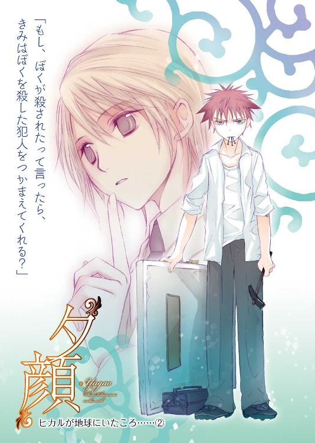
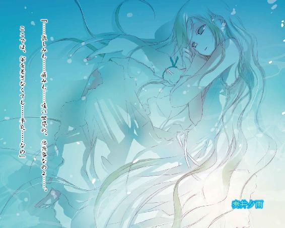
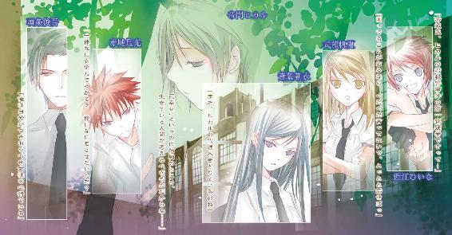
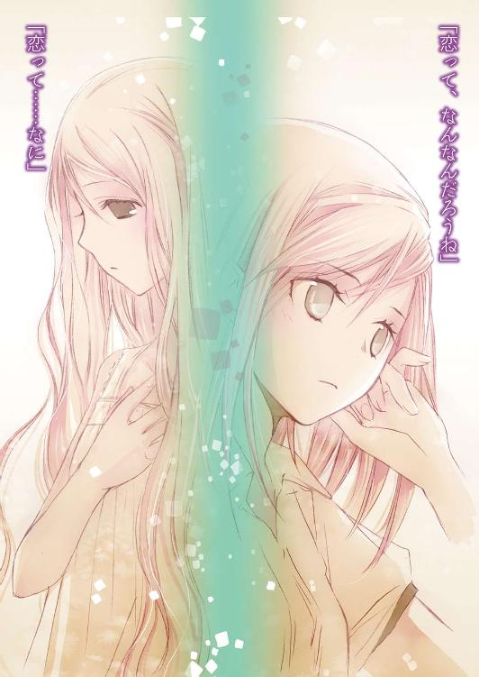
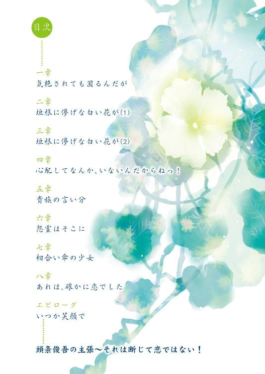
本作品の全部または一部を無断で複製、転載、配信、送信したり、ホームページ上に転載することを禁止します。また、本作品の内容を無断で改変、改ざん等を行うことも禁止します。
本作品購入時にご承諾いただいた規約により、有償・無償にかかわらず本作品を第三者に譲渡することはできません。
本作品は本文縦組で制作されております。ごらんになるリーディングシステムにより、表示の差が認められることがあります。
きっと誰もがそう思っているだろう。
十六歳の誕生日を迎えることなく、その輝かしい命を終わらせる前、ヒカルはあきらかに様子がおかしかった。
感情の浮き沈みが激しく、虚ろな眼差しで宙をぼんやり見つめた直後に華やかな笑みを浮かべてみせたり、取り巻きの少女たちと明るい声をあげてじゃれあったあと、青ざめきった顔で目を伏せたり。
深夜に学園のプールで溺れかけた写真が、校内新聞に掲載されたこと。
プールサイドに這い蹲り喘ぐ彼のしなやかな素肌に、制服のシャツが張りつき、月の明かりを吸い込んで妖しく光っていたこと。
「ちょっと泳いでみたかっただけだよ」
と、天使のように澄んだ瞳で微笑んだこと。
風邪薬を大量服用し、授業中に椅子から崩れ落ちてしまったこと。
保健室で目覚めたときも、
「最近眠れなかったから、これなら睡眠薬代わりになるかなと思って、ちょっと飲みすぎちゃったみたいだね」
と、やっぱり穢れのない白く美しい顔で――笑っていた。
そんな風に無邪気に騒乱を振りまき、彼の愛を乞う女たちの心をもつれた糸のように搔き乱し、ある日――生まれ変わったかのように澄みきった、静かな表情になった。
ヒカル――。
あなたはあのとき、あなたの心の中で、なにかを選び、なにかを決めた。
見られても差し支えのないものなら、あなたはいくらでも心の内を見せてくれた。
けどあなたが見られては困ると心の奥深くに慎重に隠しているものこそ、わたしは見たかった。それがどれほど見苦しく、暗く、混沌としたものであっても。
なのに、あなたは一人で決めてしまった。
ヒカル、
あなたのその決意が、
みんなを、狂わせたのよ――。
「雨に濡れた花は、心にしんしんと染みこんでゆくような風情があるね」
是光の隣で、ヒカルはやわらかな口調で言った。
声に香りがあるのなら、吐息を含んだその声は、とても甘く上品で、雨まじりのしめった空気の中にほのかに広がってゆく。
「青ざめた花弁に甘い露をたたえて、それがこぼれ落ちないよう必死に耐えている露草の健気さ。ほっそりした肢体を雨に濡らしながら凜と咲き誇る花菖蒲の気高さ。水玉で身を飾り虹色に輝く紫陽花の無邪気さ――どれも、この季節ならではの魅力にあふれているよ」
梅雨が早まったようにしめっぽい日が続く五月の終わり。学園へ向かう朝の土手道。
無骨な濃紺の傘を差し、地面にたまった水をはじきながら猫背気味に歩く是光の横を、ヒカルは傘も差さずに陽気に歩いている。
白いブレザーとスラックスは学園の制服だ。優雅で品格のあるデザインは、やさぐれ気味の是光にはまったく似合っていないが、ヒカルはオートクチュールのように着こなしている。
「ねぇ、是光、きみも雨の日は花や女の子が、普段より秘密めいて魅力的に見えると思うだろう？ 傘の下からのぞく儚い唇や、細い首筋や、白い手足や華奢なウェストに、きゅんきゅんしちゃうだろう？ 制服のシャツが雨に濡れて透けてしまって、下着の線が見えたりするのに、心拍数が上がっちゃうだろう？ 濡れた髪からシャンプーの甘い香りがただよってきたら、そのかすかな香りをもっと味わいたくなって、思わず目を閉じてしまうだろう」
「......閉じねーよ」
苦い声で、是光は吐き捨てた。
「女の髪をくんくん嗅ぐとか、変態か、おまえは」
登校中の他の生徒に聞かれたら、一人でつぶやいている痛いやつに見えるので我慢していたが、こうも朝からぺらぺらと〝雨の日の花と女の子に関する一考察〟について講釈されては限界だ。
「このタラシ、ハーレム皇子、花フェチ、口説き魔、節操なし、変態ドリーマー、大噓つきのペテン師野郎」
周りに聞こえないよう、できるかぎり低い声でつぶやき続ける。
ヒカルが、傷ついた！ という顔で訴える。
「ひどいよ、是光！ なにがそんなに気にくわないのさ」
なにが気にくわないの？ だって？
たいていの生徒がびびる鋭い目を、ヒカルのほうへぎょろりと向け、是光は断言した。
「すべてに決まっているだろう、この詐欺幽霊」
そう、帝門ヒカルは幽霊である。
なので、雨の日に傘を差さなくても濡れない。
シャツは常にぱりっと清潔で、ブレザーは白く輝き、薄茶色の髪は、少女めいた小さな顔の周りでそよそよとそよいでいる。
学園の皇子と呼ばれたヒカルが亡くなったのは、一月ほど前である。
是光は葬儀にまで出席した。
が、それがマズかった。
そこで、幽霊になって浮遊していたヒカルに取り憑かれ、
『婚約者の女の子に、誕生日のプレゼントをあげる約束をしたんだ。それが叶えば心残りもなくなって成仏できるから、赤城くん協力して！』
と、かき口説かれ、このまま一生トイレや風呂にまでついてこられたら困ると、仕方なく承諾した。そうして、さんざん苦労したあげく、どうにかヒカルの代理人としての役目をまっとうした。
ところが――消えるはずのヒカルは、消えなかった。
それどころか爽やかな顔で、
『あと四、五人、ううん、四、五十人ほど心残りな女の子がいて』
などと言い出した。
それは約束が違う！
（てか四、五十人ってなんだ！ そんなに女と約束しまくってたのか？ 葵一人が特別じゃなかったのか？ このタラシ！ 浮気者！ あと百回死んでこい！）
と、是光の腹立ちはおさまらないのだった。
「ねぇ、そろそろ機嫌を直してよ。騙すつもりなんてなかったんだ。ぼくだって早く成仏したいんだよ。自分の姿が鏡に映らないなんて、こんな悲劇はないよ。いくら服を変えて髪型をキメても、自分じゃ見られないんだから。今日の肌の具合なんて、最高にしっとりしてていい感じなのに。髪だってこんなにさらさらしてて、きっといい感じにキューティクルが光ってるだろうに。ああっ、見たい」
（おまえの悲劇は、その程度かよ）
「是光も、ぼくが消えたらやだって、ぼろぼろ泣いたじゃないか」
（そうだ、あのときの涙を返せ、つか、ヤダと駄々ったりはしてねぇ）
「ねぇ、きみにしか頼めないんだ！ お願い、是光！ あと少しだけぼくにつきあって！ きみの力を貸して！」
（四、五十人が、少しかよ）
いや、葬儀会場にあふれんばかりだった女たちのことを考えれば、
『実は、あと四、五百人くらい』
と言い出しかねない。
清純可憐な少女のように綺麗な顔をしていて、ヒカルは真性の女好きだ。とてもつきあっていられない。
「断る。タラシなおまえの後始末のために、女になんか近づきたくない」
顔を思いっきりしかめて唸るように言うと、ヒカルが、
「あれ？」
と目を見張った。
「女の子の可愛さに目覚めたんじゃなかったっけ？ きみ、葵さんのこと、可愛いって」
「っっ」
指摘され、頰が熱を帯びる。
確かに、ヒカルの代理として遊園地で葵をエスコートしたとき、表情がくるくる変わる様子を可愛いと思ったし、抱きしめたとき、男とは根本的に違う華奢でやわらかな体の作りにドキドキしたりもした。
是光をヒカルの友達と認め、心を開いてくれてからは、はにかむような微笑みを見せてくれるようになった。
昇降口で会ったりすると、ほんのり頰を染めて、好意的な表情で、
「おはようございます、赤城くん」
と、そっと挨拶をしてくれる。
放課後も、美術部でヒカルの絵を描いているようで、他の部員たちとも少しずつではあるが、お互いに歩み寄りつつあるようだ。
そう。葵はいいのだ、葵は。
問題は、クラスメイトの――。
勝ち気そうなつり目の少女が頭に浮かび、いっそう口がヘの字になったとき、
「あ、式部さん」
ヒカルが、前を歩いていた赤紫のチェック柄の傘の女生徒を見て、声をあげた。
是光のこめかみが、ぴくりと引きつる。
「ほら、是光、式部さんだよ。挨拶しようよ」
是光の眉間に思いきり皺が寄っていることに気づいていないのか、それとも、そんなのいつものことだから気にしないのか、明るい声で是光をせかす。
「うわぁ、式部さんの足、やっぱりいいなー！ 細くてまっすぐで、本当に綺麗な足だよねー。歩き方も、きびきびしてて気持ちいいね」
そんな風に帆夏を褒め称える言葉を聞いていると、ますます胃がむかついて、顔がこわばってしまう。
「是光？ なんで式部さんを睨んでるの？」
ようやくヒカルが、怪訝そうに尋ねた。
同時に、校門を通り抜けようとしていた帆夏も、是光に気づいた。
帆夏の肩が、ハッとしたように跳ね上がる。
是光も反射的に身構える。
目と、目が、しっかりあう。
勝ち気そうにつり上がった眉の下の瞳も、同じように尖っていて不機嫌そうだ。唇の端も下へ曲がっている。
是光の口も、同じように下向きになる。
それでも、
「う、うす」
と、挨拶してみた。
「......」
帆夏は、ふんっ、というように顔をそむけて、先に歩いていってしまった。
（おいこら！ クラスメイトが挨拶してんのに、ガン無視かよ！）
こめかみをぴきぴき震わせ、早足で帆夏を追う。
（挨拶をされたら返すのが礼儀ってものだろう。だいたい俺がなにをした？ 一体、なにを根暗く怒ってる？）
歯を食いしばり、帆夏の隣に並ぶ。
帆夏がさらに眉をつり上げ、足を速める。それで是光もまた青筋を立てて追いすがる。帆夏がその先を行く。是光が並ぶ。帆夏がまた追い越す。
是光も帆夏もムキになって、前へ前へと進んでゆく。
「～～～～っ」
「くぅぅぅぅ」
（くそぉ、女になんて負けるか）
途中から目的がすっかりすり替わり、
「是光、朝からそんなに息をハァハァ乱して汗をかかなくても......。また注目を浴びてるよ」
と、ヒカルにひっそりと指摘される。
目つきの悪さと全身から発する黒々としたオーラから、是光は中学時代から引き続き、この平安学園でも〝地獄の番犬〟〝ヤンキーキング〟と呼ばれ、噂の的なのだった。
きっとまた今度も、
『一年の赤城が、飢えたケダモノのような目で、女子を追いかけていた！』
と言われてしまうのだろう。
「ついてこないでよ、ヤンキー」
帆夏が昇降口の前で、是光のほうへ傘を向け、ぱっと水をひっかける。
「無茶言うな！ 仕方ねーだろっ。同じクラスで席も隣なんだから。つかヤンキーじゃねぇ！」
「その顔が、まるごとヤンキーよ」
キツイ声で言い捨て、さらさらのライトブラウンの――是光に言わせればむささび色の髪を振りやり、下駄箱へ向かう。
なんて態度だ。やっぱり女なんてろくでもねぇ！
葵のことで親身に相談に乗ってくれたときは、女にもいいやつがいるんだなと、認識をあらため、『これだから女は』という女嫌いの祖父の口癖を、封印しても良いような気になりかけていたというのに。
先週からのツンケンした態度で台無しだ。
「見たか、ヒカル！ あれが女だ。あんな理不尽な生き物に、俺は金輪際関わるのはごめんだぜ」
人目を忘れて声を荒らげる是光の横で、ヒカルが、
「あー......うん。でも、式部さんがあそこまでツンツンしてるのは、きみにも多少責任があって......。えーと、ぼくの口から言っていいものか」
と、もごもごつぶやく。
「なんだ、男のくせにはっきりしねーな」
「うん、やっぱり式部さんに悪いから黙っていよう。まぁ、きみもそのうちわかるよ。そう、十八歳の誕生日くらいまでには......多分」
と曖昧に笑ってみせる。
一方帆夏は、下駄箱の前にいたクラスメイトに、二重人格としか思えないほど明るく挨拶していた。
「おはよ、みちる」
「あ、おはよ～、ほのちゃん」
「みちるが見たがってたＤＶＤ、持ってきたよ」
「わ、ありがと、ほのちゃん」
後ろにひとつに結んだ短いおさげに、大きな眼鏡をかけた真面目そうな女子は、是光たちのクラスの級長だ。皆は『級長』と呼ぶが、帆夏だけは『みちる』と名前で呼ぶ。
（おいおい、俺への陰険な態度とずいぶん違うじゃねーか）
むかついて睨んでいたら、おさげの級長がびくん！ と飛び上がり、
「あ......お、おおおお、おは、おはよう、赤城くん」
と、嚙みまくりながら挨拶をした。
「......うす」
嫌われ者のヤンキーにまで、毎朝律儀に挨拶をする彼女は偉い。級長の鑑だ。ただ、是光を見るたび目をむいて、小刻みに震えさえしなければ。
「みちるってば、赤城なんかに挨拶することないのに」
帆夏がぼそっとつぶやく。
やっぱりこの女ムカツク！ と、是光のこめかみがまたひくついたとき。
「ええっ！ ヒカルの君って殺されたの？」
いきなり耳に飛び込んできた声に、是光は、はっ！ とした。
隣でヒカルも静止し、目を細め、真顔になる。
廊下に女の子たちが数人かたまり、興奮してしゃべっている。
「このメールにそう書いてあるよっ。あれは事故じゃなくて殺人だって」
「やだ、チェーンメール？」
「あやし～」
「でも、大雨の日に川に落ちたっておかしくない？ 普通、そんなに雨降ってたら、川になんか行かないよ」
「だよねー！」
「じゃあヒカルの君は、本当に殺されちゃったの～～～～！」
「おい――」
是光が彼女たちのほうへ足を踏み出しかけたとき――。
人気バンドの、ノリのよいヒット曲が軽快に流れた。
帆夏の携帯だ。
帆夏がスカートのポケットから、うっとうしそうにパープルの携帯を抜き出し画面を見おろす。
幾度か指を動かしたあと、
「なにこれ......」
掠れた声が漏れた。
「どうしたの？ ほのちゃん？」
携帯をのぞきこんだみちるも、目を丸くする。
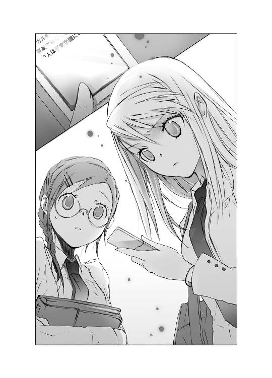
「ほほほ、ほのちゃん！ こっ、こっ、これってヒカルの君の――」
「見せろ！」
是光はみちるの横から押し入り、帆夏の携帯を凝視した。
小さな画面にショッキングな文字が並んでいる。
『ヒカルの君の死は、事故ではなく殺人。
犯人は平安学園にいる』
「！」
固い唾を飲み下す是光の耳に、廊下のあちこちから携帯の着信音が聞こえた。
◇ ◇ ◇
帝門ヒカルは、学園の人間に殺された！
最初に誰が発信したのかわからないメールは、昨夜から今朝にかけて学園内部で爆発的に広がり、休み時間も、『犯人は誰か？』という話題でもちきりになった。
「ヒカルの君に、女をとられた男が恨んでやったんじゃない？」
「いーや、ハーレム皇子に捨てられた女がやったんだろう」
「犯人は、高等部にいるのかしら？」
「中等部か大学かもしれないぞ」
「先生だって、ありえるわ」
そんな言葉を、むっつりした顔で聞きながら、是光は立ち入り禁止の屋上へ向かった。
空は鉛色で、まだ雨がしとしと降り続いている。
出入り口近くのひさしの下で、壁に背中をくっつけて雨宿りしながら、低い声でヒカルに問いかける。
「......おまえ、川に落ちて死んだんじゃないのか？ 誰かに殺されたのか？」
前に、報道部の近江ひいなが、
『ヒカルの君は、殺されたって噂があるんですよ』
と、言っていた。自分は、そのネタを追っているのだと。
あのときヒカルは、話をそらした。
『ぼくは浮気者のハーレム皇子だから......ぼくを殺したがっていた女の人は大勢いただろうね』
大人びた口調で、そうつぶやいて。
暗い目をしながら、否定も肯定もしなかった。
あのあと、きちんと尋ねる機会がないまま、やっぱり無責任な噂だったのだろうと、無理矢理納得しかけていた。
そのことが今になって、これほど広まるなんて。一体誰が、なんの目的で、あんなメールを送ったのか？
ひょっとして、メールの内容は、事実なのか？
是光が帆夏の携帯を見おろしたまま、頰を引きつらせて固まっていたとき、ヒカルは感情の読めない暗い目をして沈黙していた。
そのあとも、いつものように暢気に話しかけてくることはなく、ただ、
『誰が送ったんだろうね』
と、つぶやいて、淡く微笑み、あとはずっと黙っていた。
そんなヒカルに、是光は真相を問いただして良いのか、ずいぶん迷った。授業中、胃がぎちぎちと締めつけられ、気分が悪くなったほどだ。
（ヒカルが話したくねーなら、訊かねーほうがいいんじゃねーか）
屋上で、人目を気にせず話ができる状況になった今も、迷いは残る。
（けど、もしかしたら、ヒカルが成仏しねーで、ずっと俺に取り憑いてることと関係があるのかもしれねーし。そ、それによっ、多少強引にでも、こっちから聞いてやんねーと、話せないことってのもあるんじゃねーか）
これまで、ヤンキーぽい見てくれのせいでクラスメイトたちから敬遠され続けてきた是光には、ヒカルがはじめてできた友達だった。
なので、どこまで踏み込んでいいのか、どうしたら相手を傷つけず力になれるのか、わからない。一から十まで戸惑うことばかりだ。
だから、まずは、まっすぐぶつかってみる。
単純そうに見えて一向に底を見せない、このやっかいな友人がどんな反応をするか、なにを考えているのか。
「どうなんだ、ヒカル」
静かに雨が降りしきる中、ぎこちなく言葉を紡ぎながら、ヒカルの表情をじっとうかがう。
ヒカルは是光に横顔を向けたまま、小さく笑った。綺麗にそろったまつ毛を伏せていて――なんだか儚げで、孤独な感じのする笑いかただった。
そうして、
「困ったな」
と優しくつぶやいた。
「なんで、こんなに噂になっちゃってるんだろうね。どんな死にかたをしたって、ぼくが〝死んだ〟という事実は変わらないのに」
是光の心臓が、どきんと音を立てる。
また、はぐらかした？
「けど、是光」
ヒカルが是光のほうへゆっくりと顔を向け、じっと目を見つめる。
（うっ）
息を止め、耳をこらす是光に、真剣な顔で言った。
「もし、ぼくが殺されたって言ったら、きみはぼくを殺した犯人をつかまえてくれる？」
◇ ◇ ◇
（すっげー、ボロアパートだな）
傘を差し、肩に通学鞄を提げた是光は、目の前の建物を啞然として見上げた。
放課後。
学園から二十分ほど歩いて辿り着いたのは、風があと少し強く吹いたら飛んでいってしまいそうな、年期の入った木造アパートだった。
二階建てで、部屋数は四つほどで、薄い木の塀と柵で周りを囲み、壁は灰色でところどころヒビが入っている。雨が降っていて薄暗いため、いっそうみすぼらしくホラーチックに見える。
（俺んちも相当古いけど、ここはそれ以上なんじゃ......）
本当に、こんなところに、ヒカルを殺した犯人がひそんでいるのか？
『ぼくを殺した犯人をつかまえてくれる？』
と、ヒカルは言った。
『て！ 犯人どこにいるのか、知ってんのか！』
やっぱり殺人だったのか、と目をむく是光に、
『うーん......知ってるっていうか、多分、あそこじゃないかなって』
と、もってまわった言いかたをし、
『よし、警察に通報しよう』
是光が勢い込んで携帯を取り出すと、それを止めて、
『確定というわけじゃないから。もし犯人がいなかったら、刑事さんに怒られちゃうよ。それに、なんて説明して犯人の家に一緒に行ってもらうの？』
『う......』
確かに、殺された当人の口から聞いたとは言えない。
『まず、ぼくらで見に行こう』
おまえ、そんな簡単に......。
と思いはしたが、ヒカルの口調や表情が普段の五割増しで、熱心でシリアスだったのに引き込まれて、ここまで来てしまったのだった。
「このボロ――いや、歴史資料とかになりそうな渋いアパートで間違いないんだな」
一応念を押す。
ヒカルは学校を出るまでとうってかわった、おだやかな懐かしそうな眼差しで、雨に濡れて黒ずんだ柵を眺めている。
「うん、間違いないよ。この垣根に白い花が咲いていたんだ。震えているようなくしゃっとした花弁を、雨に濡らしてね......」
今年もあの健気な花は咲くのかな......と、夢見るような眼差しでつぶやく。
「こんなときまで花かよ」
是光は、ちょっとあきれた。
「で、どの部屋だ？」
「一階の奥だよ」
そこはカーテンがきっちりと閉じられていて、暗い。
が、その向こうに、ほんのわずかにゆらめく影があり、是光は目をすぼめた。
「よし、行くぞ」
柵の間を通り抜け、建物の裏手にあるドアのほうへ進む。
後ろの民家との間に距離がほとんどなく、通路に影が落ちていて暗い。緊張で胃がせり上がってくる気がする。
奥の部屋のドアの前で、立ち止まる。
チャイムが見あたらないので、とりあえずドアを叩く。
返事がない。
（留守か？ いや、さっきカーテン越しに、なんか動いてたし......）
と。
向こうから、こつん......っ、と音が返ってきた。
聞き逃してしまいそうな低い――軽い音だ。
首筋のあたりがいっきにざわめく。
「すみません、ちょっといいすか」
と低い声で呼びかけながら、再度ドアを叩く。
また軽い音が、ドアの下のほうから聞こえた。
（なんか、おかしくねーか？）
何故音は返ってくるのに、ドアは開かないのか？ それに音がする位置もおかしい。
（ずいぶん下のほうから聞こえてくるような......って、中で人が倒れてるんじゃ！）
でなければ、手足を縛られ猿ぐつわをかまされた人間が、ポーチに這い蹲って肩や頭で、必死にドアを叩いているのでは。
そんな想像が頭の中を駆け抜けた瞬間、ドアノブを両手で強くつかんで、ガチャガチャ回していた。
手から落ちた傘が、通路に転がる。
「どうした！ なにがあった！」
返事はないが、呻き声のようなものが耳をかすり、ますます焦りが増す。
「くそっ」
ドアを回しながら体当たりをかましたら、老朽化していたのか、蝶つがいがはずれ、さらにノブが音を立てて引っこ抜け、ドアが開いた！
そのまま中へ踏み入る。
「無事か！」
玄関の脇にコンロと流しがあって、その向こうはすぐに部屋だ。
六畳ほどの狭い空間は、灯りもなく暗く、家具だかガラクタだか判別のつかないものが、ごちゃごちゃ積んであり、廃墟のようだった。
「って、あれ......？」
誰もいない？
そんなバカな――。
慌てたとき、足元で、
「ニャア......」
と声がした。
視線を下げると、床に白い猫がつんとすまして座っている。薄闇の中で目が妖しく輝いている。
ひょっとして、物音も呻き声も、猫だったのか!?
（やべぇ、ひとんちのドア壊しちまったぜ）
汗がどっと噴き出たとき、暗がりで、身じろぎするものがあった。
「......！」
再び息を飲み込む。
しだいに闇に目が慣れてくると、中の様子が少しわかってきた。
部屋の向かって左脇に二段ベッド。
正面にカーテンのかかった窓。
中央に、丈の低い丸テーブル。その上にノートパソコン。向かって右側に、扇風機？ や椅子？ ハンガー？ カラーボックス？ ゴルフバッグ？ などが置いてあり、壁のいたるところに写真や紙が貼り付けてある。
そうして――。
カラーボックスと扇風機の中間くらいのスペースに、こんもりとした山がある。
毛布？
いや、毛布を頭からかぶった人間――少女だった。
床にうずくまり、合わせ目から白い顔をほんの少しだけのぞかせて、不安そうな眼差しで是光を――ドアを壊して不法侵入してきた赤髪の少年を、見つめている。
なんだ？
こいつは誰だ？
どうなっているんだ？
是光の頭の中が、ぐるぐる回り出す。
自分はここに、ヒカルを殺した犯人をとっつかまえに来たんじゃなかったのか？ こいつが殺人犯なのか？ えらく弱そうだが。
声を詰まらせ、ヒカルのほうを見る。
するとヒカルは涼しげな表情で、是光のかたわらを、すーっと通り過ぎ、少女のほうへ歩いていった。
幽霊のヒカルは、是光にしか見えない。
少女は、小さな指先で弱々しく毛布をかきよせ、是光のほうをうかがっている。毛布からはみ出た、か細い髪が、額や頰に、力なくかかっている。
そんな少女の前で、ヒカルはそっと膝をおり、この上なく愛おしそうな優しい眼差しで、語りかけた。
「怖がらないで、夕雨。是光はぼくの信頼する友達だよ。彼がぼくの代わりに〝約束〟をはたしてくれるよ」
ここに至ってようやく是光は、ヒカルにはめられたことを悟ったのだった。
（この詐欺師！ 噓つきハーレム野郎！ なにが、『ぼくを殺した犯人をつかまえてくれる？』だ！ クソ真面目な顔して、また人をさらっと騙しやがって！ 今すぐ地獄へ行って閻魔大王に舌を抜かれてきやがれ！）
心の中で罵倒しまくる。
が、いくらヒカルに腹を立てても状況は変わらない。
たとえ是光がヒカルをぼこぼこにしようとしても、こぶしはヒカルの体を、あっさりすり抜けてしまうだろう。是光が間抜けに見られるだけで、ヒカルのほうは痛くも痒くもないのだ。
そして、今このときも、少女はヒカルではなく是光を、こわごわと見つめている。
白い猫も顔を少しもたげて、観察するようなクールな眼差しを是光に向けている。
（おい、こっから、どうすりゃいいんだ）
額に汗がにじみ、奥歯を嚙みしめる。
ヒカルは少女のかたわらで、まかせたよ、というように微笑んだ。
（このっ、なに笑ってんだよ！）
喉に込み上げる叫びを、ぐっと飲み込み、是光は玄関に立ったまま、ぎこちない説明をはじめた。
「あ、その......俺は怪しいもんじゃなく、ヒカルの友達で、あんたのこと頼まれて」
「......雨が」
薄闇に溶けてしまいそうな、儚く淡々とした声が、少女の唇からこぼれる。
「へ？ 雨？」
少女の眼差しは是光を越えて、開きっぱなしの玄関のほうへ向けられていた。その目の中に、これまでよりもっと明確な、強い怯えが浮かんでいる。
是光もつられて振り返る。
雨の勢いが激しくなったようで、耳を打つ音が高く鋭くなり、通路に転がった傘に、横から吹き込んできた雨があたって、ばちばちとはじけた。
「悪ぃ。ドアは、あとでちゃんと直すから」
とれかけたドアを手で支え、少女のほうへ向き直ったとき。
糸がふっと切れるように、少女が床に崩れ落ちた。
「な！」
慌てて靴を脱ぎ捨て、駆け寄る。みしみしと床が揺れ、壁に寄せてあるガラクタも震動した。
「しっかりしろ！ こら！」
顔をのぞきこみ、呼びかける。
「くそっ、暗くてよくわからねー」
天井から伸びている紐を引っ張り灯りをつけようとするが、壊れているのかつかない。
「大丈夫。夕雨は繊細だから、気絶しちゃっただけだよ」
横でヒカルが是光を励ますように言う。
「全然大丈夫じゃねー！ ひとごとみたいに言うなぁぁぁ！」
是光がわめくと、青い目の猫が、やれやれというように肩をすくめて前足をなめた。
「とにかく、ものすごく内気な子なんだ。去年から引きこもってて、学校にも行ってなくてね」
その夜。
ヒカルは是光の部屋で、奏井夕雨について滔々と語った。
「本当はこの春から高等部の二年に進学の予定だったんだけど、出席日数が足りなくて、留年しちゃったんだ。だから今は、ぼくらと同じ一年生だよ。
ちょうど引きこもりをはじめた頃にご両親が離婚して、お母さんは仕事でオーストラリアへ行っちゃって、お父さんは若い女の人と再婚して、その人と暮らしている。お母さんは夕雨をオーストラリアへ連れて行こうとしたみたいだけど、夕雨は、お母さんとちょっとうまくいってなくて......結局一人であんなボロ――ううん、趣のある古風なアパートに住んでいるんだ。
生活費は、今はお父さんが出してくれているけれど、向こうも子供が生まれたばかりで大変みたいで、振り込みがない月もあって、ぎりぎりなんだ。電気やガスも今まで二回くらい止められて、それでも文句ひとつ言わず健気に引きこもってるんだよ。まるで、闇の中で白い花弁を広げる夕顔のような子なんだ。
あ、夕顔っていうのはウリ科の蔓性の一年草だよ。夕方から花びらを開いて、夜の間、月明かりに照らされて、ひっそりと咲くんだ。そうして、朝の光が地上を照らしはじめるころ力を失い、萎んでしまう。儚くて美しい、いじらしい花なんだよ。つけ根のひょろっとした巻鬚も可愛くてね。花言葉は〝夜の思い出〟とか〝儚い恋〟とか――別名で黄昏草とも呼ばれていて――」
花と女の子の話をはじめると、止まらないのはいつものことだ。
気分が盛り上がってきたのか、白いシャツに細身のパンツに裸足というくつろいだスタイルで、ふわふわ浮きながら、熱弁を振るう。
（まったく、いい気なもんだぜ）
同じく部屋着のジャージに着替えた是光は、畳にあぐらをかき、頰をこわばらせていた。
あの引きこもりの毛布娘が気絶したあと、どれだけ大変だったと思っているのだ。
介抱をしようと薄暗い部屋の中を歩き回って、いろんなものにつまずくわ、ぶつかるわ、積んであった箱が崩れてきて中身が散乱して、また大わらわだわ。
しまいに隣の住人がやってきて、強盗と間違えられて警察に通報されかけた。
毛布娘が目覚めなかったら、絶対に通報されていた。そうしたらまた是光の悪評は高まっただろう。下手したら退学ものだ。
「ねぇ、お願い、是光」
ヒカルが是光の前に、膝をそろえて正座する。背筋がすっと伸び、手の位置も美しい。厳しいしつけを受けた人間の座りかただ。こういうところは育ちがよいのだなと素直に感心する。
「葵さんのときみたいに、夕雨のことも頼まれてくれないかな。あんな弱々しくて綺麗な子、男なら放っておけないよね」
澄んだ瞳で、哀願するように是光を見つめる。そのへんも神妙で絶妙だ。
「......顔なんて、暗くてわからなかったぞ」
「大丈夫、ちゃんと美人だから。保証する」
「美人とかどうでもいい。つか、今度はどんな約束をしたんだ？ この約束魔」
じろりと睨んでやると、大人びた静かな笑みを浮かべて答えた。
「それは今は言えない」
「はぁ？」
言えないって、どういうことだ？
顎を突き出し身を乗り出すと、一転して子供のようにいたずらっぽく無邪気な笑顔で、両手をあわせた。
「とにかくお願いっ。是光も、壊したドアを直すって夕雨に約束したよね？ きみともあろう人が、か弱い女の子の家のドアを壊しっぱなしで、ばっくれたりしないよね？」
「ぐ」
それを言われると、言葉が出なかった。
◇ ◇ ◇
翌朝。普段より二時間も早く家を出た。
「なんだい？ 球技大会の朝練でもすんのか？」
ぼさぼさの髪に、腕まくり裾まくりのジャージで起き出してきた叔母の小晴に、うさんくさそうな視線を向けられ、
「......まあな」
と、適当に答える。
「工具箱を持って？」
小晴は、是光の手元を見て突っ込んだあと、
「喧嘩は素手でやれよ。武器を使うなんざ、喧嘩のルールがわかってない素人のすることだからね」
と、目をきつく細めて忠告し、肩をこきこき鳴らして台所へ引っ込んだ。
「小晴さんって、喧嘩の玄人なの？」
ヒカルの素朴な問いに是光は、
「......聞くな」
しかめっ面で答えたのだった。
雨上がりの清澄な光の中でもやっぱりおんぼろな、アパートに辿り着く。
夕雨の部屋のドアを叩こうとしたら、隣の部屋から髪を巻いた厚化粧の女性が顔を出し、是光を睨んだ。
「あんた、また来たの？ これから寝るんだから、昨日みたいな騒ぎは起こさないでよね」
「すいません、ドアの修理をするんで......ちょっと音が出るかもしれないけど、なるたけ早く終わらせますから」
昨日のように警察を呼ばれそうになってはかなわないので、神妙に告げ頭を下げる。
水商売らしき隣人は、敵意をあらわにしたままじろじろ是光を見ていたが、
「ふんっ、さっさとしてよ」
と言って、大きな音を立ててドアを閉めてしまった。
「あのお姉さん、ぼくにもすごくキツくて、よく夜中に出入りするなとか子供のくせに朝帰りなんて教育委員会はなにをやってるのとか、からまれたよ。けどスタイルいいし美人だよね～。真っ赤なゼラニウムって感じ」
と、是光にとってはどうでもいいことをヒカルが爽やかに言う。
「おまえが隣の女とまで約束してなくて、よかったぜ」
横目で見ながら嫌みを言い、あらためて夕雨の部屋のドアを軽く叩いた。
昨日是光が壊した箇所は、今はビニールテープとガムテープで補修してある。
「おい、奏井夕雨......。起きてるか。ドアを直しにきたぞ」
しばしの無音のあと、ドアがそっと開いて、一センチほど隙間ができた。
そこから黒い目と、青い目がのぞく。
不安そうな黒い目は引きこもりの少女のもので、青い目はクールな猫の目だ。
是光が工具箱を見せる。
ドアがさらに一センチほど開く。
そのままこわごわと是光を見上げている。
立ったまま延々と見つめ合っていても話が進まなそうなので、
「邪魔するぞ」
ドアに手をかけ、強引に開いた。
水色の毛布を頭からかぶったか弱げな少女が、慌てて後ずさり、そのまま部屋の隅に待避する。
二段ベッドと壁の隙間に身を潜め、そこからまた是光をじっと見つめた。
自分の赤い髪や、鋭い目つきが、世の女たちにどんな印象を与えるのかを、是光は経験上よーく知っている。学園の女どもは、是光と目をあわせようとしない。
だが、弱々しくて力なさげなその少女は、あきらかに是光を怖がっていることは伝わってくるのに、怯えた目で是光を見つめ続けているのだった。
飼い猫の白猫にいたっては是光の足元に、尻尾をくるりと巻いて座り込み、ひんやりした青い目で見上げてくる。
道具箱を開け、金槌と釘を出す。一人と一匹の視線を感じながら作業をするのは、えらく居心地が悪く、緊張した。
そんな是光を、元凶のヒカルが、のどかな表情で眺めている。
「へぇ、釘打つの上手だね。さすが是光、ほれぼれするよー。よっ、デキる男」
（世辞を言っても誤魔化されねーぜ。てめぇは見物してるだけかよ）
静かな朝に、かーん、かーん、と金槌を振り下ろす音が響く。隣の女がうるさいと怒鳴り込んでこないかと、ひやひやした。
夕雨は、置物のようにベッドと壁の隙間から動かなかった。頰にかかるか細い髪を振り払うこともせず、じっと身をひそめている。
部屋の中は朝だというのにカーテンを閉め切ったままだ。それでも布越しに朝の光が漏れ出て、昨日よりは明るい。
壁に魚や海の写真や、パソコンからプリントアウトしたと思われるカラーコピーがびっしり貼ってある。それが玄関のドアから吹き込む風で、さわさわと揺れる様子は、岸辺に寄せる波のようだった。
扇風機やハンガーやゴルフバッグや炊飯ジャーは、貝殻やビー玉やガラスの破片で飾られ、青や紅色のビニール紐が、二段ベッドの縁から海草のように垂れ下がっている。
（なんか......変わったインテリアだな）
ヒカルの話だと、一年前から引きこもりをはじめ、必要なものは水や食料も含めて、すべて通販で取り寄せ、部屋の外へ一歩も出ない生活だという。
（こんなカーテン締めきりで、灯りもないじめじめしたとこで、毛布をかぶってうずくまってたら、体にコケとか生えてきそうだぜ。健康に、すっげー悪そう）
毛布の合わせ目からのぞく少女の肌は、雪のように白い。ちょっとだけ出ている指も真っ白で、爪まで白っぽく見える。きっとろくに太陽にあたっていないせいだろう。
（そういえば......こいつは、ヒカルが死んだことを知っているのか？）
思い至った瞬間、ぎくっとした。
ずっと引きこもっていて、他人との交流もなかったとしたら、ヒカルの訃報を知らされていない可能性もある。
（マズイ）
鼓動がにわかに高まる。
夕雨が、ヒカルがつきあっていた女たちの一人であったことは間違いない。夕雨にとってヒカルは恋人だ。
その恋人の死を、夕雨とさして親しくもない是光の口からどう伝えたらよいのか。
釘を打つ手を止め、是光は夕雨から視線をそらし、さりげなく（実際は声が上擦っていたが）切り出した。
「あー......その、俺が、あんたのとこに来た理由は、昨日言ったよな。ヒカルに、あんたとの約束を代わりにはたしてくれるよう頼まれたって。それで、なんでヒカルが自分で来れないのかってゆーと......ヒカルのやつ、この前、うっかり死んじまったんだ」
「......是光、ぼくは〝うっかり〟死んだわけじゃ」
ヒカルが不満そうに異議を唱えたとき。
「......知ってる、わ」
儚い声がした。
顔を横に向けると、水色の毛布を頭にかぶったまま、夕雨がじっと是光を見ていた。
か細い髪が白い顔に幾筋か降りかかっている。そこに浮かんでいるのは、哀しみよりも、もっと深く静かな感情で、あきらめのように見えた。
空気に溶けてしまいそうな弱々しい声が、淡々と続ける。
「......メールを、もらった、から」
「メール？ そうか、友達が知らせてくれたんだな」
夕雨は目を伏せ、ひっそりと首を横に振った。
「知らない......アドレス。名前も......書いて、なかった」
「夕雨、そのアドレス、まだ残ってる？ 見せてもらえるかな」
尋ねたのはヒカルだった。ちょっとだけ真面目な表情を浮かべている。
「そいつはまだあるか？ よかったら見せてくれねーか」
夕雨はためらうように、より深くうつむいたあと、毛布の端をずるずる引きずって移動をはじめた。
脚の低い丸テーブルの上にノートパソコンがあり、その横にトルコブルーの携帯電話がある。
毛布の合わせ目から、白く細い指を伸ばし、携帯を引き寄せて蓋を開け、いくつか操作をしたあと、おずおずと是光のほうへ差し出した。
受け取って見おろすと、ヒカルも横からのぞきこんでくる。
メールが送られてきた日付は、ヒカルの葬儀の前日だった。ヒカルの訃報が、個人的な感情を一切交えない簡潔な文章で綴られ、葬儀の場所と日時が記してある。
夕雨が言うように、差出人の名前らしきものはない。
アドレスの先頭は『ｕｐｖｋｐｖ』――。
これもどう読むのか不明で、意味のある単語というより、ただアルファベットを適当に並べただけのように見える。
「......」
ヒカルは考えに沈んでいる目で、唇をきゅっと結んでいる。
「ありがとな」
夕雨に携帯を返そうとして、是光は息をのんだ。
「！」
夕雨が静かに泣いていたからだ。
白い頰を、透明な雫がほろほろとこぼれ落ちてゆく。
激しい痛みや苦しみがあるわけではない。ただ、澄んだ黒い瞳を涙で濡らして、今にも消えてしまいそうに、ひっそりと泣き続ける。
「お、おい、よせ、泣くなよ」
是光は焦った。
女の涙は苦手だ。いつも泣いていた母親を、思い出してしまうから。
彼女も、声を出さずにひっそりと涙をこぼす人だった。
――ごめんね、みっちゃん。
――ごめんね。
胸の奥が搔き乱され、息が苦しくなる。
くそっ、なんであいつのことなんか......。
必死に歯を嚙みしめ、頰に、目に、力を入れる。
夕雨が頰を涙で濡らしながら、か弱げな声でつぶやく。
「......ヒカルのお葬式......雨が降っていて......いけなかった......。最後の、お別れ......できなかった......」
途切れ途切れの言葉が、あまりにも儚くて、淋しくて、擦れるような痛みを胸に呼び起こして――。
夕雨に、ヒカルがまだここにいることを教えてやりたい。けど、ヒカルの姿は夕雨には見えていない。気休めとしか思われないだろう。
そのヒカルが、伏せた瞳に憂いをにじませ、いたわるように夕雨の肩に腕を回した。男のくせに細くて綺麗な指先が、夕雨の体を包む毛布にすーっと入ってゆく。
「ごめんね......夕雨。もっと早く来てあげればよかったね。こるりと二人きりで淋しかったね。ごめんね」
ささやきかける声のしんとした響きに、是光の喉に込み上げる痛みも増大する。
ヒカルに抱かれていることを、夕雨は知らない。
青い目の猫が、夕雨を慰めようとするように足元に寄り添う。
夕雨が弱々しくうつむく。
その頰をまた透明な雫がすべり落ちてゆく。
「た、頼むっ、泣かないでくれ。いや、ヒカルのアホが急にいなくなっちまって泣きたい気持ちなのは、よぉぉぉっくわかるし、俺だって、あいつが行っちまうかもって思ったとき、ぼろぼろ泣いたから、すっげー無茶言ってるってのもわかるけど。頼むからもう泣くなっ」
是光は必死に訴えた。女が泣くのは本当に本当にたまらない。
心臓が破けそうになる。
それでも夕雨が泣き続けるので、目をぎょろりとむいて、言ってしまった。
「俺がっ、ヒカルの代わりに俺が、約束を叶えてやるから！ 最後まできっちり責任をとるから！」
夕雨が顔を上げて、是光を見る。
驚いているのだろう。
濡れた目をわずかに見開いていて、涙が止まっている。
その顔を強く見つめ返し、熱のこもる声で、今一度、はっきりと告げた。
「俺が、叶えるから」
こめかみを引きつらせ、眉を鋭角的につり上げ、きっと今、すごく凶悪な顔をしているだろう。このおとなしげな少女が、怖がらなければいい。
夕雨を抱きしめているヒカルが、まぶしそうに目を細めた。口元をかすかにほころばせて、是光を見つめる。
夕雨の瞳に、また不安そうな――戸惑うような色がにじんだ。
儚なげな声が、問いかける。
「約束って......どの？」
「へ？」
是光は間抜けな顔になった。
（どの......だと？）
ヒカルが、「あっ、あれ」とつぶやき、夕雨からそそくさと離れる。
「おまえ、ヒカルと約束をしたろう？」
「いくつもあって、よく......わからないわ」
（いくつもだぁ？）
是光は、ぎろっとヒカルを睨んだ。
ヒカルが、
「やぁ、こるり、元気だった？」
と、猫の頭を撫でるふりをする。
猫が、「？」と、顔をしかめる。
「......こるりに、ガラスの鈴のついた首輪を持ってきてくれるということ？ それとも、扇風機に色を塗ろうということ？ 〝海にあるものしりとり〟の続き？ グラスに青いジュースを注いでストローを二本差して、一緒に飲もうと言ったこと？ ヒカルはいつも、部屋を出るとき、『約束だよ』って指切りをしてくれて......」
「うふふ、こるりの目は地球の色だねぇ。露草みたいな瑠璃色で素敵だねぇ。そうそう、露草の花言葉は〝尊敬〟とか〝懐かしい関係〟とかいうんだよ」
（おいこら！ なにが、『うふふ』だ。すらっとぼけて猫と戯れてんじゃねー！ 花言葉とか語っている場合か、この約束魔！）
「......ヒカルは、あなたに、なにを頼んでいったの？」
夕雨が儚げな瞳でじっと是光を見つめる。ヒカルが是光に託したことを、知りたがっているようだった。
「うぅ」
唸りながら横目でヒカルを見る。
ヒカルは気まずそうに微笑み、両手をあわせた。
「くそっ、それはだから、その......っ、約束の中でも特に重要な約束だ！ ほら、あったろう、そういうの」
「重要な......？」
「そうだ、一番大事な約束だ」
登校時間が迫っている。ドアもまだ仕上げの途中だ。
頼むっ、なんとか思い出してくれ。そしたらもう、どんな無茶なことでも全力で叶えてやるから。
「もしかしたら......」
夕雨がうつむく。
「心当たりがあるんだな！ よし！ きっとそいつに違いねー！」
勢いよく身を乗り出すと、夕雨はまつげをそっと上げ、真面目な顔でつぶやいた。
「蛍光灯をつけかえてくれるということ......？」
是光の手から金槌が落ちた。
◇ ◇ ◇
「一体なにを企んでやがる？ 俺になにをさせたいんだ？」
どうにかドアの修理を終え、学園へ続く土手道を爆走しながら、是光は唸った。
「ぼくは、約束をはたしてほしいだけだよ」
是光の傍らを悠々と浮遊しながら、ヒカルがしゃくにさわるぼっちゃんづらで、答える。
「だから、その、〝約束〟ってのはなんなんだっ？ てか本当にあんのか？ 絶対にはたさなきゃならねー重要な約束とやらが。しりとりの続きとかくだらねーことだったら、金輪際おまえとは口きかねーぞ」
ヒカルの眼差しが、急に大人びる。
「うん、親友のきみにしか頼めない大事な約束だよ。夕雨と一緒にそれを考えてくれないかな」
信頼のこもった澄んだ瞳で是光を見つめ、優しい声でささやく。そんな顔をされると調子が狂う。足がもつれて、一瞬コケそうになった。
（本当に、なにを考えてるんだ、こいつは）
言いたいことは山ほどあったが、今は遅刻しないことが先決だった。
どうにか間に合い、下駄箱で靴を履き替えながら、呼吸を整える。
「ハァハァ......とにかく、だな、人に頼みごとすんなら、ゼイゼイ......内容くらい、はっきりさせろ。でなきゃこっちも動けねーだろ......ゲホッ」
「是光、二キロを全力疾走したあとで、無理してしゃべらないほうが......」
ヒカルが呆れ顔になったとき。
「あの人が、ヒカルの君を殺した第一容疑者だって」
「！」
是光は、がばっと顔を上げた。
ヒカルを殺した犯人が、近くにいるのか！
見渡せば、いつの間にか周りに人垣ができていて、何故かみんなこっちを見ている。
「ヒカルの君のストーカーだったんでしょ？」
「ヒカルの君と自分は、親友だって言ってたんだって」
「妄想が高じて殺害に及んだんだな」
「ホモの愛憎って、激しいっていうし」
（ちょっと待て）
四方から向けられる疑惑の視線に、頰が引きつる。
（俺がヒカルのストーカー？ 妄想が高じて殺害に及んだとか、ホモの愛憎って......）
耳から入ってくる情報が頭の中で組み合わさり、愕然とした。
（ひょっとして、俺が、ヒカルを殺っちまったと思われてるのか――っっっ！）
そのまさかだった。
学園中が、赤城是光こそ、ヒカルの君殺害事件の犯人と疑っているようで、あのあと是光が廊下へ踏み出すなり人垣が崩れ、左右に分かれていった。それはいつものことなのだが、ヤンキーでマフィアの息子で......というささやきの代わりに、
「あの人が、ヒカルの君を」
「ゆがんだ愛憎が」
とささやかれるのには、背中がぞわりとし、蕁麻疹が出そうになった。
ようやく教室に辿り着くと、今度は騒がしかった室内が静まり返り、クラスメイトたちが一斉に目をそらした。
いつも怯えながら挨拶をしてくるおさげの級長まで、自分の席で丸めた背中をふるふる震わせ、是光のほうを見もしない。
是光の隣の席の帆夏だけは、なにか言いたそうなふくれっつらを向けてきたが、是光が近づくと、息をのむ表情になり、慌てたように顔をそむけてしまい、授業中も、そのままそっぽを向いていた。
休み時間になってもまだ、
「あいつが、ヒカルの君を殺したんだって」
と、ささやく声が聞こえてきて、是光はいいかげんにしろという気持ちでいっぱいだった。
（俺がヒカルを殺すわけないだろう）
「是光は目立つから、みんなわかりやすい憶測に飛びついちゃうんだろうね。困ったな、なんとかならないかな」
是光の横で、ヒカルが申し訳なさそうに眉根を寄せている。
「ハッ、相手にするのもアホらしいぜ」
と是光は平気なふりで、つぶやいてみせた。
本当は、こめかみがぴきぴき音を立てそうなほど、むかついていたのだが。
と、そのとき。
「バカみたい」
隣で、険しい声がした。
眉をキッとつり上げ、不機嫌そうな顔で携帯の画面に文字を打ち込んでいた帆夏が、それをぱちんと閉じる。
クラスメイトたちが困惑の表情で見守る中、はっきりした声で告げた。
「誰が送ったのかもわからない噓メールに振り回されるなんて、ガキっぽい。言いたいことがあるなら、署名つきで堂々と発信すればいいんだよ。裏で無責任な言葉を吐いてる卑怯者の言葉なんて、あたしは信用できない」
教室の中が、シンとする。
帆夏は、是光に横顔を向けたまま、怒っているようなきつい目で宙を睨んでいた。声にも眼差しにも怯えた様子はなく、ただどこか必死な感じがした。よくよく注意して見ると、机に置いた手が少し震えている。
おさげの級長が慌てて立ち上がる。
「そ、そうだよねっ、ほのちゃんの言うとおりだよね。証拠もないのに人を疑うなんて、よよよよくないよ」
クラスメイトたちが、うしろめたそうに視線を交わし合う。
しばらくぎくしゃくした雰囲気が続いていたが、みんなそれぞれに動きだし、帆夏の周りにも、級長や他の友人たちが集まり、
「どうしたの？ 帆夏」
「いきなり、あんなこと言うなんて」
と、心配そうに尋ねた。
「......別に、ムカついただけ」
と、唇を尖らせ、ぶっきらぼうに答えるのを、是光は胸の内側がじんと痺れるような気持ちで聞いていた。
「このクラスには、ぼくの他にももう一人、きみの味方がいるみたいだね、是光」
隣でヒカルが嬉しそうに言った。
「式部！」
休み時間。帆夏が教室を出て行くのを見て、是光は急いであとを追いかけた。
「さっき、ありがとな。俺のことその、か、庇ってくれて」
女に庇われるなぞ、男として情けない。けど感動もしていて――相反する気持ちに心がざわめいて、どんな顔をしていいのかわからない。
帆夏は、カァッと赤くなった。
（って、何故おまえが赤くなる？）
「な、なにわけのわからないこと言ってんのっ。赤城なんかのために言ったんじゃないよ。あたしが個人的に思ったことを口にしただけなんだから、ヤンキーなんて庇うわけないじゃない、変な誤解しないでよねっ」
と、つっけんどんに言い、
「なれなれしく話しかけないでっ」
ざかざか歩いていってしまった。
残された是光は、しばし啞然とした。
（なんだ、あの感じの悪さは。話しかけるなと言いやがったぞ）
「くそぉ、やっぱり女ってわかんねー！」
こめかみに青筋を立て、唸ったのだった。
「式部さんって......不憫な性格だよね。個人的にはすごくわかりやすくて、からかって金魚草みたいに真っ赤に染めたくなっちゃうけど、是光には難易度高すぎだと思う」
ヒカルが溜息をつきながら、なにかごちゃごちゃつぶやいている。
と、そのとき。
「赤城氏！」
いきなり、耳がキーンとするほど高い声がして、ショートカットの小柄な女子生徒が、大きな胸を揺らして、勢いよく駆けてきた。
報道部の近江ひいなだ。
表情の豊かな、くりくりした目を少年ぽく輝かせながら、是光の腕にしがみつき、早口でまくしたてる。
「赤城氏、ヒカルの君殺害事件の第一容疑者ですって！ うわぁー、ヤンキーキング崖っぷちですね！ 土曜ワイド劇場ですね！ 無実を証明するために、キュートな相棒と一緒に真犯人をつきとめませんか！ とりあえず、今、自分が目をつけているのは――」
わざとなのか無意識なのか、やたら胸を押しつけてくるのに閉口しながら、是光はひいなの口をふさいだ。
「むぐ――」
ひいなが目を丸くして是光を見上げる。それをじっと見おろし、是光は真面目な口調で言った。
「俺は、ヒカルの言ったことしか知らなくていいから。聞く必要ない」
きっぱり告げながら、帆夏の言葉を、思い返したりもした。
噂に振り回されるなんて、バカげている。大事な相手の言葉だけを信じればいい。それなら、たとえ誤りでも、きっと後悔はしない。
ひいながさらに目を見張る。
是光が手を放したあとも、惚けた顔で見上げていた。
そんなひいなに、背中を向ける間際、もうひとつ付け加える。
「それと俺は、ろくでもない噂を流されるのはガキの頃から慣れてるから、このくらい蚊にしょんべんひっかけられたほども感じねぇぜ」
「......って、あんなこと言ってますよ。会長」
赤い髪が廊下の向こうへ遠ざかるのを、ぼんやり見送ったあと、ひいなは急に色っぽい眼差しで振り返った。
曲がり角から、艶やかな長い黒髪の長身の美人――生徒会長の斎賀朝衣が姿を現す。
不快そうに眉をひそめる朝衣に、早口で言葉を投げかける。
「死後も続く友情ってやつでしょうか？ てゆか、まるでヒカルの君からなにか聞いているような口調に感じましたよ自分は。やっぱり、ただのヤンキーじゃありませんよあれ。そもそも高等部から外部受験で入学してきた時点で、バカではないです。うちの学校は世間じゃ、家柄とコネの内部進学組、学力の外部受験組って言われてますからね～。あっ、もちろん、附属幼稚園出身のお貴族様の中にも、会長のように家柄も知力もカリスマも、そろっちゃったりしてるかたもいるわけですけど～。とにかく、赤城氏は、ヒカルの君に関する重要なポイントを握ってる気がします、自分のカン、結構当たるんですよ」
朝衣は、ひいなのおしゃべりを険しい顔で聞いている。ひいなが朝衣にもしゃべらせようと、挑発するように顔を傾け下から仰ぎ見る。
「ま、自分的には会長も、ヒカルの君殺害疑惑の有～～～～力な容疑者候補なんですけどねっ。同じ立場の人間として、赤城氏のことどう思われます？」
朝衣は、挑発に乗って来なかった。
冷ややかな目のまま、
「......鳴き声が耳障りな野良犬、としか思わないわ」
尊大に告げ、歩き去ったのだった。
一方、是光の隣では、ヒカルがしきりに興奮していた。
「感動した！ ぼくが女の子なら、この場で結婚を迫ってるレベル！ うわぁ、もう、カッコいいなー。ああ、本気で鳥肌立った」
（幽霊が鳥肌立つのかよ。てか頰染めるな、きめー）
是光は顔をしかめ、ぶっきらぼうに言った。
「アホなこと言ってんじゃねぇ。おまえがなんか隠してること、納得したわけじゃねーんだからな。ただ、いくらその......と、友達でも、プライバシーってもんがあると思うし、俺も話したくないことくらいあるし......まぁ、おまえが話したくなるまで、待ってもいいかなって......と、友達だし」
途中から、こちらの頰まで熱くなる。こういうマジな話は苦手だ。
「是光の話したくないことって？ 最後におねしょした年齢？ 子供の頃書いた恥ずかしい作文のこと？ 小学校のとき飼育係だったことは聞いたよね......まさか、幼稚園の先生に初恋したこととか！」
「してねぇ！ つか今は、俺のことは関係ねーだろ」
ヒカルの顔が、ふわりとなごむ。目を細め、幸せそうに微笑んだ。
「あは、そうだね。ぼくも是光が話してくれるまで待つよ」
なんだその顔は。にやにやしやがって。本当に幼稚園の先生に初恋とかしてねーからな、それよかおまえ、俺に迷惑かけてる自覚ないだろ。一体、誰のせいで、殺人の容疑者だのストーカーだの言われていると思っているんだ。
心の中で、ぐちぐち考える。
けど仕方がない。そんな迷惑なやつに、取り憑かれてしまったのだから。うっかり友達になってしまったのだから。
「とにかく！ 今のおまえの心残りは、あの引きこもり女なんだな？ あいつをどうにかすれば、成仏に近づくんだな」
「うん。百メートルくらい近づく」
ヒカルが極上の笑顔で、うなずく。
「って、たった百メートルかよっ！ 宇宙まであと何万光年だよ、おい！」
「まぁまぁ、万里の道も一歩からだよ、是光」
「くうぅぅ、頂上に辿り着く頃にはじいさんになってそうだぜ。まぁいい。さっさとすませようぜ」
腹をすえて言うと、ヒカルがまた嬉しそうな甘い笑みを浮かべてうなずいた。
「うんっ、じゃあ、とりあえず夕雨にメールしてみようか」
「は？ メール？」
◇ ◇ ◇
昼休み。
なんで俺がこんなこと......と、奥歯を嚙みしめながら、是光は自分の席で携帯電話のボタンを、ぷちぷち押していた。
（結局、ヒカルにいいように振り回されてねーか？）
「いきなり訪問したら、夕雨が怯えて、鍵を開けてくれないかもしれないからね。まずは夕雨と仲良くなってもらわないと。それにはメールだよ。内気な女の子にはぴったりのアプローチだよ。将来、きみが笑い上戸の女の子とつきあうときの練習にもなるしね」
（だ――っ、まだ笑い上戸の女と俺をくっつける気でいるのか？ 彼女なんていらねーし、笑い上戸の女にも興味ねーって、なんべん言ったらわかるんだ）
心の中で愚痴りながら、額に汗をにじませ、文章をひねり出す。
「相手から確実に返事が欲しいのなら、メールの最後は疑問系で終えるのが基本だよ。それと、相手の好きそうな話題を振ること」
是光の机に華奢な足を組んで腰かけ、女の子へのメール講座をしているヒカルは、えらく楽しそうだ。やわらかな茶色の髪が、風もないのにそよそよなびき、目も生き生きと輝いている。
是光のほうは、ひたすらダルそうに。
（あー疑問系だ？ 相手の好きそうな話題だ？）
『猫の野郎は達者にしてるか？』
「是光......こるりは、野郎じゃなくて女の子だよ」
『猫のスケは達者か？』
「スケって......いつの時代の言葉だい。もっと自然に」
『猫の名前はなんてったっけ？ こばん？ こはだ？ こえんざいむ？』
「ねぇ、今、こるりって教えたばかりだよね！ ぼくの言葉はきみの耳を素通りしてる？」
「るせーな。聞こえてるって」
ぼそりとつぶやき、メールを打ち続ける。
『昼メシ、なに食った？』
『肉は、ちゃんと食ってるか？』
『ビタミンＣもとれよ』
どうもしっくりしない......。夕雨から返事も来ない。
「是光、自分が女の子なら、どんなメールがほしいか考えて。平安貴族になったつもりで、もっと雅やかに、情緒的に」
「平安、貴族だぁ？」
ヒカルの衣装が、学園の制服から平安貴族に変わる。
青紫の直衣が清々しい。
幽霊になったヒカルのまるで役に立たない能力が、この〝お召し替え〟だ。中でも平安貴族の装いはお気に入りらしく、色や模様を変えて楽しんでいる。本人は鏡には映らないので見ることができないのだが、衣装を変えることで気分が盛り上がるらしい。
「『古今和歌集』で紀貫之も言っているだろう？ 言葉には魂がこもり、人は花や月や山に心を託し、それを歌にして詠んだんだよ。あるときは富士の山の煙によせて人を恋い、あるときは松虫の鳴く音に友を偲び、あるときは草の露や水の泡を見て我が身の儚さを嘆いてみたり――。短い歌の中に、あふれんばかりの想いを込めたんだ。ほら、たとえばこの歌」
ヒカルがふくよかな声で、そらんじる。
「初雁のはつかに声を聞きしより中空にのみものを思ふかな――これは、初雁の声のように、あなたの声をわずかに聞いて以来、すっかり上の空になって恋しい気持ちでおります――という意味だよ。平安時代の貴族の姫君は御簾の奥で生活していて、深い仲にならなければ、姿を見ることもかなわなかったからね。声を漏れ聞いて恋情をかきたてられてしまって、一目会いたいのですと呼びかけているわけだよ。こんな歌をもらったら、今宵いらしてくださいと返事をしたくなるだろう？
それとこの歌――満つ潮の流れひるまを逢ひがたみみるめの浦によるをこそ待て――満ちた潮が流れて引く昼間にはなかなか逢えないので、海松布が海岸に寄る――夜にあなたに逢う機会――見る目を待っています。技巧が凝らしてあってちょっと難しいけど、つまり、夜になったら逢いに行ってもいいかな？ って呼びかけているんだね。ロマンチックだよね～」
十代の野郎の口から、ロマンチックなんてむずがゆい言葉を聞くとは思わなかった。
（てか会いに行くのに、いちいち歌を詠まなきゃいかんのか？ 面倒くせーな、平安人）
いいかげん慣れない文章をひねり出すのがわずらわしくなり、よほど、『放課後行くから、鍵を開けておけ！』と、打ってやろうかと思ったが、水色の毛布の合わせ目からのぞく、白い顔や、不安げな瞳、涙で濡れた頰が頭に浮かび、指が止まった。
「......」
女なんてわけがわからないし、好かれたいとも思っていない。
けど......。
家を出て行った母にどことなく似た雰囲気のある、あのか細い引きこもり娘を、傷つけたり、怖がらせたりは、したくなかった。
――夕雨は繊細だから。
――怯えて鍵を開けてくれないかもしれないよ。
「くぅっ」
夕雨が好きそうなこと、夕雨が望んでいることはなんなのだろう。
儚げな瞳が、頭の奥でちらちら揺れる。
脳味噌を絞り上げるようにして考えて、『蛍光灯をつけかえてくれるということ？』と、ささやく声が耳をかすった。
そうだ、あの暗い部屋はどうにかしなければ。あちこちぶつかって、まともに歩けやしない。蛍光灯......明かり......光るもの......海の写真が貼ってある部屋。海で光ってるのは......？
『ちょうちんあんこうを拾った。放課後、持って行ってもいいか？』
画面に文字を打ち出し、送信する。
「って、是光、あんこうは道路には落ちてないよ！ たとえるなら、もっとこう色気のあるもので、優雅にロマンチックに――せめて蛍とか」
ヒカルが思いきり突っ込む。
「るせっ」
唸りつつ、自分でもちょっとわかりにくかったかなー、つか、どこのメルヘン小僧だと恥ずかしくなったとき、手に持った携帯が震えた。
「あ......」
返信が、来た。
メールを開けると、一言、
『はい』
とだけ、記されている。
耳元で儚げに、「はい」と、ささやく声が聞こえたような気がして、ぼぉっとする是光の横でヒカルが、
「ええっ、あの内容でオッケーなの？ そこはもっとハードル上げようよ、駆け引きしようよ」
と、納得のいかない口調でつぶやいていた。
「ほのちゃん、どうしたの？ なに見てるの？」
みちるに声をかけられて、帆夏はハッとして首を慌てて前へ向けた。
「べ、別にっ」
是光が必死の形相で携帯をいじっているのが気になって、ついそちらばかり見てしまったなんて言えない。
「なんでもないよ」
つっけんどんな声で言い、赤い顔で自分の携帯を開いたのだった。
（赤城......誰にメール打ってるんだろう）
◇ ◇ ◇
「なんだか嬉しそうだね、是光」
「はぁ、どこが？ ふつーだ、ふつー」
「でも、口元ゆるんでるよ」
「しつけー。ふつーだっつってんだろ」
是光はムキになって否定した。
放課後。
途中の店で購入した蛍光灯を持って、夕雨のアパートへ向かう。
さんざん苦労して打ったメールに、一言だけでも返事が来たことに、是光は少しだけ浮かれている。けど、それを指摘されるのは、照れくさかった。
なので頰や口の端をぐっと引きしめ、アパートを囲む木の柵の間を通り抜けようとしたとき――。
（ん？）
「どうしたの？ 是光」
急に立ち止まって振り返った是光に、ヒカルが怪訝そうに尋ねる。
「いや、今、嫌な感じの視線を感じたんだが」
「嫌な感じって？」
「首の裏側がちくっとするっつーか、そういうときは大抵、チェーンやナイフをちらつかせた野郎どもがいやがるんだぜ」
「そんなに何度も狙われたの！ そうやって数々の死闘をくぐりぬけて、キングオブヤンキーと呼ばれるようになったんだね」
「ヤンキー言うな！ ......てか、誰もいねーな。カンが鈍ったかな」
舌打ちして、アパートの通路のほうへ進む。
すると夕雨の隣の部屋のドアが開いて、またあの水商売風の女が顔を出して、是光をじろりと睨んだ。
「ここ、男禁止なんだけど」
「そんなの聞いてねぇぞ」
「あたしが、今、決めたのっ。こっちは金づるのボンボンに逃げられたばっかだってのに、ガキが隣でサカってんじゃないよ。用がすんだら、すぐ帰んな」
言いたいことだけ言って、乱暴にドアを閉めてしまった。
「って、てめぇの都合じゃねーか」
口汚さと一方的に主張を押しつけてくるところが、同居している出戻りの叔母に似ている。女は歳を重ねると、みんなああなるものなのか。
「是光、大声を出すと、夕雨が怯えるから」
「お、おう」
ヒカルにたしなめられて、おとなしくドアをノックする。
「おい、あんこう持ってきたぞ」
少しの間のあと、ドアがしずしずと開いて、水色の毛布を引きかぶった少女が顔をのぞかせた。
「よ、よう」
緊張して挨拶すると、
「ニャア」
少女の代わりに、その足元で青い目の猫がそっけなく鳴いた。
夕雨が、ドアからそっと身を引き、後ずさる。よく見ると裸足で、歩きかたも、なよなよとして危うげだ。
（運動不足だな、よくないぜ）
是光は顔をしかめた。が、それは今は口にせず、中へ入り、
「椅子、借りるぞ」
と言って、それを踏み台にして、蛍光灯の付け替えをはじめた。
夕雨はやっぱり部屋の隅にうずくまって、不安げに澄んだ眼差しで、是光の作業を見守っている。
古い蛍光灯をはずし、床に下ろそうとすると、細い手がおずおずのびてきた。
それが夕雨の手だとわかって、ちょっと驚いた。
「あ、さんきゅ」
「......」
夕雨が、こくりとうなずき、蛍光灯を受け取り、床に置く。そうしてまた、部屋の隅に退避し、そこから不安げに是光を見上げる。
なにか話したほうがいいのかな、と思い、
「蛍光灯、いつ切れたんだ」
と尋ねると、か細い声で、
「......一ヶ月くらい前から......ちかちか......してたの。完全に、止まったのは、ヒカルのお葬式のメールをもらった、二日前......よ。その日に、ヒカルは、亡くなったのですって......」
と、淡々とつぶやいた。
蛍光灯の寿命とヒカルの寿命の間に、なにかしらの関連性を感じているようで、哀しげに目を伏せる。また泣かれたらどうしようと、是光ははらはらした。
「そっか。不便だったろ。けど、蛍光灯くらい本当は一人で付け替えたほうがいいと思うぞ」
「......ごめんなさい」
「いや、責めてるわけじゃねーから。謝るな」
泣かれるのと同じくらい、謝られるのが大の苦手なため、ますます焦ってしまった。
「よし！ 付け替え、終わったぞ！」
大きな声で言い、椅子からおりる。
紐を引くと、カーテンを閉め切った薄暗い部屋が、ぱっと明るくなった。カーテンの色が南の海の色と同じあざやかなブルーなことに、はじめて気づく。
壁にはりめぐらせた海と魚の写真やコピーも、くっきりと見える。貝をくっつけた扇風機や、炊飯ジャーやゴルフバッグは、明るい中で見てもやっぱり異様だ。
（つか、扇風機と炊飯ジャー、壊れてんのな。扇風機、羽が欠けてるし、炊飯ジャー、内蓋と釜がねーし。これは家電じゃなく、やっぱインテリアなのか？）
と、夕雨が立ち上がって、是光のほうへ頼りなげな足取りで、歩いてきた。
といっても、狭い部屋なので、ほんの二、三歩だが。
顔を上げた拍子に、かぶっていた毛布が少しだけ後ろにずれ、やわらかそうな細い髪がはらはらとこぼれ落ちてきて、小さな白い顔があらわになる。
是光は目を見張った。
はじめてまともに見る夕雨は、海に浮かぶ真っ白な花のようだった。
綺麗な子だよ――というヒカルの言葉どおり、ひっそりとした美しさをたたえていた。
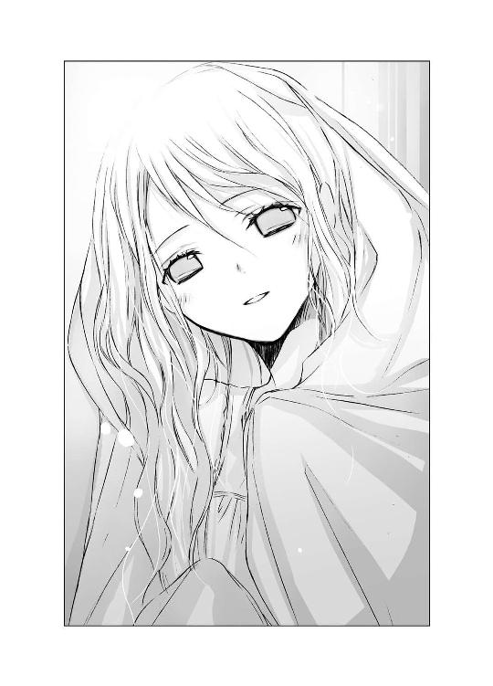
儚げな瞳で是光を見上げたまま、桜貝のような清楚な唇をほころばせる。
ひどく淡い、笑みだった。
けど、笑った。
是光に向かって。
にっこりと、恥ずかしそうに。
「......ありがとう」
小さな声でお礼を言われた瞬間、心臓がドキンと跳ね上がった。
（な、なんだ。なんで急に顔が熱くなって――）
自分の体に起こった変化に戸惑いながら、是光は渇いた喉で言葉を絞り出した。
「こ、これくらい、いつでもしてやる。ヒカルに頼まれてるし。だから、その......」
ヒカルがおかしそうに目を細めているのも、焦りと混乱に拍車をかける。そんな中、ぎこちなく言葉を続ける。
「明日も、来ても、いいか？」
夕雨がこくりとうなずいた瞬間、めまいがした。
帰り道。
ヒカルがいたずらげな眼差しで言った。
「ね、夢のように綺麗な子だったろう」
とたんにまた頰が火照って、息苦しくなって、ずっと口をへの字に曲げていた。
そして翌日も――。
「......よぉ」
「......」
ドアの隙間から、毛布をかぶった夕雨と、白い猫が顔をのぞかせる。
邪魔するぞ、とぶっきらぼうに言うと、不安そうな目で、小さくうなずく仕草をし、裸足でぺたぺた後ずさる。
（まだ、警戒してんのかな......）
是光も緊張して、靴を脱いで部屋に上がった。
海の色のカーテンは今日も閉じたままだが、電気がついていて明るい。夕雨がベッドと壁の隙間に身を縮めてしゃがみ込み、そこから儚げな黒い目で是光を見つめる。
（こういうとき、なにしゃべればいいんだ）
昨日までは、ドアを直したり、蛍光灯を付け替えたりと忙しかった。しかし今日は、特にやることがない。
「あー......ヒカルとの約束、思い出したか？ その、猫の首輪とかじゃなくて、もっと特別なやつ」
夕雨が眉をちょっと下げ、首を横に振る。
「そ、そうだよな、すぐには思いつかねーよな。あいつ、約束魔だし」
つっかえながら、横目でヒカルを睨むが、ヒカルは涼しい顔で肩などすくめてみせる。
（ったく、こいつは）
ヒカルが言うところの瑠璃色の目の猫が、ヒカルがいるあたりを見て首を傾げる。
動物はカンが鋭いというから、〝なにかがいる〟気配を感じているのかもしれない。
が、それより、あっという間に話題が尽きてしまった。
部屋の中がシンとし、手のひらに汗がにじむ。
夕雨も気まずそうに、毛布の間から見ている。眉は下がったままで、昨日笑ってくれたのは幻だったのかと、ズキッとする。
「す、炊飯器とか扇風機とかゴルフバッグとか、あ、アートってやつか？」
貝殻やガラスの破片で、デコレートされたガラクタを指さし尋ねると、不安そうな目を是光に向けたまま、か細い声でつぶやいた。
「......あれは、お魚たちのお墓で、祈りの......塔なの」
「はぁ？」
「海の世界を......守っているのよ」
「......」
（やべぇ、相づちが打てねぇ）
いわゆる頭がお花畑ってやつか？ 引きこもりすぎてメルヘンの世界に行っちまったのか？ それとも女って、みんなこうなのか？
是光は必死に話題を変えた。
「写真っ、魚ばっかだな。魚、好きなのか？ 俺も、肉より魚派で、ブリカマとか、塩鯖とか、最高だよな」
（うっ、はずしているような気がするぜ）
夕雨は暗い顔で目を伏せてしまった。
やっぱりブリカマがマズかったのか、女はスモークサーモンとかのほうが好きだったか、と悔やんだとき。
「......写真は、ヒカルが......持ってきてくれたの。お部屋に来るときは......いつも」
夕雨が淋しそうな声でつぶやいた。
伏せたまつげが、瞳に影を落としている。ヒカルのことを思い出しているのか？ また泣いてしまいそうだ。
（いいいいかんっ。女の好きそうな話題ってなんだ！ おいこら、ハーレム皇子。猫の喉くすぐってないで、フォローしろ）
しかし、ヒカルはおっとりした笑みを浮かべ、猫とたわむれている。是光は仕方なく叫んだ。
「ヒカルとは！ いつもどんな話をしてたんだ？」
（って、アホか！ また思い出させてどうする！）
口にしたとたん激しく後悔し、
「あ、あいつ俺に、笑い上戸の彼女を見つけてやるとかうるさくて。って、関係ねぇか」
と、誤魔化そうとしてますますドツボにはまったとき。
夕雨がそっとまつげを上げ、
「......お花の......話」
小さな声で、つぶやいた。
「花？ ああ、いつも花壇のパンジーがどうとか、池の周りの水仙はほっそりした乙女のようだとか、むずがゆい話してるもんな」
「むずがゆいって......」
猫をいじっていたヒカルが、すねてる顔をする。聞こえているなら手助けしてほしい。
夕雨は夢見るような瞳で、続けた。
「公園の桜の芽が、赤ちゃんのほっぺみたいなピンク色になってきたとか......チューリップが満開で、いっせいに笑っているみたいだとか......」
白い頰が少しずつ明るく染まってゆくのを、是光は驚きとともに見つめた。
「......公園に女王様みたいなあやめが咲きはじめたとか......道ばたのコンクリートのひびわれから、たんぽぽの花が顔をのぞかせていたとか......。石楠花や春紫苑や鈴蘭が、会いにいくたび違う顔を見せてくれて可愛いんだよとか、もうすぐアカシアやピラカンサも咲くよ。楽しみだな......とか」
やわらかな空気をまといながら、瞳の奥をうっとりと輝かせる夕雨。
その目の裏に浮かんでいるであろうヒカルの姿が、是光にも想像できた。
きっと、今、この部屋の真ん中で、床に片膝を立てて座り、そこに顎をのせて首を傾けて、くつろいでいるみたいに。
片手で猫の喉を撫でる仕草をしながら、目を甘く細めて、光そのものみたいに、きらきらした眼差しで、夕雨を見つめて――。
小さな声で語る少女と、優しく見つめる少年。
淋しそうに閉じられていた夕雨の唇が、少しずつほころんでゆくのに、是光は胸の鼓動が痛いほど高まった。
夢のような、幻のような微笑みから、目が離せない。
「......ヒカルがお花の話をしてくれると......わたしもヒカルと一緒に、お花でいっぱいの公園を、お散歩しているみたいだった。二人で並んで、桜の花や、藤棚を見上げているみたいだった......」
この上なく、幸せそうにつぶやく夕雨。
ヒカルと過ごす時間は、夕雨にとって、おだやかで優しいものだったのだろう。
きっとヒカルは夕雨に、外の世界の色や香りを運んできてくれる存在だったのだ。
ヒカルのふくよかな優しい声に耳を傾けながら、夕雨は外界に咲く花々を想像する。
その形を、
その色を、
その香りを！
そうして美しい想像を抱きしめて、やわらかな毛布にくるまれ幸福な眠りにつくのだ。
ヒカルの次の訪れを、静かに待ちながら。
（こんな、ボロいアパートに引きこもって、ガスとか電気とか止められちまうようなド貧乏で、蛍光灯もろくに替えられねーような生活してて、なんで――そんな風に、満ち足りた顔で笑えるんだ。そんな――幸せそうな顔で）
昨日、感じためまいや動悸はますます激しくなり、顔もどんどん熱くなり――。
是光は混乱しながら、夕雨の顔に浮かぶ白い花のような笑みを見つめていた。
（なんなんだ！ こいつは、なんなんだ！）
胸の奥で、繰り返し叫びながら。
（変だ、絶対変だ。俺はどうしちまったんだ）
衣替えが過ぎ、制服のシャツが半袖に替わり、夕雨の部屋に通うのがすっかり日課になった放課後――。
是光は、コンビニの食品棚の前で唸っていた。
胸が頻繁にドキドキしたり、頭が沸騰したヤカンみたいに熱くなったり、舌がろれったりするのは、季節はずれの風邪なのだろうか？
それも夕雨と一緒にいると症状が強まる。夕雨が是光に対して、心を開いてくれているみたいに、ひっそり微笑んだりすると、さらに悪化する。学校や家にいるときも、夕雨のことを考えるといきなり発症する。
「――っ、これは、なんなんだ」
「〝辛さ三倍熟成キムチ〟だと思うよ」
ヒカルがさらりと指摘した。
「それ、六つも買うの？」
気がつけば、カゴにキムチの瓶が山盛りになっていた。
顔を赤らめ、棚に戻してゆく。
「夕雨への差し入れなら、辛いものはよしたほうがいいよ。是光の好みじゃなく、夕雨の好みを考えて選ばなきゃ」
「おおおお俺は別にっ、そんなつもりはっ。キムチは俺が食いたかっただけで」
つっかえまくったあと、
「......夕雨の好みって、なんだ」
と、小声でぶっきらぼうに尋ねると、ヒカルは吹き出した。
「てめっ、なに笑ってやがる。だいたい、もとはといえばおまえが、夕雨の面倒を見てやれって言ったんだろーが」
つい人目を忘れてわめいてしまい、レジにいる店員に、びくっとされる。
（やべっ）
首をすくめる是光に、ヒカルがまだ笑いをこらえている顔で、
「そうだね。ありがとう。夕雨の好きな食べ物はね、甘くて透きとおったものだよ」
と教えてくれた。
そこからまたぐるぐる悩んで、氷砂糖を買って、アパートへ行く。
ドアをノックすると、儚い瞳の少女と瑠璃色の瞳の猫が出迎える。
「よ、よう」
ぎこちない挨拶をすると、こるりが「なー」と鳴き、夕雨が目と口元をほんの少しなごませ、小さくうなずく。
はじめて会った日、頭からつま先まですっぽりおおっていた水色の毛布は、今では肩にかかっていることが多くなった。
毛布の下は、たいていノースリーブのワンピースで、靴下ははかず裸足で、首筋や腕や、たまにちらりとのぞく、すねや足首の細さと白さを目にするたび、ドキッとした。
「土産だ」
スーパーの袋ごと、腕を突き出す。
夕雨が受け取って中をのぞき込み、たちまち頰をほころばせる。
「ありがとう......大好きなの」
氷砂糖なんかで、ここまで幸せそうな顔をしてくれるとは思わなくて、是光はますます鼓動が高まり、顔が熱くなった。
夕雨が袋を開け、透きとおった氷砂糖をひとつ指でつまみ、照明にかざして目を細めたあと、口元に運び小さく齧る。
かりっという音がして、ますます幸せそうな頰をほころばせた。
そうすると、心臓が破裂しそうなほど暴れるのだった。
部屋は狭く壁は薄く、ときおり隣の部屋でドアを開け閉めする音や、どすどす歩く音、それに怒鳴り声が、響き渡る。
「ったく！ 不景気でどの男もケチりやがって、やってらんないわよ！ あ～、お先真っ暗！ つか隙間風ちょー寒いんだけど！ あたしに貢いでくれる男以外、全員死ね！」
と大音量で聞こえてきて、ぎょっとすることがたびたびあった。
けど、夕雨はそんなときも、ぽーっとしていて、
「あの音は......波が、岩にあたって砕けているのね」
「今、くじらがくしゃみをしたわ」
と、透明な瞳でつぶやくのだった。
内気で怖がりなようでいて、おっとりのんびりしていて、素直に苦難を受け入れる柔軟なところもあるのだと、この数日で知った。
そんなところは、ヒカルに似ているような気がした。
そのヒカルは、今日も床に片膝を立ててゆったりと座り、こるりをかまっている。
どうやらこるりには、ヒカルの姿が見えているようで、ヒカルのほうへ前足を伸ばして触れようとする。爪で何度か宙を引っ搔いたあと、怪訝そうに、じっと見上げる。
こるりは、夕雨がアパートで引きこもりをはじめた頃に、どこからか迷い込んできた猫で、耳が悪いのだという。そのぶん人や物を注意深く見つめるクセがあるのだと。なので、人には見えないものの気配も感じ取っているのかもしれない。
ヒカルもこるりを優しく見つめ返し、こるりの前足と自分の指をちょこんとあわせたり、喉をくすぐる真似をしたりしている。
（こいつも、わかんねーよな。夕雨との約束のことも、相変わらずヒントのひとつもくれねーし。ここに来ても猫と遊んでばっかで。本当に俺になにをさせたいんだ）
じっとり睨んでいると、夕雨に心配そうに訊かれた。
「どう、したの......？」
「あ、いや、その......ひ、ヒカルとはどういうきっかけで、親しくなったんだ」
あたふたして尋ねると、夕雨はまた目をほんのり明るくし、小さな声で語りはじめた。
「......ヒカルが、はじめて......わたしのところへ来てくれたのは、こるりが来た次の週だった......わ」
去年の夏頃、細かい雨が降り続く夜。
アパートの前に、平安学園の制服を着た少年が、傘を差して立っていた。
外灯の明かりに浮かび上がる、少女めいた綺麗な顔を見て〝ヒカルの君〟だと、すぐにわかった。
当時ヒカルは中等部の三年生で、夕雨は高等部の一年生だったけれど、学園の皇子様である〝ヒカルの君〟を知らない女子などいなかったから。
（なにを......しているのかしら？）
ヒカルが淡い藤色の傘を差したままアパートの柵を眺めていることが、夕雨はとても気になった。
何故、あそこにずっと立っているのだろう。外は肌寒くて、暗くて、雨も降っているのに。なにを、見ているのだろう。
あんな、優しそうな、愛おしそうな眼差しで。
カーテンの隙間からのぞいていたら、ヒカルがふっと顔を上げた。
（！）
目が合い、心臓が止まりそうになった。
急いでカーテンを閉めようとしたとき、ヒカルが涼やかに微笑んだのだ。
胸に、すーっととけ込んでくるような、心地のよい、優しい笑みだった。
そのあと、何故かヒカルは傘を開いたまま柵の前に立てかけると、雨を受けながらアパートの敷地へ入ってきた。
なにが起ころうとしているのか戸惑う夕雨の耳に、その数秒後――。
こんこん......と、ドアをノックする音が聞こえたのだった。
毛布を頭から引きかぶったまま、おそるおそるドアの前まで歩み寄り、そっと耳を寄せると、ふくよかな甘い声が夕雨に呼びかけてきた。
「こんな夜遅くに申し訳ないけれど、雨宿りをさせてくれないかい？ 雨に濡れた美しい花に傘を貸してしまって、困っているんだ」
よこしまな響きなどわずかもない、あたたかく澄んだ声に魅入られたようにドアを開けると、髪やシャツを雨で濡らしたヒカルが、ぽたぽたと透明な雫をしたたらせて、まぶしく微笑んでいた。
「それが......最初」
小さな声で、ゆっくりと......夕雨がつぶやく。
「ヒカルは......垣根に咲いていた、夕顔の花を......見ていたのですって......。あんまり、儚げで健気で......幻想的で、美しくて......見惚れてしまって動けなかったのですって......」
――この垣根に白い花が咲いていたんだ。震えているようなくしゃっとした花弁を、雨に濡らしてね......。
アパートの垣根を懐かしそうに見ていたヒカルの声や表情が、是光の脳裏にもよみがえる。
それは、儚く美しい花なのだと。
夕雨に似た花なのだと。
――朝になると萎んでしまう。月明かりの下で、ひっそりと咲くんだ。
今、ヒカルは、垣根を見ていたときと同じ、懐かしそうな遠い目をして、こるりの頭を撫でている。
ヒカルの指はこるりにふれることはできないが、ヒカルが白い手を優雅に動かすたび、こるりの髭がぴくりとする。
亡くなった恋人が同じ部屋にいることに気づかないまま、夕雨はヒカルがいるほうを儚い眼差しで見つめる。
きっとそこは、ヒカルの指定席だったのだ。
胸がしめつけられるような、慕わしげな、心細げな目――。
ヒカルもときおり、優しい眼差しを夕雨のほうへ向ける。
知らずに見つめ合う二人の姿は、是光を落ち着かなくさせ、自分は邪魔者なのではないかという気持ちにさせた。
けど、ヒカルは夕雨との約束のことを教えてくれないままで、夕雨に言葉をかけることもなく、いつもこるりの相手をしていて、約束のことも、たいして気にしていないようで――。
「そんで、夕雨は......ヒカルの恋人になったんだな」
口から出た言葉が暗くて険しいことに、自分で驚いた。
胃のあたりが、軋むように痛い。俺は、夕雨がヒカルの恋人だったことにムカツイているのか？ それとも、ヒカルが恋人を他の男に任せて猫と遊んでいることに、苛立っているのか？
（くそっ、なんでこんなに、むかむかするんだ）
是光が頰をこわばらせるのを見て、夕雨が口をつぐみ、心配そうな目になる。是光がなんとか普通の表情を作ろうと、口元をむずむず動かし焦っていると、消え入りそうな声で、そっとつぶやいた。
「......誤解......してるかも、しれないけど......わたしは、ヒカルの恋人では......なかった......わ」
「どういう、ことだ？」
是光は驚いて身を乗り出した。
「ヒカルはしょっちゅう、この部屋に来てたんだろ？ 朝帰りとかもして、隣の女に文句言われて――」
夕雨の頰が染まるのを見て、是光の頰もカッと熱くなる。
「わ、悪い。余計なことだったな」
夕雨が目を伏せ首を横に振る。顔がさっきよりもっと赤い。迷うように指と指を絡ませたあと、小さな声で言った。
「本当に......わたしとヒカルは......そういうことは......なかったの。ヒカルが、いろんな女の子とつきあっていたこと、知ってたから......ヒカルに、どうしてわたしとは、その......なにも、し、しないのって......、訊いたことが......あるわ。わたしも......不思議、だったから......」
夕雨はすでに首筋まで赤い。
水色の毛布の端をぎゅっとつかみ、その中に縮こまりながら、切れ切れに語る。
「そうしたら、ヒカルが......優しく微笑んで、言ったの。わたしが、ヒカルに恋を......していないからだ......って」
是光も頰を熱くしたまま、息を殺して夕雨の言葉を聞いている。
ヒカルだけがゆったりと目を伏せ、こるりの喉をくすぐっていた。
「ニャア......」
こるりが静かに鳴く。
夕雨が不安そうな眼差しで、是光を見上げる。
「ヒカルは......目を見れば、相手が恋をしているのかどうか、わかるのですって......。
恋をすると、相手のすべてが欲しくてたまらないという目に、なるのですって。
そうすると......ヒカルは愛おしくてたまらなくなって、そのひととき、自分のすべてをあげてしまうのですって......」
夕雨の声は、しだいに細く掠れてゆき、しまいには口をつぐんでうつむいてしまった。
是光が夕雨の言葉を信じてくれたかどうかを心配しているというよりも、ヒカルのことを思い出して、心を揺り動かされているようだった。
是光の心も、落ち着かなくざわめいていた。言いようのない淋しさが、胸の奥からじわじわと込み上げてくる。
多分、夕雨が哀しそうな顔をしているから。
そして、夕雨が語るヒカルが、光にあふれ華やかな反面、とても孤独に感じたから。
うつむいたまま、夕雨が言う。
「たった一人だけ......相手も自分も恋しくてたまらないのに、抱きしめあえない相手がいるのだって......ヒカルは......言ってたわ。その話をしたとき、ヒカルはとても、苦しそうだった......」
夕雨の言葉が耳に入っていないように、深く静かな眼差しで、こるりの喉をくすぐるヒカル。
そんなヒカルを、瑠璃色の瞳でクールに見上げるこるり。
目を伏せたままの夕雨。
是光は、どうしたらいいのかわからなくなってしまった。
（おい、ヒカル、死んだふりすんな。なんとか言え。おまえのせいで暗くなってんだぞ。猫を撫でくりまわしてる場合か）
目に力を入れ、こめかみを引きつらせ、念じる。
しかし、ヒカルは死んだふりを続けている。
いや、実際死んでいるのだ。幽霊なのだ。たとえヒカルが言葉を発しても、夕雨には聞こえない。
「わたしは、ヒカルの淋しさをぬぐいさることができるなら、抱きしめてあげたかった......」
夕雨が、空気に溶けてしまいそうな儚い声で、ぽつりとつぶやいた。
「けど、それは......恋ではないと、ヒカルは言ったわ」
その口調は、どこか危うげだった。
いくつもの恋を重ねてきたヒカルが違うというのなら、夕雨は本当にヒカルに恋はしていなかったのかもしれない。
胸の奥が甘くとどろく反面、不安に似た思いが広がってゆく。
恋に苦しむヒカルを救いたいと願う夕雨には、相手の痛みをどこまでも受け入れてしまいそうな危うさが、あるように思えた。
強く求められれば、すべてをゆだねてしまいそうな。そんな優しさと空虚さが。
ヒカルの婚約者の葵は、不浄なものを寄せつけない真っ白な花のような、潔癖な少女だった。
けど、同じ白でも、夕雨はきっとどんな色でも受け入れる花なのだ。ふれれば、その花弁はたちまち傷つき、汚れる。
だからヒカルも、夕雨を恋人としては扱わなかったのかもしれない。白い花を白いまま咲かせておきたかったから。
それとも――別の理由があったのか？ 睨んでも、ヒカルは少女のような横顔を向けたままだ。
「あなたは、恋をしたことがある？」
いきなり問いかけられて、是光はどきりとした。
夕雨は顔を上げ、透明な瞳で是光を見つめていた。
息を飲み込み、是光は答えた。
「い、いや」
手のひらに、汗がにじんでいる。
（恋と、そうでないものと、どう違うんだ。どう区別をつけるんだ）
今、心の奥で揺れ動いているこの感情がなんなのかも、是光にはわからない。
夕雨の目に、哀しみに似た共感が浮かぶ。
それを感じて胸がきゅっとする是光に、ずっと忘れられないような淋しそうな声で、ひっそりとつぶやいた。
「じゃあ〝同じ〟ね。わたしたち」
◇ ◇ ◇
「......恋って......なんだ」
帰り道。
墨色の空に、星がぱらぱらと散っている。雨が降ったあとなので、またたく光がいつもより澄んで見える。
背中を丸め、うつむきかげんに歩きながら、是光は唸った。同じ速度で隣を歩いていたヒカルが、ふくよかな優しい声色で答える。
「他者を強く求める気持ち。心のありようを変えてしまうほどの力を持つもの。そして......幻――かな」
「幻......」
夕雨の儚げな瞳を思い出し、胸がまたちくりとした。
ヒカルが大人びたおだやかな表情で、続ける。
「そう......。いつか消えてしまうけれど、その中にいるときは幸せなんだ......。たとえ辛い恋であってもね」
ヒカルがただ一人、抱きしめあえなかった相手。
（それって、葵のことか？）
ヒカルの希望だった少女。
葵さんだけは嫌われるのが怖くて簡単に手を出せなかったと、自嘲気味に言っていた。
けど、訊けない。
是光は、夕雨と違ってヒカルの姿を見ることも、声を聞くこともできる。ヒカルはいつも是光のそばにいる。
ぼくたちは友達だと――ヒカルは言った。
それでも、たまにヒカルの眼差しはとても遠い。是光が踏み込めないような、踏み込んではいけないような、大人びた表情を浮かべたりする。
そういうとき、ヒカルがなにを思っているのか、なにを見ているのか、まったくわからなくて、同じ歳で友達なのに置いてゆかれたようで、もやもやする。
（俺も恋をしたら......ヒカルが考えていることがわかるようになるんだろうか......）
ヒカルが見ている風景を、見ることができるのだろうか。
夕雨の顔がまた浮かび、心臓を握りしめられているみたいに苦しくなった。
◇ ◇ ◇
翌日の放課後。
是光は文具店で、ガラスのパズルを眺めていた。きらきら光る透明なブルーのピースを組み合わせてゆくと、神秘的な海底の情景が広がる。
箱の表面に印刷された完成図を真剣に睨んでいたら、耳の後ろで、
「ああ、夕雨が好きそうだね」
と、ささやかれた。
「！」
肩を跳ね上げ、熱い顔で振り返る。眉根を寄せて目をつり上げて唸るだけで、言葉を見つけられずにいる是光に、ヒカルが涼しげに微笑む。
「夕雨の好みがわかってきたみたいだね」
「――っ」
パズルを置いて店を出ようとし、
「あれ？ 買わないの？」
と訊かれ、
「見てただけだっ」
と答えようとし、
「......っっ」
またくるりと向きを変え、パズルの箱を手にしてレジへ向かったのだった。
癪にさわることに、ヒカルはずっと笑いを嚙み殺していた。
ブルーの包装紙の中からパズルの箱が出てくると、夕雨はぱぁっと目を輝かせた。
箱の中につまったガラスのピースを見て、さらに口元をほころばせる。
「......綺麗」
ピースをひとつだけ大事そうに手のひらに載せ、蛍光灯の明かりが反射してきらめく様子を眺めて、うっとりとし、また微笑む。
その仕草や表情に、是光の鼓動はどんどん速くなっていった。
是光が来る前に入浴をしたらしく、髪がしっとりと濡れている。白い肌から石鹼の匂いがほのかにただよってきて、頭が熱くなり、呼吸困難におちいる。
（なんでっ、こんないちいちドキドキするんだっっ。女なんか大嫌いなのに......。ヒカルに頼まれたから、ちょっと世話をしてやってるだけなのに......）
明日から中間試験がはじまる。
本当なら、さっさとヒカルとの〝特に大事な約束〟を思い出してもらって、それを叶えて、つきあいを終わらせたいのに。
いつの間にか、夕雨に会いに来ること自体が目的になっている。
そんな自分に無性に腹が立った。
（なにやってんだ、俺は）
夕雨が、床にガラスのピースをばらまく。
膝をつき、腰をかがめて、ピースを組み合わせはじめる。毛布の前が開いて、ノースリーブワンピースの襟元から鎖骨と白い肌がのぞいた。ふわふわと、シャンプーと石鹼の匂いが鼻をくすぐる。
「髪――」
「？」
夕雨が顔を上げる。
「先に髪、乾かせよっ」
つい乱暴な口調になってしまう。頰も引きつって、眉も思いきりつり上がり、目も野良犬みたいに鋭く尖っていたのだろう。
夕雨が硬直するのを見て、ハッとする。
（アホっ、なに凄んでんだ）
「おおおおお怒ってんじゃねーぞ。そうじゃなくて、髪、すげー長いし、ちゃんと乾かさねーと風邪引くから――」
頭の中がカァァァァッと燃え上がり、夢中で言い訳する。
「......ごめんなさい。ドライヤー、持ってなくて......。自然に乾かすしか......なくて」
夕雨がおずおずとつぶやく。肩をすぼめ、しゅんとしてしまったように見える。
「いや、俺もドライヤーとか使わねーし！ 洗いっぱなしだし！ てかホント怒ってねーからっ！ 顔、引きつってて、目つきも超極道かもしんねーけど、これは生まれつきで――もともとこういう顔なんだ！ そんで、笑うのもすっげー苦手で笑えなくて――。ヒカルが笑い上戸の女を紹介してくれたって、きっとびびって逃げるよな――って、そんなことどうでもいいんだが――そんなこと、言いたいわけじゃなくて......」
一生懸命説明しているうちに、哀しい気持ちになってきた。
こんなときヒカルのように笑えたら、百の言葉を並べるよりも夕雨を安心させることができるのに。
なんで、俺の顔は、こんななんだ。
自分の意志で、笑えないんだ。
引きつりまくっていた顔は、今は、泣くのをこらえているように、ゆがんでいるのではないか。
ますます夕雨を怖がらせてしまう！
そのとき、夕雨が静かにささやいた。
「あなたの顔......わたしは嫌いじゃない......わ」
是光の呼吸が止まる。
是光を見上げる夕雨の瞳は、やはり不安げだった。けど、それは是光を怖がっているのではなく、是光を励まそうとしているのだと伝わってきた。
体が、動かない。まばたきもせず見つめ返す是光に、夕雨がぽつぽつと降る雨だれのように淋しげな儚い声で、ささやく。
「......あなたは、優しい......人よ。わたしにも親切に......してくれたわ」
胸が静かに震え出す。
冷たかった指先に、熱が戻ってくる。
「きっと、いつか、笑えるわ」
祈るような、つぶやき。
「わたしも............外にいるとき、苦しかった」
透明な瞳に哀しみが浮かぶ。うつむいたあと、救いを求めるように、扇風機やゴルフバッグの置かれたほうへ顔を向けた。
貝殻や陶器のかけらをちりばめたオブジェのようなそれらは、祈りの塔で、魚たちのお墓なのだと、夕雨は言っていた。海の世界を守っているのだと。
夕雨が不登校中なこと、両親が離婚したことを思い出し、胸が軋むように痛くなった。
夕雨もまた、深い悲しみを抱えている。
「けど、ここで、こるりやヒカルと話していたら......心が軽くなったわ。だから、あなたも......ここにいれば、笑えるようになる......わ」
音もなく降る雨が、やわらかな土に染みこむように、夕雨の言葉が、ぽつり......ぽつり......と、心に落ちてゆく。
ガラスの器に移し替えた氷砂糖を、夕雨が人差し指と中指でつまみ、是光の口元に差し出す。
顔と頭を熱くしたまま、餌をもらう野良犬の気分でぎこちなく口を開けると、透きとおった甘い塊が、唇と舌にそっとあたった。
口の中に含むと、それはえらく甘かった。
辛党の是光には、舌が痺れるほどだ。
夕雨は自分の分もつまみ、口へ入れた。舌で転がしたあと、こりこりと音を立てて齧る。そうして、幸せそうに微笑む。
「ここにいれば......誰でも......幸福に......なれるの」
飲み込むことも、吐き出すこともできない砂糖の塊が、是光の口の中に残っている。
それは確かに幸せと名付けるのにふさわしい甘さで。
けど、是光には甘すぎて。
胸がざわついて、脈拍が高まって、自分自身というものが曖昧になり、ひどく心細くなって――。
夕雨が体を丸めてうずくまり、聞こえるはずのない波音を聞くように、床に耳を押しあて目を閉じる。
「......哀しみも......痛みも......遠い世界の、出来事なのよ......ここでは、傘を差さなくても......平気......なの」
口の中の氷砂糖は、まだ半分も減っていない。
夕雨のつぶやきが止まり、ぴくりとも動かなくなる。
眠ってしまったようだ。
呼びかけても目覚めない。
体をかがめ、顔を近づけると、シャンプーの甘い香りがし、かすかな寝息が聞こえた。
口を思いきりへの字に曲げて身を起こし、天井を見上げる。
結んだ唇の隙間から、低い唸り声が漏れる。
目玉をひんむき、歯を食いしばり、親の仇のようにしばらくそこを睨み上げたあと。
是光は言った。
「おい、ヒカル」
ふくよかな声が応える。
「なんだ、てっきりぼくのことなんて、忘れていると思っていたよ。ぼくの姿が全然目に入っていないみたいだったから」
からかうような眼差しを是光のほうへ送り、すーっと床に降り立ち、膝を折ると、ほっそりした指先でこるりの頭を撫でる。
こるりがぴくりと身じろぎし、思案深げな眼差しをヒカルへ向ける。
「おまえこそ、知らんぷりしやがって。天井でふわふわ寝とぼけてたんじゃねーのか」
頰をふくらませて言ってやる。ヒカルは是光が嫌いな、あの大人びた笑みを浮かべた。
「ちゃんと気にしてたよ。きみのことも、夕雨のことも。どちらもぼくの大事な人だから」
（ホントかよ）
口がいっそうへの字になる。
「で、随分と困ってるみたいだね。ヒーロー」
「っっ、おまえのせいだろう」
「夕雨が眠っちゃったのは、きみに心を許したからだよ。ぼくと一緒にいるときも、話している最中よく眠ってた。信頼の証だから、むらむらきても我慢しようね」
「こねーよ！ タラシのおまえと一緒にすんな！」
いや、本当はむらむらとゆーか、もやもやとゆーか、全身でドキドキしている。
毛布からはみ出た腕や、素足の白さと繊細さに、頭が沸騰しそうだ。
けど、同時に――。
もっと別の感情で、別の戸惑いで、胸がざわめき続けている。
舌に残った砂糖の甘さが、今も、問いを発し続けている。
ぼそりと、是光はつぶやいた。
「なぁ......本当に、ここにいれば、幸福になれるのか」
口にしたとたん、胸に突き上げる違和感が、ますます高まる。
「ここにいれば......俺は、笑えるようになるのか」
儚げに微笑み、ささやいた夕雨。
――幸せになれるわ......。
「夕雨も、このままで幸せなのか？ 幸せってなんだ？」
ずっと部屋の中に引きこもっていて、特別な相手にしか会わず、この先もずっと変わらないことが、幸せなのか？
こるりが瑠璃色の瞳で、是光を見上げている。
まるで、こるりの瞳の中に地球があって、その小さな空間の中であがいているような錯覚にとらわれる。
ヒカルがこるりのように、すーっとさめた目になった。
「ぼくは幽霊だから、その質問には答えられないよ」
「は？」
是光は啞然とし、聞き返した。
怜悧な眼差しが静かに是光を見つめている。
ヒカルは口調まで淡々とし、
「〝幸せ〟というのは結局のところ、生きている人間が考えるべきものだからね......」
「って――なに部外者ヅラしてんだよ！ おまえが俺をここへ連れてきたんだろ！」
あんまり混乱して、うろたえて、怒鳴ってしまう。
「夕雨との約束のことも全然教えねーし！ おまえは夕雨をどうしたいんだ！」
何故、ヒカルが急に突き放すようなことを言うのか理解できなかった。
ヒカルは、整った白い顔から表情をなくし、まるで遠い世界の出来事を眺めるような茫洋とした眼差しで、つぶやいた。
「ダメだよ、是光......。ぼくは、きみに正しい答えをあげられない」
それを聞いたとたん、頭の芯がカァッと熱くなり、大声で叫んでいた。
「ふざけんなっ！ バカヤロー」
隣の住人に壁を叩かれる。それも一回ではなく、どんどんどんっと連続で。
壁がきしみ、夕雨がうっすらと目を開けた。
「......今日は......波が、荒いのね。くじらが尻尾を大きく振っているせい、かしら......」
また眠たそうにつぶやく。
それから、是光が頰を引きつらせ険しい顔で立っていることに気づき、不安そうに尋ねた。
「......どう、したの？」
ヒカルは是光から顔をそむけ、こるりの背中を撫でている。
怒りの行き場が見つからないまま、荒い息を吐き出す。
「......学校へ、行ってみないかっ？ 夕雨」
「え」
夕雨の眉が下がる。
是光は、夕雨の前に膝をつき、ぐっと身を乗り出した。
「部屋から一歩も出ない生活なんて、やっぱり不自然だ。体にもよくねーし。心だってだんだん夢と現実の区別がつかなくなっちまう。足に魚のヒレが生えてくる前に、外へ出るんだ！」
それが正しいのかどうか、わからない。
けど、ヒカルが急に無関心を決め込んだことに、無茶苦茶腹が立っていて。思いつきでも、なにか口にせずにいられなかった。
「夕雨をいじめるやつは、俺がぶん殴ってやる。それに、学校へ来れば、いつでも、あ、会えるだろっ！ クラスは違うけど、昼休みとか、夕雨が淋しかったら一緒に......昼メシ食ったり......」
なにを言ってるんだ、俺は。
喉がからからに渇いて、頰が火照り出す。
夕雨がみるみる青ざめる。小さな――小さな声で、
「いや......」
と、つぶやいた。
是光は軽く混乱した。
夕雨が震える手で毛布をかぶり直し、膝で後ずさる。
「やめて。どうして、そんなこと......言うの。学校なんて、行きたくない」
それまで是光の前でおっとり話していたのに、今は恐怖をいっぱい浮かべて、全身で是光の言葉を拒絶している。
「い、一生引きこもってるわけにいかねーだろ。だいだい、ここの家賃だって生活費だって、夕雨が稼いでんじゃねーし。親父から振り込みが止まったら、どうすんだ」
夕雨の肩が、びくりと揺れた。叱られた子供みたいに顔をゆがめ、泣きそうな声を出す。
「お、おなかがすいても、がまんするわ」
「今度は、ガスと電気だけじゃなくて、水道も止まるぞ」
「がまん、できるわ」
「死んじまうぞ」
「がまんするっ。学校へ行くよりずっといい。学校へ行ったら、またみんなに冷たい目で見られるもの。わたしに聞こえるように、ひどいことを言われるもの。学校では、わたしはひとりぼっちなんだもの......っ」
どんどん毛布を引き寄せ、体を縮め、部屋の隅で毛布ごとぶるぶると震える。その姿に胸が抉られると同時に、頭の中がさらに熱くかき回され、混乱した。
（俺は、間違ったことを言っているのか？）
自分で、判断がつかない。
ヒカルはこるりの背中を撫で続けている。目を伏せ、女性のように細く美しい指を、やわらかくすべらせ――是光の言葉に夕雨が怯えても、無関心だ。
それが、ますます是光の気持ちを煽る。俺はヒカルと違って、夕雨のことちゃんと考えているんだというもどかしさで、いっぱいになる。
勢いが止まらない！
「だから、おまえになんか言うやつは俺がぶん殴るって言ってんだろっ。それに俺だって、学校の連中に、いっつもうさんくさそうに見られてるし、ヤンキーとか殺人事件の容疑者とか根も葉もない噂をいっぱい流されて、友達だって一人もいねーぞ！ それでも毎日学校へ行ってるし、宿題だって提出してる」
必死に言葉を紡ぐほど、夕雨との心の距離が遠ざかってゆくようだった。
もう顔も見せてくれない。
水色の毛布の下から、か細い声だけが聞こえてくる。
「......あ、あなたは......強いのね......。わたしは、とても無理だわ。学校へ行ったら、死んじゃう。同じ死ぬのなら、ここで飢え死にするっ」
「なにバカなこと言ってんだ！」
焦って身を乗り出した拍子に、腕がゴルフバッグにあたった。
頼りない感触とともにバッグが倒れる。扇風機と炊飯器も巻き込み、貝やビー玉が床に飛び散った。
夕雨が毛布から顔を出し、目を見開く。毛布の端をずるずる引きずって、倒れたバッグや扇風機のほうへ駆け寄る。
「あ、わ、悪ぃ......」
ヒカルは、動かない。
整った横顔が、大理石の彫像のようだ。
「帰って......っ」
夕雨が小さな顔に怯えをいっぱいに浮かべて、訴える。
散らばる貝を床に這い蹲り、震える手で拾い集めながら、
「帰って、帰って、もう来ないでっ」
と言い続け、しまいには床に顔をつっぷし、うずくまってしまった。震える肩としゃくりあげる声で、夕雨が泣いているのだとわかった。
愕然と立ちつくす是光に、傷ついている声で言った。
「......やっぱり、あなたは、ヒカルとは違う」
（ちくしょう、そんなことわかってんだよ）
空が暗く染まった帰り道。是光は歯を嚙みしめ、こぶしを握りしめ、心の中で叫んでいた。
（俺はヒカルと違って、女の扱いなんて知らねー。けどヒカルが黙ってるから、俺が夕雨になんかしてやりたいって思ったのに......）
まさか、あんなに学校へ行くのを嫌がるなんて。
「ヒカル......っ！ 幽霊のふりしてねーで、なんとか言えよ！ 『正しい答えをあげられない』とか言って逃げるなよっ。夕雨は、おまえの女だろ！」
焼けつく胸で、ひりひりした喉で、唸る。
ヒカルは藍色の闇の中にひっそりと立ち、是光を見つめていた。
色素の薄い髪や肌が闇に溶けてしまいそうに、淡く儚く感じられて、瞳の色もいつもより薄く、いつもよりもっともっと――癪にさわるほど綺麗で、その分人間味がなくて、感情が読めない。
是光が、怒りと哀願がごちゃ混ぜになった目で睨みつけると、ほんの少しだけ哀しそうな顔になった。
「前にね、大事な人に......何故、決めてしまったの......って、責められたことがある。そのとき、思った。ぼくが決めたことが、正解とはかぎらないんだって......」
なにを言っているのか、わからない。
ただ、目の前で音もなくドアをしめられたような気がした。
透明な板の向こうに、白く美しい少年が――友達のはずの少年が、立っている。
「だからって......俺に、決めさせんのかよっ！」
ヒカルは答えない。
青白い唇をそっと閉じ、目を細め、淋しそうに――微笑んだ。
（こんなときに、笑うのかよ！ 夕雨を見捨てるのかよ！ 夕雨は、今でもあの部屋の中で、おまえの面影を追っているのに。俺じゃダメなのに！）
眼球がひりひりするほど睨みすえたあと、顔を激しくそむけて叫んだ。
「もういい！ おまえには頼らねー！」
（赤城、なにかあったのかな）
中間テストの一日目。
帆夏は、隣の席の赤城是光のことが気になって仕方がなかった。
テストの最中、やたらと溜息をついたり、唸ったり、赤い髪をわしわしとかきむしったりする。
はじめは、答えがわからなくて困っているのかと思ったが、視線をこっそり横へ向けると、背中を丸め、目を獣のようにぎらつかせ、こめかみをぴきぴき震わせながら、怒濤のように回答欄を埋めている。
その合間に、また溜息をつき、髪をかきむしる。
さらに休み時間になると、携帯を出し、ぎこちない指遣いでなにか文章を打ったり消したり、打ったり消したり、送ったり、着信状況を確認して低い声で呻いたり、急に弱々しい目つきになったり、眉をぐっとつり上げて鼻息を飛ばしたりしていた。
どうも、テストのことでテンパっているのではないらしい。
（もしかして、メールを打っていた相手と、喧嘩した......とか？）
是光が休み時間に携帯と睨めっこするようになったのは、先月末からだ。
凶暴なヤンキーと恐れられている是光は、帆夏が知るかぎり学園に親しい友人はいない。休み時間もたいてい机で背中を丸め、次の時間の予習などしていた。
それがある日急に、顔をこわばらせ額に汗をにじませ、不器用な手つきで携帯に文字を入力していた。
何度も入力しては送信することを繰り返し、相手から返事がないのか、目を尖らせて唸っていたが、やっと返事をもらえたらしく、ぼーっとした顔で画面を眺めていた。
その翌日も、はじめて携帯電話を買ってもらった子供のように、熱心に文字を入力していた。
今度はすぐに返事が来たようで、また画面を見て、ぼーっとする。
それから妙にそわそわしたり、誰もいない空間に向かって赤い顔で唇を尖らせて見せたり、片手で自分の頰をぺしぺし叩いたり、またすぐぼんやり物思いにふけったり、あきらかに変だった。
（メールの相手って、女の子？）
校外の子と、つきあっているのだろうか？
そう考えたら、ひどく焦ってしまって、
（やだ、なんであたしってば、こんなにショック受けてんの？）
と、そのことにますます焦って、ドギマギし、家に帰ってから回転椅子でぬいぐるみを抱えて、ぐるぐる回ってしまった。
それでなくても最近、赤城是光に対して、つっけんどんな態度をとってしまうことに、帆夏は悩んでいた。
是光が見た目のヤンキーっぽさと裏腹に、芯の通った真面目な少年であることを、帆夏は知っている。
――俺が守ってやる。
真剣な眼差しでそんな風に言われたときから、是光の言動にひどくドキドキするようになってしまった。
是光が好きなのは葵なのだから。
あんなに一途に、葵にアタックしているのだから。
いくらそう思っても、視線がつい是光を追ってしまう。
是光が葵に失恋したとわかって、なおさら意識するようになっていた。
はっきり言って、認めたくない。あんな目つきも口も悪くてガサツで、デートで使えそうなお洒落な店も知らなそうなやつ、帆夏の好みと百八十度違う。
なのに、やっぱり是光のことが気になって、つい是光のほうを見てしまいそうになるので、席に着いているときも最初からそっぽを向いて、携帯をいじっていたのだった。
是光に挨拶されて無視したのも、憎まれ口を叩いてしまったのも、頭の中が真っ白になって、とっさに言葉が出ないのを悟られたくないからだった。
こんな、自分でもわけのわからない妙ちきりんな感情を抱いていることを、絶対に、絶対に、是光にだけは知られたくないっ。
帆夏が是光に対してクールになろうと、これほど努力しているのに、是光のほうはちゃっかり彼女を作って、メールのやりとりで一喜一憂しているのかと思うと、むかつく。
いいや、彼女なんかじゃなくて、きっとまた是光の片想いだ。絶対そうだ。
それにしたって、葵に振られたばかりで、すぐまた別の女に行くなんて、軽すぎやしないか。見損なった。最低だ。赤城なんか、とっととフラれちゃえ。
そんな風に思ったりもしていたのだった。
けど。
是光がひどく悩んでいるのを隣の席で見ていると、心配する気持ちのほうが強く湧いてくる。
（赤城、疲れてるみたい）
やっぱり彼女とうまくいってなくて、夜も眠れてなかったりするのだろうか。
（なにかあった？ って、あたしから声をかけてみる？ でも、赤城にいっぱい嫌味を言っちゃったし、今さらなんだって思われるよね。それに、あたしと赤城って友達じゃないし）
こんなことなら、この前是光にお礼を言われたとき、素直に恩を売っておけばよかった......。そうしたら、普通に話せていたかもしれないのに。
（なんで、話しかけないで、なんて子供っぽいこと言っちゃったんだろう）
次のテストは暗記がものをいう世界史だ。うだうだ悩んでいる間に、年号のひとつも覚えるべきなのに、やっぱり視線が是光のほうを向いてしまう。
是光は携帯を閉じ、肩を落とし深い溜息をついて――。
ふっと視線を動かし、帆夏のほうを見た。
（！）
赤い髪が額に振りかかっている。まるで行き倒れの野良犬みたいな、力のない眼差しだった。
それが、帆夏と目が合ったとたん急に熱がこもり、ばっと顔を上げ、さらに凝視する。
（な、なに――あたしの顔、なんかついてる？）
帆夏は頰を熱くし、固まった。
是光はなにか思案するように、帆夏をまじまじと見つめている。
「ちょっ......」
じろじろ見ないでよと、また憎まれ口が飛び出しそうになったとき、是光が喘ぐように、ぼそりと言った。
「......やっぱ、おまえしかいねーよな」
「え」
ドキンとする帆夏に、苦しそうに眉根を寄せ、切羽詰まった目つきで続けたのだった。
「式部、テストが終わったら、屋上、つきあってくれないか」
◇ ◇ ◇
「頼むっ！ もう一度だけ俺のヘリオトロープになってくれ、ニオイムラサキになってくれ！」
いつかの再現のように、是光が両手を脇につけ、深々と頭を下げる。
今にも雨が降りそうな灰色の空の下、是光のつむじが、帆夏のすぐ目の前にある。
「式部が俺のこと、なんか怒ってるのは、全面的に謝る。きっと俺がおまえの気に障るようなことをしたんだよな。不快にさせて、すまん！ そのせいで式部になにかしら損害が生じているなら責任をとる」
「あ、あのっ、別に損害とかそういうことは――」
個人的な感情で是光にツンケンした態度をとっていたのは、むしろ自分のほうなので、帆夏は困ってしまった。
是光はどこまでも真剣に、
「この先、式部の言うことはなんでもきく！ 半年くらい下僕になってもいい！ 犬と呼んでくれてかまわねぇ！」
（呼ばないよっ！ そんな呼び方したら、あたしが、みんなからヘンな目で見られるじゃないのーっ！）
「あのね、赤城」
「気がすむまで、俺のこと蹴ってもいい！ だから......」
是光が顔だけそっと上に向ける。
あの切羽詰まった苦しそうな顔で、帆夏を見上げる。
帆夏の胸が、ぎゅっと締めつけられる。
「......頼む」
目をすぼめ、掠れた声でつぶやく。
帆夏まで、切なくなってしまうような目つきだった。
「って、あんたのこと、べ、別に嫌ってないから」
「へ」
是光の辛そうな顔を見ていたら、どうにかなってしまいそうで、帆夏はぷいっと横を向き、早口で言った。
「あんたにあれこれ言ったのは、あたしの性格が悪いだけっ」
「自分で言うか......」
困惑している様子でつぶやく。
「だから、本気で話しかけるなって思ってるわけじゃないから、困ってることがあるなら、ぐだぐだ言ってないで、とっとと話せばっ」
「お......おう」
腕組みして仁王立ちしたまま、ちらりと是光のほうへ目線を向ける。
是光は赤くなった顔を伏せぎみにして、ぼそぼそと話しはじめた。
奏井夕雨という引きこもりの少女のこと。
出席日数不足で留年し、今は同じ高等部の一年生に在学中の彼女を、学校へ通えるようにしてやりたいと思ったこと。
けど、夕雨にそれを言ったら拒否され、傷つけてしまったこと。
それでも、このままでは夕雨のためにならないので、どうにかして引きこもりをやめさせたいこと。
「っっ、ヒカルの野郎は、見守るだけの幽霊になりやがって役に立たねーし、つか、もうあんなやつ、これっぽっちもアテにしねーっ。けど、俺は、ガサツっつーか、女の気持ちに疎いから、またひどいこと言っちまいそうで......。メールで謝ったけど、返事もこねーし、もうどうしたらいいか」
テンパっているのか、ところどころ意味不明の言葉が混じったり、目をぎらつかせて唸ったりする。
それでも、是光が真面目に奏井夕雨を外へ連れ出したいと願っている気持ちは伝わってきて、是光が眉根を切なげにきゅっと寄せたり、唇を嚙みしめたり、弱気にうつむいたりするたび、帆夏の胸もズキズキした。
奏井夕雨のことは、帆夏も聞いたことがある。
当時帆夏は中等部の三年生で、夕雨は高等部の一年生だったので、そこまで詳しいわけではないけれど、同級生の女子にいじめられて不登校になってしまったことや、それにまつわる暗い事件について。
それに、夕雨が学園のＶＩＰである、ある有名な男子生徒の想われ人であったことも......。
顔を見たことはないけれど、きっと男の人が守ってあげたくなるような、儚げで可愛い人なのだろう。
是光も、こんなに奏井夕雨のことを心配しているのだから......。
「俺、自分がハブられたり悪い噂流されたりすんの、平気だったから、その方面に関して鈍感になってた......。家に帰ってから頭冷やして、よーっく考えてみたら、夕雨は女なんだし、俺よりずっと弱そうだし、友達の一人もいない場所へ行きたくないって思うのは当然なんだよな。女って、便所行くにも友達と一緒だったりするし。弁当だって......女子は女子とまとまって食ってるよな......」
自分に対して腹を立てているように、片手で頭をがしがしかきむしり、唸る。
「俺は便所の中までつきあえねーし、それに俺と一緒にいたら、ますます避けられて、ひでぇこと言われそうだし、そういうこと俺、鈍くて、アホで、本当に全然思いつけなくて......くそっ」
苦しそうに眉根を寄せ、こぶしを握った。
「やっぱ夕雨には、女友達ってやつが必要なんだ。度胸が据わってて、周りの目なんか気にしなくて、情もあって空気読めて、夕雨が困ってるとき手を貸してやれるようなやつが。そんなの、式部しか思いつかなくて」
是光の眼差しが、帆夏の目にまっすぐに突き刺さる。
葵のときもそうだった。
なんて、熱い目をするんだろう。
内側で赤い炎が輝いているような目に、火傷させられたみたいに体中がひりひりする。
心のゆらめきを悟られないように、帆夏はわざと普通の声で言った。
「ずいぶん一生懸命だね。赤城は奏井さんのこと、好きなの？」
とたんに、その問いを口にしたことを後悔した。
何故なら、是光がひどく驚いている顔をし、続いて、無防備な弱々しい表情を浮かべたからだ。
「......」
目を見張り、その目を下にそらし、ゆっくりと息を吐き、そのまま気弱な顔で黙り込む。
帆夏の言葉が、是光に自覚していなかった気持ちを突きつけ、それによって是光の本当の気持ちが表面に浮き出てしまったことは、確実だった。
これまで是光は、奏井夕雨への気持ちを、同情や義務感と思っていたかもしれない。
けど、今、その中に混じる別の感情に気づいた。
よりによって、帆夏の言葉で。
「や、やだ、なにシーンとしちゃってんの？ ヘンな顔。しょぼくれたヤンキーなんて、カッコつかないよ」
必死に明るい声を出す。
これまでの流れを、冗談にしてしまいたくて。
「俺はヤンキーじゃねぇ」
是光も、声を荒らげ切り返す。
向こうも冗談にしたがっている。
大丈夫、まだ大丈夫。
なにが大丈夫なのかわからないまま、すがるように心の中でつぶやく。
そうして、笑顔で言った。
「いいよ。協力する。あたしが奏井さんの友達になればいいんだね。これでも昔、ガールスカウトとかやってて、おとなしめの子と仲良くなるのも得意だから、任せといて」
是光の顔が太陽の光を浴びたように輝くのを見て、胸の奥がずきりと痛んだ。
◇ ◇ ◇
そのあと、是光と一緒に、奏井夕雨が一人で暮らしているというアパートへ向かった。
途中で雨が本格的に降りはじめ、赤紫の折りたたみ傘を開く。
「あれ？ あんた傘持ってこなかったの？ 降水確率五十パーセントだったのに」
「それ降らねーって思うだろ」
「思わないよ。五十パーセントだったら、ふつーは傘持ってくるって。仕方ないなー。入れば」
と、是光の頭に傘を差し掛ける。
「俺は、いいって」
「隣を、びしょ濡れの男に歩かれたら、あたしが気になるのっ」
そう言って、強引に是光を傘に入れた。
是光は恥ずかしいのか遠慮しているのか、傘の端っこのほうに丸めた肩を半分だけ入れている。
帆夏が傘を是光のほうへ寄せると、その分さりげなく離れてゆく。
唇と目が尖り、口がへの字に曲がり、顔が赤くなっている。
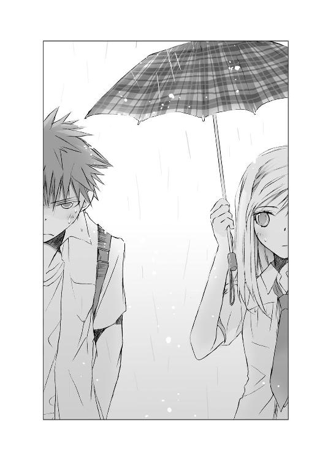
その顔を見たら、なんだかあたたかな甘い気持ちになった。
夕雨に会うのは、本当はあまり気が進まない。でも、そのおかげで是光とまた話せるようになった。
だから今は、あれこれ考えないで、是光の力になろう。夕雨とも仲良くしよう。
（こういうとき、傘は男が持つんだよ）
心の中でこっそりつぶやいて、微笑んだ。
そこまで気が回らないほど緊張して固まっている男の子が、胸がきゅんとするほど可愛く思えたから......。
お土産に、赤やオレンジ色の綺麗なゼリーを買って、アパートに辿り着く。
是光がこわばった顔で、部屋のドアを叩いた。
「夕雨、俺だ」
普段の是光からは想像できないような、気遣いとためらいのこもった小さな、低い声だった。
「メールにも書いたけど、昨日は俺も悪かった。直接話したいんだ。夕雨に会わせたいやつもいるし......。開けてくれないか」
ドアの向こうは静まり返っている。是光と一緒に息をのんで待っていると、
「ニャア......」
猫の鳴き声がして、鍵をはずす気配がした。
帆夏の心臓が、ドキンと高鳴る。
（奏井さんって、どんな人......？ 葵の上より美人？）
喉が急に渇いた。
ドアがゆっくりと開く。
まず足元から白い猫が顔を出し、賢そうな青い目で帆夏たちを見上げた。
次に五センチほどの隙間から、頭から水色の毛布をかぶった少女の姿が見えた。
驚くほど白い肌。
透明な瞳。
淋しげな唇。
毛布の内側からこぼれ落ちる細い髪。
そしてなによりも、風にも倒れてしまいそうな儚げな雰囲気。
そうしたものが一瞬にして、帆夏の目に飛び込んでくる。
隣で是光が、安堵の息を漏らす。
「よかった、開けてくれて。夕雨、こいつは俺のクラスメイトの式部っていって――」
はじめまして、と、帆夏が精一杯明るい顔で挨拶しようとしたとき、
「！」
夕雨の顔が、いきなり恐怖に引きつった。白い頰が青ざめ、目に怯えがいっぱいに浮かぶ。体を包む毛布が、波が揺れるように震え出す。
夕雨の変化に是光が驚いて、
「どうした」
と、ドアにはりつく。
けど、夕雨の眼差しは是光ではなく、その後ろにいる帆夏に向けられていた。
帆夏と――帆夏が持っている、濡れた傘に――。
「いやっ！」
わななく唇から、恐怖にあふれた拒絶の声が放たれる。
両手でノブを引き、ドアを閉じてしまう。
ばたんっ！ という音と、鍵がかかる音。そして、泣き叫ぶ夕雨の声。
「いや......っ！ 学校はいやっ！ 傘がないから、もう外へ出られないっ。学校へは行けないっっ。なにもわたしを隠してくれない！ 食べられちゃう！ 食べられちゃう！」
こんな、断ち切れそうな痛々しい叫びを、帆夏はリアルではじめて聞いた。
混乱すると同時に、夕雨が不登校に至ったいきさつを思い出し、ハッとした。
もしかしたら――ううん、きっとそうだ。
「夕雨！ なにがあった！ 開けろ！ 夕雨！」
是光がドアを叩き、ノブをがちゃがちゃ回す。今にもドアを壊しかねないほど必死だ。
帆夏は是光の手を後ろからつかんだ。
「赤城、今日は帰ろう」
「なに言ってんだ、夕雨がおかしくなってんのに」
是光が目をぎらつかせる。
「それ、多分、あたしのせいだから」
「はぁ？」
是光の顔に困惑が広がる。
「ちゃんと説明するから。今は離れたほうがいい。そのほうが奏井さんも落ち着くから。ねっ」
冷たくこわばった是光の手を、ぎゅっと握りながら、強い口調と視線で言う。
是光は納得がいかなそうに歯を食いしばっていたが、急にびくっとし、鋭い視線を斜め上に向けたあと――。
「............夕雨、またあとで来る」
ドアに頭を押しつけ、うなだれてつぶやいた。
◇ ◇ ◇
――式部さんの言うとおりにしたほうがいい。
と、ヒカルは言った。
痛みをこらえているような、切ない目で。
夕雨のことで知らんぷりを決め込んでいるくせに、何故今さらそんな思わせぶりな目をするんだ。もうおまえのことなんてアテにしちゃいない、と割り切れない気持ちでいっぱいになりながら、帆夏の訴えとヒカルのその目に引き止められて、是光は体が裂かれる思いで、夕雨のアパートを離れたのだった。
近くの公園へ、帆夏と移動する。
煉瓦で囲んだ花壇や池があり、木々が生い茂る広々とした敷地に、屋根のついたステージがあり、そこで雨をしのぎながら帆夏の話を聞く。
「奏井さんが学校へ来なくなったのが、去年の梅雨頃......っていうのは知ってる？」
自分もショックを受けているだろうに、是光を気遣うような眼差しで帆夏が言う。
「ああ」
「その頃ね、奏井さんはいじめを受けていたの。ものを隠されたり、無視されたり、奏井さんに聞こえるようにひどいことを言われたり......。奏井さんをいじめていたのは、全員、女子だった」
「なんで、女子なんだ」
わからないかな......というように、帆夏が苦い笑みを浮かべる。
「高等部にすごく人気のある男の先輩がいて、その人と奏井さんが相合い傘で歩いているのを見られたから。その先輩のおうちは学園でもトップクラスの資産家で、奏井さんは中等部から外部入学した普通の家の子、だったでしょう。だから奏井さんのほうから玉の輿を狙って近づいたって、非難されたの」
「なんだそりゃ！ 雨の日に同じ傘で帰ったくらいで悪口言われんのかよ。つか、中等部入学で、家がフツーってののどこが悪いんだ」
「......うん、おかしいよね。けど......葵の上のときに話したかもしれないけど、うちの学校では、どの時点で入学したかっていうのは、とても重要なの。それで階級が決まっちゃうっていうか......それを超えてつきあったりするのは、許されない感じっていうか......」
――附属幼稚園から学園にいる人たちは、〝貴族〟って呼ばれてるんだよ。
葵のことで相談に乗ってもらったとき、帆夏が言った言葉を、是光は思い出していた。
美術部の女子が葵に抱いていた暗い思いを吐き出したときのことも。
――〝貴族〟だからって、あたしたちのこと、バカにしてたんでしょう！
家がどうとか、本当にくだらない。
そんなこと本人と全然関係ない。
けど、そうした階級意識が、あの学園に根付いていることも、無視できない。
夕雨は、ルールを破った。
平民の身で、〝貴族〟の男に言い寄った女として、迫害を受けたのだ。
実際に言い寄ったのは夕雨からだったのか、男からだったのか――あの内気な夕雨に、玉の輿狙いで男に擦り寄るなんて真似ができるわけがないと、是光は思う。
けど、そんなこと、学園の生徒たちにとってはどうでもいいのだ。夕雨が階級の違う男と相合い傘で歩いていたという事実だけで。夕雨より階級が高い女たちはもちろん、同じ階級の女たちにも、抜け駆けをした夕雨は許し難い存在になった。
――学校へ行ったら、また、みんなに冷たい目で見られるもの。わたしに聞こえるように、ひどいことを言われるもの。
――学校では、わたしはひとりぼっちなんだもの......っ。
毛布の中で体を小さく丸めて震えながら、訴えていた夕雨。
おとなしい夕雨には、知らない人たちから敵意のこもった視線を向けられ、聞こえよがしの嫌味を言われることも、体中に針を刺されるように耐え難いことだったのだ。
是光の胸も、灼けつくようだった。
過去の夕雨を助けに行ってやれないことが辛くて悔しくて、両手をぎゅっと握りしめる。
「男子は、女子が奏井さんをいじめるのを、関わりにならないように黙って見ていただけだったと思う」
帆夏が暗い声でつぶやく。
そんな中、ある事件が起きた。
朝から強い雨が降っていた日。夕雨の傘がなくなってしまったのだ。
泣きそうな顔で傘置き場の前に立ちつくす夕雨に、夕雨を特にひどくいじめていた女子たちは、くすくす笑いながら、
『あー、傘、なくなっちゃったんだー。朝はあったのにねー』
『男子に相合い傘してもらったらー』
『そうそう、誰かさんは、男子に媚び売るの得意だしー』
『けど、頭条さんは、もう玉の輿狙いの庶民の相手なんかしないんじゃなーい』
と、残酷な言葉を浴びせたらしい。
夕雨は青ざめたまま一言も返すことができず、目に涙をいっぱいため、がたがた震えながら、校舎を出たという。
雨にぐっしょり濡れながら、消え入りそうな儚い眼差しで、とぼとぼ歩いてゆく夕雨を、多くの生徒が見た。
が、誰も、夕雨に傘を差し掛けることをしなかった。
翌日、夕雨は学校を休んだ。
「そして――この日もうひとつ、学園中を騒がす事件が起こったの」
帆夏の声に、緊張が走る。
是光も息をひそめた。
ステージも公園の木々も雲におおわれて暗くなり、雨もますます激しくなってゆく。
「怨霊が......現れたの」
（怨霊？）
そんなもの、この世に存在するのか？ けど、是光の隣では幽霊になったヒカルが、外灯の灯りの中、ひっそりとたたずんでいる。
なによりも、帆夏の表情は真剣だった。
「傘置き場で奏井さんを囲んで笑った女の子たちの傘が、なくなっちゃったんだよ。それだけじゃなくて、その傘が、化学室のカーテンレールに首つり死体みたいにつり下げられていて......そこから真っ黒な水がしたたり落ちていたんだって」
頭の中に情景が浮かぶ。
校内の化学室。
窓を濡らす雨。
つり下げられた傘と、したたり落ちる黒い水。
確かにショッキングな光景ではある。
だが。
是光は顔をしかめた。
「そんだけで怨霊とか、大げさすぎねーか」
「そこで終わっていればね」
「続きがあるのか？」
帆夏が硬い表情でうなずく。そうして言いにくそうに。
「奏井さんをね、見たって人がいるんだ。傘を抱きしめて雨の中を走ってたって。手とか足とか汚れてて、髪も濡れてばらばらに乱れていて、なんか目つきが......普通じゃなくて、怖かったって......」
「夕雨は、学校を休んでたんだろ」
「うん。だから、奏井さんの生き霊が復讐をしたって噂になって......奏井さんは、ますます学校に来れなくなっちゃったんだよ」
是光は、やはり釈然としなかった。
夕雨の生き霊が、自分をいじめた女子の傘を汚して、復讐しただって？
そんな馬鹿な話があるかと思う。
第一、あの夕雨に、復讐をするほどの気概があるだろうか？ それができる根性の持ち主なら、引きこもりになどならず、とっくに新しい生活をはじめているのではないか。
実際、夕雨は、いじめた相手をいまだに恐れるばかりで、恨んでいるようには見えない。
むしろ、『食べられちゃう！』と泣き叫ぶ声には、夕雨自身が、目に見えない怨霊に対してぬぐいがたい恐怖を抱いているように感じられる。
（どうなってるんだ）
奥歯をぎりっと嚙みしめる。
ひとつ、確かなのは、夕雨が雨を恐れ、引きこもりになった原因が、集団による静かな暴力にあったということ。
誰も、夕雨を守ってやらなかったということ。
ヒカルはどんな顔でこの話を聞いているのか。またあんなすべてを諦めているような表情を見たら怒りが抑えられなくなりそうで、そちらを見そうになるのをぐっとこらえる。
そうすると、逆に喉元にいっそう怒りが込み上げてきて、腹の奥が震えた。
息を詰め、帆夏の言葉に耳をこらす。
「奏井さんが、あんなに怖がってドアを閉めちゃったのは、事件のことを思い出したからじゃないかと思う」
雨。
傘。
学園の制服を着た女子。
（なんてこった）
どれも夕雨には、恐怖をかきたてられるものだったのだ。
「赤城......」
険しい目でこぶしを握りしめている是光に、帆夏が心配そうに声をかけた。
「奏井さんのこと、あたしもどうしたらいいのか考えてみるから、あまり無茶をしないでね。それでなくても、あんた、朝の宮や教頭に目をつけられてるんだから」
「......わかってる」
苦い息を吐き出し、低い声で答える。
「つきあってくれて、ありがとな。また式部を巻き込んで反省してる。もう式部には迷惑かけねーようにするから」
「迷惑なんて思ってないよっ。あんたの中のあたしの評価って低すぎ。あたしのこと、もっと頼っていいんだからねっ」
帆夏が是光を睨む。
夕雨にはない、強さにあふれた眼差しだった。
「ありがとう」
是光は頭を下げた。
「そのときは、また相談する」
帆夏はもどかしそうな、疑うような表情で是光を見ていた。
雨は降り止む気配がない。
「式部、悪いけど先に帰ってくれ」
「赤城は......どうするの」
「夕雨の様子を見てから帰る。無茶はしねーから」
帆夏は硬い表情で黙っていたが、ぼそっと言った。
「あたしが一緒だと......また奏井さんを怖がらせちゃうね。だ、だから、アパートの前まで送る。あんた傘持ってないし。そこであんたが戻るの、待ってる」
「いや、いい。傘は途中のコンビニで買う」
帆夏は眉をつり上げたまま、是光を見つめていた。そうして、濡れた折りたたみ傘の柄を、是光の手に押しつけた。
「これ、使って」
「それじゃ、おまえが」
「携帯で家に電話して迎えに来てもらう。じゃなきゃ、コンビニでビニ傘でもカッパでも買うから」
「って、おまえの傘なんだから、おまえが使えよ」
戻した傘を、帆夏が倍くらい強い力で押し返す。
「ダメっ、あんたはどうせ傘なんて買わないもんっ。これはあんたが使うの！ じゃなきゃ、あたしもついてくからね。奏井さんのアパートまでじゃなくて、あんたの家の前まで、勝手にあんたに傘差してついてくから」
帆夏は少しムキになりすぎのようだった。
そんなに今の俺は、危なっかしい顔をしているのだろうか。
是光が弱ってしまったとき――。
帆夏と是光の手の上に、綺麗な白い手が、ふわりと重なった。
雨音の中に、ふくよかな澄んだ声が流れる。
「ありがとう。お守りに借りてゆくよ」
こわばった心をなごませるような、やわらかな優しい笑みを浮かべてささやいたのは、ヒカルだった。
「ね、是光」
外灯の光を受け、金色に透きとおった髪は、少しもしめっておらず、白い顔の周りで、そよそよとそよいでいる。唇をしとやかにほころばせ、ふんわりと微笑んだまま、大人びた眼差しで是光のほうを見て、言う。
（なんだよ、急に割り込んできやがって）
是光はヒカルから、ぷいっと視線をそらし、
「じゃ......借りるな。......お守りに」
ぎこちなく言った。
ヒカルの忠告に従ったわけじゃない。そんなんじゃなくて――。
帆夏の手からも、表情からも、ホッとしたように力が抜ける。一瞬、泣き笑いのような顔をしたあと、すぐ生き生きした眼差しになった。
「うんっ。絶対ききめあるよ」
照れくさそうに少し頰を染めて明るく言い放ち、是光の胸をとん......っと押しやる。
行っておいで、というように。
心が、すっと軽くなった。
「さんきゅ......な」
是光も恥ずかしそうに小さくささやいて、あざやかな赤紫の傘を開いた。
手を振る帆夏に見送られ、冷たい雨の中、夕雨のアパートへ戻る。
アパートの窓は、電気がついておらず真っ暗だった。
胸を擦る不安を感じながら、ドアの前までゆき、静かにドアを叩き、
「夕雨......」
と掠れた声で呼びかける。
「いるんだろ、夕雨」
ドアの向こうでかすかな物音がし、もどかしさと切なさで、胸が破裂しそうになる。
「今日は、いきなり式部を連れてきて、悪かったな。けど、式部はすげーいいやつで、夕雨をいじめていた連中とは違うから」
またドア越しに、細い息づかいが伝わってくる。
「夕雨が学校へ行けるようになったら、きっと式部は夕雨の力になってくれる」
降り止まない雨の音が、是光の声を、ぽつぽつと断ち切る。
なんと言ってやれば、夕雨の恐れをぬぐいされるのだろう。夕雨のために、自分はなにができるのだろう。
ヒカルは今も、是光のそばにいる。けど、意地でもそちらは見たくなかったし、助けを求めたくなかった。
そのとき、ドアの向こうから弱々しい声がした。
「......傘がなくちゃ......学校へ、行けない」
声は、ドアのすぐ近くで聞こえる。そこに夕雨がいるのだ。是光の鼓動が高まり、痛いほど耳をすます。
「あの傘が......お守り......だったの。わたしの体を......隠して、くれたの。なのに......なくなっちゃった......」
声に、すすり泣きが混じる。夕雨が泣いている。
「何度も何度も......同じ夢を、見るのよ......。波がざわざわと揺れて、高く盛り上がるの。真っ黒な魚が大きな口を開けて、傘を飲み込んでしまうのよ。つかもうとしても、つかめない......。すり抜けてゆく。わたしも、魚の口に吸い込まれてゆく。傘がないから、見つかっちゃう......っ。逃げられないっ」
どうしたら夕雨の涙を止められる？
夕雨が怯えることなく、ドアを開くことができる？
ヒカルは言葉をくれない。
さっきは、余計なお節介をしたくせに、今は是光の横に、黙って立っている。
ヒカルの大事な女なのに！ 自分は幽霊だからなにもできないと言う。見えているくせに、聞こえているくせに、なにもしようとしない！ 唇を結び、眉を少し下げ、黙っている。
そんなやつに、もう頼ったりしない！
是光はドアに頭を押しつけ、叫んだ。
「泣くな！ 夕雨！ 俺が――おまえの傘を、取り戻してやる！」
一年前になくなった傘が、はたして見つかるのか？
（......普通に考えたら、とっくに捨てられてるよなぁ）
翌日。是光は、夕雨の教室を訪ねてみた。
同じ一学年でも、生徒の数が多いため、是光たちの教室とはだいぶ離れていて、二階にある。
廊下の壁際に傘立てがあり、二、三本ほど置き傘がしてあった。窓の外はよく晴れていて、透明な日射しが目にあたってまぶしい。
夕雨が傘をなくした日は、朝から一日中雨が降っていたというから、傘立てにはぎっしり傘が差してあったろう。
その中から、夕雨の傘だけがなくなってしまった。
夕雨の傘を隠したのは、夕雨を特にいじめていたグループなのか？
けど、そのグループの女の子たちの傘も、翌日持ち去られ、化学室につり下げられていたという。
――怨霊が......現れたの。
――奏井さんの生き霊が、復讐をしたって。
そんな馬鹿げた話、是光は信じていない。
では誰が、化学室に傘をつり下げたのか？
夕雨の傘を持っていったのも、同じ人間なのか？ それとも別の......。
窓を開けると、風が勢いよく吹き込んできた。広大な敷地に植えられた草木も、花々も、前日の雨に濡れた葉を輝かせている。学園の生徒たちの朗らかな声が風に乗って聞こえてくる。
のどかで平和な風景。
（......こんなお綺麗で健全そうな学校にも、いじめってあるんだな）
苦い気持ちになる。
中学のとき、よく他校のヤンキーに待ち伏せされ、喧嘩をふっかけられた。
大抵相手は複数で、こっちは一人で。逃げるのは嫌だし、集団で武器を持って向かってくるような卑怯な連中に屈するのも悔しかったから、必死で戦った。
あんなこと、高校に入ったらなくなると思っていたのに......。
もっとどろどろしたものが、一見平和な学園の裏で渦巻いている。それは、わかりやすい不良生徒に、わかりやすく喧嘩を売られて、その場でケリをつけるといったものと対極にあって、表面に見えにくい分、気味が悪い。
もしかしたら、綺麗で健全に見えるものほど、中身はそうではないのかもしれない。
中身が黒く汚れているから、綺麗なもので隠さないとならないのではないか。
がらがらの傘立てを、鋭い目で見おろしていたとき。
「はぅ！ あ、赤城くん......っ」
後ろで、ひっくり返ったような声がした。
おさげの級長が、眼鏡の奥の目をまん丸にして立っている。
「こ、こっこっ、ここで、なにをしてるの、かな」
「なにって、おまえこそ、なにのけぞってんだ」
「わ、わわわわたしは、次の代表会議のことで、八組の級長さんにお話があって、たまたま通りかかっただけで。そしたら赤城くんが、よそのクラスの傘立てを睨んでて......爆弾を仕掛けるつもりなら、そこはよしたほうがいいと思うのっ。ううん、他のところもだけど」
じりじりと後ずさりながら、級長としてこれだけは忠告せねばというように、必死に訴える。
（爆弾って......俺はこいつの目にどう映ってるんだ？）
怒る気力も失せ、肩を落とす。
そのとき、みちるのスカートのポケットから、童謡の『犬のおまわりさん』のメロディが流れはじめた。
「はわっ」
みちるが慌てて携帯を出し、画面にメールを表示させる。
どういう選曲だ......と、あきれて見ていた是光だが、みちるの顔がこわばるのを見て、ハッとした。
少し前も、似たようなことがあった。
帆夏の携帯に、ヒカルが殺されたというチェーンメールが送られてきて。
「おいっ、どうした」
「えっと、なんか変なメールが」
みちるがぷるぷると手を震わせ、画面を是光に見せる。
是光は頭にカッと血がのぼった。
『ヒカルの君をめぐる女たち。第一回〝奏井夕雨〟』
「貸せっ」
みちるから携帯を取り上げ、内容を確認する。
『不登校中の怨霊憑き。ヒカルの君を殺害したのは奏井夕雨の生き霊？』
そんな脳味噌が煮えくり返るような言葉が並んでいる。
（くそぉっ！ 誰がこんなメールを！ 絶対許さねぇっ！）
怯えきった顔のみちるに携帯を突き返し、是光は全身から暗いオーラを立ち上らせて、歩き出した。
放置されたみちるが、真っ青な顔で右往左往する。
「どどどどど、どうしよう。なんかすごい怒ってる～～～～。体に爆弾巻きつけて特攻とかしそうだよぉっ。うちのクラスの生徒がそんな事件を起こしたら、級長としてわたしにも責任が......っ。あわわわ、そ、そうだ！ ほのちゃんに知らせよう。ほのちゃん、キックボクシングのジムに通ってて強いし。前に赤城くんのこと、ぼこったことあるし。ほのちゃぁぁぁぁん、赤城くんが大変だよ～～～～」
叫びながら、自分の教室に駆け戻るのだった。
そして是光は――。
「夕雨は怨霊憑きなんかじゃねぇ！ 俺が証明してやる！」
頰が引きつり、眉もいつも以上に鋭角的につり上がっている。是光が進む二メートル先から、生徒が怯えて逃げてゆく。
「っっ、どこのどいつが、なんの目的で、あんなくだらねーメールをばらまいてんだ」
口から怒りの言葉が飛び出すと、
「目的なんてないのかもしれない。ただ、噂に振り回される人たちを見て、楽しんでいるだけなのかも」
隣で、暗い声がした。
横目でちらりと見ると、ヒカルが憂い顔で前を見つめていた。
すぐに、ぷいっと視線を戻し、唇を嚙む。
（おまえの言葉に返事なんかするものか。そっちが幽霊のふりをするなら、俺も幽霊扱いしてやる）
もう意地だった。
前を睨みつけたまま、三年生の教室を目指す。
夕雨が言い寄ったと噂される頭条俊吾に会うためだ。
二学年も上だと、廊下を歩いている生徒たちは、だいぶ大人っぽく見えた。
「おい、あれ例の新入生だろ」
「なんで三年生の廊下にいるんだ」
「悪そうな顔してるなー。皇子のストーカーだったんだって。あんなヤンキーが、いきがって歩いてるなんて、うちの学校もレベル下がったよな」
「ヒカルの君を殺したって、本当かしら」
異質なものに対する冷たい視線が、あちこちから飛んでくる。
それをはねのけるように、是光は顎をぐいっと上げた。
「頭条って人に、会いたいんすけど」
教室の入り口で尋ねると、中がざわめいた。
困ったように目と目を見交わしたり、「先生を呼んできたほうが......」というささやきが聞こえたり。
そのとき、奥から一人の男子生徒が、みんなの注目を浴びて、是光のほうへ近づいてきた。
華のある男だった。
長身で背筋が伸び、歩きかたにも気品がある。
しっかりと櫛の通った黒髪。
男らしい顎のライン。彫りの深い目鼻立ち。
制服の着こなしや、ちょっとした仕草や尊大な目つきに、隠しようのない上流の雰囲気をただよわせている。
瘡蓋をはがしたばかりの皮膚を爪で引っ搔かれるような微妙な不快感に、是光は顔をしかめた。
「俺が頭条だが」
低音で深みのあるよく通る声も、嫌味に感じられる。
『頭条先輩は、ヒカルの君と女子の人気を二分してたんだよ』
と帆夏は言っていた。
けど、ヒカルとはタイプが違う。
ヒカルの持つやわらかさや透明感や、癒されるような空気は、目の前の男にはない。
より男性的というか、二歳も上なのだから当たり前だが、少年ではなく大人の男に見える。
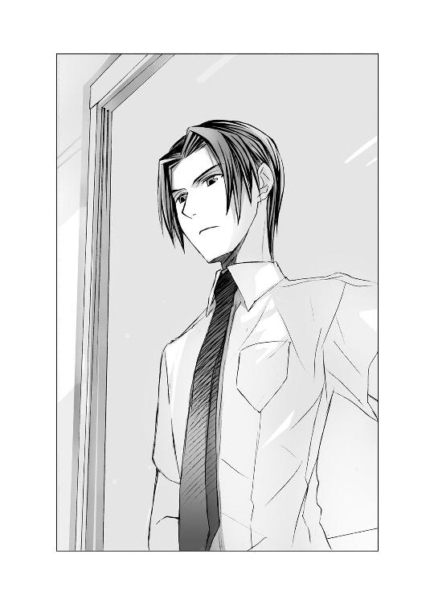
廊下へ移動し、話を切り出す。
「奏井夕雨のことで、聞きたいことがあって」
頭条が眉をひそめる。
「その件なら、俺に話すことはなにもないが」
「夕雨が不登校になったのは、あんたと相合い傘で歩いてたのがきっかけだって、聞いてる」
頭条が冷たい視線を、是光に向ける。
「ああ、そんなこともあったな。だが、たった一度、雨の日にひとつの傘で十分程度歩いただけの女子が、個人的な事情で不登校になったことを責められても困る」
「なんだと......」
是光のこめかみが引きつる。
なにを言ってるんだ、このすかした野郎は。個人の事情で不登校になっただと？ てめぇはまったく責任がないと言うのか。
「あれは一部の女子が勝手に暴走しただけだ。俺との噂も、彼女が学校に来なくなってから、すぐ沈静化した。なのにいまだに登校しないというのは、個人の事情以外のなにものでもないと思うが」
「登校できなくなったのは、夕雨をいじめていた女どもの傘がつり下げられて、怨霊呼ばわりされたからだろーが」
「それこそ、俺となんの関係がある」
とりつくしまもないほど冷然と、頭条が告げる。
是光は顔がさらにこわばり、息が乱れるのを感じた。
頭条はなおも明晰に、事務的に、
「俺が奏井夕雨をもてあそんで捨てたとでも？ 言っておくが、俺は自分がつきあうべき女性を心得ている。それなりの地位と財産のある家に生まれた人間なら、そういった自覚は、幼い頃から自然と身につくものだ。中等部から入学してきた、中小企業の課長クラスの家の娘では、親族も納得しない。たとえつきあっても、育った環境が違いすぎて、お互い気疲れするだけだろう。そんな相手と、俺が真剣に交際することなぞありえないと、彼女に嫉妬した女子たちも、何故わからなかったのだろうな」
わずらわしそうに溜息をついてみせる頭条の顔を、是光は殴っていた。
頭条の足がよろけ、背中が壁にあたる。そのまま襟元を締め上げ、叫ぶ。
「ざけんなっっっ！ 夕雨は今でも、学園の制服を着た女を見ただけで、いじめられたことを思い出して、怯えてんだぞ！ 雨が降ってると、傘をなくしたから外へ出られないって、毛布かぶって震えてんだぞ！ おまえにとっては、アホな女どもが暴走しただけの、過去のどうでもいい事件でも、夕雨は今もまだ、苦しんでんだ！ この一年、ずっと薄暗い部屋に引きこもって苦しんできたんだっっっ！ それを、関係ないとか言うなぁ！」
毛布で顔や体を隠して泣きながら、か細い声で『学校へ行きたくない』と訴えていた夕雨。
学校へ行くくらいなら、飢え死にしたほうがいいと震えていた。
傘を差した帆夏を見ただけで、あんなに青ざめて、パニックに陥って――。
なのに、関係ないだと！
怒りで体が爆発しそうだった。
つきあう女を心得てるというなら、どうして相合い傘なんかしたんだ！
夕雨から誘ったのか、頭条が気まぐれを起こしたのかは、知らない。
どっちでもいい。
（けど、どうして、おまえは断らなかったんだ！ そんなうかれたことをしたんだ！）
育った環境が違いすぎるとか、真剣に交際する相手じゃないとか言うなら、何故、軽軽しく関わったんだ！ 責任をとれないなら、何故！
罪の意識もなく夕雨の日常をぶち壊して、夕雨を守りもしなかった。
そんなやつ、夕雨の名前を口にするのも許せない！
頭条を締めつける是光の手に力がこもる。
頭条は苦しそうに顔をゆがめている。
人が集まってきて、教師もやってくる。休み時間の終了を知らせるチャイムが、緊迫した状況に不似合いな軽やかな音色を奏でる。
頭条が是光の手を、押しのけ、
「なんでもありません」
硬い声で教師に言った。
教師が困っている目で、頭条と是光を見比べる。
頭条が髪と服の乱れを素早く整え、
「テストがはじまる。きみも早く自分の教室に戻れ」
と言って歩き出すと、教師もつっかえながら、「は、早く行きなさい」と、告げた。
是光はまだ頭条を睨んでいたが、かかとを回し、駆け出した。
遅れて教室へ飛び込んできた是光を、帆夏がホッとしたように見る。
が、是光があまり険しい顔をしていたからだろう。またすぐ、心配そうに顔をこわばらせる。そうして、テストの間も、ちらちらと是光のほうを見ていた。
是光は、頭条への怒りを叩きつけるように、答案用紙を埋めていった。数学の図形が頭条の顔に見えて、そのたび目の裏が熱くなり、呻き声が口から漏れた。
テストが終わり休み時間になってもまだ、体の中をめぐる熱が引かず、
「赤城......っ」
呼び止めようとする帆夏に、
「っっ、大丈夫だ」
低い声で告げ、教室の後ろの戸をがらりと開け、廊下へ出た。
向かった先はトイレで、洗面台でじゃぶじゃぶと水滴を飛び散らせて、何度も顔を洗う。
トイレへ来た他の生徒たちは、赤髪のヤンキーが鬼のような顔つきで洗顔をしているのを見て、用も足さずに慌てて出てゆく。
臓腑が、ぐちゃぐちゃとかき回されている感覚が収まらない。自分自身にも、どうしようもなく腹が立っていた。
『学校へ行こう。おまえになんか言うやつがいたら、俺がぶん殴ってやる』
是光がそう言ったとき、夕雨はただ怯えきった弱々しい目で是光を見ていた。
ぶん殴ってすむほど、単純なことではなかった。
それがわかって――自分の浅はかさが悔やまれて、もし是光が頭条を殴ったあの場所に夕雨がいたら、きっとまた怯えさせてしまっただろうと想像できて、やりきれなくて――。
頰に水を叩き込んでいたのは、五分ほどだったろうか。
ようやく頭が冷え、同時に体もぐったりして、喉もからからに渇いていることに気づいた。鏡に映っているのは、ぐしゃぐしゃの前髪から水をしたたらせた、凶悪な面構えの野郎一人だ。
けど、鏡には映らなくても、どうせ涼しい顔で後ろに立っているのだ。
「気にすることはないよ」
背中で、ふくよかな声がした。
是光は洗面台の端に両手をついたまま、鏡を睨んでいた。死んでも振り返るつもりはなかった。
「......俊吾さんは、いっぺん殴られたほうがよかったんだ」
なのに声は、まるで是光をいたわるような響きをともなって、耳に入ってくる。
「頭条家の、待望の跡取り息子の俊吾さんを殴れる人なんて、この学校にはいないからね」
（あいつと、知り合いだったのか......？）
振り返りそうになるのを、洗面台の端を強くつかんで、こらえる。
（くそっ、誰がおまえの言葉なんか聞くもんか。急に親切そうな声を出してもダメだからな！）
歯を食いしばり念じながら、ヒカルと頭条の関係が気になってたまらない。
そんな是光の葛藤も知らぬげに、ヒカルが綺麗な声で、さらさらと語る。
「俊吾さんの家――頭条家は、昔から帝門家の右腕的な存在でね。帝門グループって聞いたことがあるだろう。銀行とかも経営してるあの一大グループ。その会長が、帝門家の当主であるぼくの父。けど、帝門グループを動かしているのは、お飾りの帝門ではなく実質的な経営を任されている頭条だって言う人もいる。つまり俊吾さんは、そういう家に生まれ育った人で、愛人の子であるぼくとは......微妙な関係......かな」
つまりオーナー一族の息子と、経営者一族の息子ってことか？ ヒカルが皇子なら、頭条は大臣の息子か？
聞くつもりはないが、勝手に聞こえてくるものは仕方がない。耳をふさいでも、黙れと怒鳴っても、ヒカルの存在を認めていることになる......。
「それと、俊吾さんは葵さんのはとこでもある」
（葵の！）
「ついでに言うと、俊吾さんのお父さんの三番目のお姉さんの旦那さんの妹の結婚相手の従兄が、朝ちゃんのお父さんの従姉のはとこの甥で」
「って、親戚関係入りくみすぎだ、わけわかんねー」
しまった！ 口をきかないはずだったのに、勝手に声が出てしまった。慌てて唇を結び、洗面台を睨みつけたとき。
「そうそう、あちらは親戚関係がややこしいんですね。自分が優しく解説してあげましょうか」
いきなり、ヒカルではない声がした。
しかも、トイレの個室の中から！
『修理中』と張り紙がしてあるドアが、ぎーっと音を立てて開いて、胸の大きい小柄な女子が現れたのを見て、是光は仰天した。
「な！ おま――ここ、男子トイレだぞ！」
「それがなにか？」
報道部の近江ひいなは、右手にトイレブラシを持ってにっこりし、是光の体に身を寄せ、いつもの早口でまくしたててきた。
「トイレで便器を磨きながら情報収集するのが、自分の趣味ですから。トイレの中って、気持ちが解放されるってゆーか、自己がさらけ出されるってゆーか、つい内緒のことまでしゃべっちゃったりするじゃないですか。たまーにリンチとかかつあげとかもあったりして、スリリングですよ～！ 赤城氏もいっぺん自分と一緒にトイレにこもってみませんか？ あらたな世界が開けますよ」
「開けなくていいっ。トイレブラシ持ってくっつくな。出てけ」
押し戻そうとするが、逆にぷるぷるした胸や太ももを、くっつけて来ようとする。
「そんな冷たいこと言っちゃって、いいんですかぁ？ 自分はトイレ掃除以外にも役に立つ女ですよ。赤城氏、独り言とか言っちゃってテンパってるみたいだし、今、赤城氏が知りたがってること、多分自分なら教えてあげられますよ」
「な、なんだ、それ」
ひいなが顔を上げ、大きな目で意味ありげに見つめてくる。そうすると、誘惑的な小悪魔が、いたずらな少年に変わったように見えて、ドキッとした。
「帝門家の中で、ヒカルの君がどういう立場にいたかということ。ヒカルの君が亡くなって一番得をするのは誰か――ということ」
またドキッとし、ヒカルのほうを見そうになって、いやいや俺には関係ないと突っぱねる。
「必要ねぇ！ つか、おまえは得体が知れなさすぎる」
「えーっ、その発言は自分的にハートブレイクです。こんなにオープンに振る舞っているのに、自分のどこが赤城氏のお気に召さないんですかぁ」
「普通の女は、俺とガチで目をあわせたりしねぇ。俺が通りかかると、こそこそ逃げてく。なのに、おまえは近づいてくる。俺にびびりもしねぇ。不自然すぎだ。てか離れろ」
ひいなが、すっと是光から身を引いて、哀れむような眼差しになる。
「それ......淋しい認識ですね。自分に近づいてくる女は、全員なにかしら企んでるなんて」
「う......」
急に真面目な顔と、ゆっくりした口調で語りかけられて、是光は声をつまらせた。
（お、俺は、間違ってねーぞ。その......はずだ）
なのにひいなにじっと見つめられると、気持ちが微妙にゆらめく。
「赤城氏に異性として好意を持っているから近づいた......とは考えられませんか」
（いや、それはさすがにねーだろう）
追いつめられた気持ちで、じりじり後退する。
「俺、教室戻るから。おまえも便器を磨きたけりゃ、女子トイレの便器にしとけ、そしたら、朝礼で表彰されるかもしれねーぞ」
「逃げないでくださいっ」
ひいなが、また抱きついてくる。
「って、おい」
汗ばんでいてあたたかい、やわらかな体を押しつけられて、豊かな胸のふくらみが是光の胸の下のほうにあたっているのも、半袖の薄いシャツ越しにしっかりと感じられて、パニックに陥りかけた。
横からヒカルが、しらっとした声で、
「今のうちに聞いておくけど、ぼくはどの段階で背中を向ければいい？ キスは見ててもいい？」
と、尋ねる。
「どの段階も、よくねーよ！」
無視するはずが、また叫んでしまった。
「大丈夫、全部よくしてあげますから。自分に任せてください」
「って、首に顔うずめるなー、くすぐってー！」
「ねぇ、赤城氏。奏井夕雨は、頭条センパイにとって、どうでもいい女なんかじゃなかったんですよ」
首筋でささやかれた言葉に、是光の抵抗がゆるむ。
「少なくとも、ヒカルの君が奏井夕雨のアパートに通っていると知ってからは......だって、頭条センパイにとってヒカルの君は......」
ひいなの声に、引き込まれそうになったとき。
「うっわぁぁぁっ！」
トイレの入り口で、悲鳴が上がった。
「赤城が、男子トイレに女子を連れ込んでる～～～～！」
（なにぃ！）
是光がひいなを突き放し、血相を変えてトイレの外に飛び出したときには、廊下全体にどよめきが広がっていた。
「ヤンキーの赤城が、トイレでやりまくりだって！」
「嫌がる女子を、無理矢理連れ込んで、押し倒したんだって！」
愕然とする是光の横から、ひいながひょっこり顔を出し、
「うわぁ、今日から公認カップルですね。レイプからはじまる恋なんてレディコミみたいです～」
と、そらぞらしく笑った。
◇ ◇ ◇
「おめでとう、赤城くん」
高等部の生徒会長で、朝の宮とも呼ばれる、二年生の斎賀朝衣は、侮蔑と嫌悪と嘲りをブレンドして氷点直下で凍らせた瞳で是光を見つめて、言った。
「きみの下衆な行為は、伝統ある平安学園の暗黒史として、未来永劫刻まれるでしょう」
本日のテストがすべて終了した、放課後。
指導室の硬い椅子に尻を置き憮然とする是光の前に、朝衣がいる。
（なんで教師じゃなく、こいつに、事情聴取とかされなきゃならねーんだ。生徒会長ってのは、そんなに偉いのかよ）
「朝ちゃんは先生たちに、信頼されているから。それにたまに権力を行使して、問題のある教師を解雇するよう手を回したり、素行の悪い生徒をじわじわ退学に追い込んだりもするけれど、基本的に公正で有能な人だから、そんな疑わしそうな憎々しげな顔で朝ちゃんを睨まないであげてくれないかな」
ヒカルが是光の背中越しに、〝お願い〟する。
が、生徒の分際で教師を解雇させたり、一般生徒を退学に追い込んだりするような女の前で、リラックスできるわけがない。
いくら従姉だからって、ヒカルは前からこいつに甘すぎではないか？ もちろん、ヒカルの言葉なんて、無視に決まっているが。
「だから、俺が連れ込んだわけじゃねーし、なんにもしてねーって。ちょっと話してただけだ」
「男子トイレで？」
「そ、それはなりゆきで」
「どういうなりゆきで、男子トイレで女子と抱き合うはめになるのかしら」
「抱き合ってねー」
「目撃者は、きみが抵抗する近江さんを強引に押し倒そうとしていたと証言しているわ」
「それは偏見が見せた幻だ！」
「偏見を持たれるような、きみの日頃の行為に問題があるというわけね。そこは全面的に納得だわ」
朝衣がわざとらしくつぶやく。
「～～～～っ」
これ以上ここにいても、ねちねち嫌味を言われるだけだ。
「とにかくやってねぇ。それで全部だ。もういいだろ」
立ち上がったとき。
「待ちなさい。大事な話が終わってないわ」
朝衣が鋭い声で言った。
是光の足が止まる。
朝衣は椅子に座ったまま、声と同じ突き刺すような眼差しを是光に向けた。
「きみ、頭条くんを殴ったそうね」
頭条のほうが三年生で上級生なのに、朝衣は『頭条くん』と、あたりまえのように口にする。
「......あいつが、殴られるようなことをほざいたからだ」
怒りを押し込め、落ち着いた低い声で返したが、
「奏井夕雨のことで？」
朝衣の言葉に、肩がぴくりと震えた。
（全部お見通しってわけか。やっぱ食えねー女だぜ）
「そうだ」
まっすぐ目を見つめ返して、言ってやる。
朝衣の唇がゆがむ。
「ヒカルが生前、奏井夕雨の部屋に通っていたから？」
「......ああ」
「まだ、ヒカルの代理人きどりでいるのね」
声に込められているのは、胸に突き刺さってくるような非難と苛立ちだった。
是光の呼吸が、止まる。
――きみにヒカルの気持ちは語れない。きみがヒカルの代理人だなんて認めない。
以前、朝衣に言われたことが、くっきりと頭によみがえる。
あのときと同じように、憎しみすら感じる眼差しで、朝衣が続ける。
「ヒカルの本当の望みも、願いも、きみみたいに浅はかな人間に、一生理解できるわけがないのに」
一週間前に同じことを言われたのなら、絶対に引かない。
俺はヒカルの友達だ、ヒカルに頼まれて、ヒカルの代わりにヒカルの気持ちを伝えているのだと、誇りを持って言えたはずだ。
けど、今は朝衣の言葉に、どうしようもなくぐらついている。
ヒカルがなにを考えているのか、是光にはわからない。
是光になにをしてほしいのかも、どんな意図で夕雨と会わせたのかも、何故夕雨の件で、いきなりだんまりを決め込んだのかも――ヒカルの望みも、願いも、愛情も、なにひとつ、わからない。
今も後ろで、是光と朝衣のやりとりを聞いているであろうヒカルの、顔を見ることさえためらっている。
「......っ、夕雨はヒカルの大事な女だ。ヒカルがいなくなっちまったのに、引きこもりのまま放っておけるわけねーだろう。ひ、ヒカルも夕雨のことを心配してたんだ」
朝衣の唇に冷笑が浮かぶ。
「ヒカルの大事な女ですって？ 奏井夕雨はヒカルにとって、うんざりするほど大勢いた遊び相手の一人にすぎないわ。いいえ、遊び相手ですらなかった......と言うべきかしら」
（こいつ......っ、ヒカルが夕雨とどんなつきあいかたをしていたのか、知ってる）
胃がぎりぎりと引き絞られる。後ろからヒカルの声は聞こえてこない。どうでもいいことは口にするくせに、まただんまりか。
「いいや、夕雨は、ヒカルの大事な女だ。でなきゃあのタラシが、服脱いでいちゃつくお楽しみもねー女の部屋に通うかよ！」
目に力を入れ、必死に切り返す。
朝衣は眉をひそめ、軽蔑の表情を浮かべた。
「下品なこと言うのね」
「ああ、俺は上品なお貴族様じゃねーからな」
「だから、犬みたいに嗅ぎ回っているのね。それがどれほど危険で愚かしい行為であるかも気づかずに」
「なんだと！」
「きみは、怨霊を呼び寄せようとしているのよ」
朝衣が鋭く言い切る。
その言葉と、朝衣の迫力に飲まれて、是光は声をつまらせた。朝衣は忠告を与えるような厳しい口調で、なおも言った。
「怨霊なんて非現実的だと思う？ けど、この学園には、今も、昔も、確かに存在しているわ。奏井夕雨は、それに食われたの。頭条くんを誘惑したと噂が広まって、女の子たちの妬みや悪意が積み重なり、怨霊として意志を持ち、彼女に襲いかかったのよ。それだけでは終わらずに、彼女をいじめていた子たちも怨霊の被害にあった。
怨霊は人の口で語られることによって、新たな怨霊を生むわ。
赤城くん、きみが事件をほじくり返して、みんながあのときのことを思い出せば、また悪意に満ちた噂が飛び交うでしょう。その結果、奏井夕雨と関わったヒカルの名誉も傷つけられ、学園の風紀も乱れる。わたしはヒカルの従姉として、高等部の生徒会長として、きみの暴挙を見過ごすわけにいかないわ」
朝衣の背筋はまっすぐに伸び、口調も明晰で冷静だった。それは、頭条の口調とかぶり、是光を苛立たせた。
朝衣の言うとおり、怨霊とはきっと、人が持つ暗い感情が積み重なって生まれるのだ。
是光の行為は、学園に新たな波乱と風説を呼び起こす。
朝衣の懸念は正しい。
「だからって、今のままじゃ、夕雨は過去の怨霊に取り憑かれたままだ！」
毛布の中で体を丸めて泣いていた夕雨の姿が脳裏に浮かぶたび、皮膚が、胸が、切り裂かれているみたいに痛くなる。頭に、心臓に、熱が込み上げる。
「一年前、誰も夕雨を守ってやらなかった」
あんな弱くて善良な少女を、学園中が見捨てた。
そしてヒカルもまた、是光を夕雨のもとへ導いたあと、自分は幽霊だからと沈黙を続けている。
ヒカルが、どんな気持ちを夕雨に抱いていたのかも、夕雨とどんな約束を交わしたのかも、わからないままだ。
そんな自分は、朝衣が言うように、ヒカルの代理人にはなれないかもしれない。
けど、関係ない――。
「っっ、今度は、俺があいつを守る！ 怨霊がまた現れたら、二度と夕雨に近づけないように、叩きのめしてやる！」
喉に激しく突き上げる、この気持ちだけは確かだ。
ヒカルが夕雨のことを、本当はどう思っていても、朝衣の言うように、遊び相手の一人にすぎなかったのだとしても、俺は――俺だけは、決して夕雨を見捨てない！
夕雨は俺が守る！
悪霊が音をあげて逃げ出すまで、百回だって闘ってやる。それで、夕雨がもうあんなに怯えたり、淋しそうな顔をせずにすむように、学校で、友達とにこにこ笑いながら過ごせるようにしてやるんだ！
朝衣は怒りを隠そうともせず、是光を睨んでいる。やっぱり浅はかだと思っているのかもしれないが、知ったことか。
これ以上不愉快な言葉を聞く前に、勝手にドアを開けて指導室を出てゆく。
後ろで朝衣が、
「待ちなさい」
と呼び止めたが、今度は足を止めなかった。
指導室の出入り口で、朝衣は唇を嚙みしめ、赤城是光の背中を見送った。
「かぁっこいい......！」
ドアの後ろから茶化すような声がし、ハッとする。
報道部の近江ひいなが、ドアの端からいたずらっぽい顔をのぞかせる。その横に、青ざめた顔の式部帆夏もいるのを見て、朝衣は眉をひそめた。
二人が指導室の前で居合わせて、朝衣と是光の会話に耳をすませていたのは間違いない。近江ひいなは、なにかしらの目的のために。式部帆夏は、おそらく是光を心配して来たのだろう。
「すみません。あたし......たまたま通りかかって」
帆夏が気まずそうにうつむく。
ひいなのほうは、けろっとした顔で、
「俺が守る――ですって。うわぁ、もう胸がきゅぅぅぅぅっとしちゃいましたよ。やっぱ赤城氏いいです。惚れそうです」
と、しきりにはしゃいでいる。
その横で、帆夏がひどく傷ついているような表情を浮かべている。
それらを目に留め、朝衣は是光が去ったほうをもう一度睨みつけ、憎しみのこもる声で言った。
「......守ってやるなんて軽々しく口にする男、反吐が出るわ」
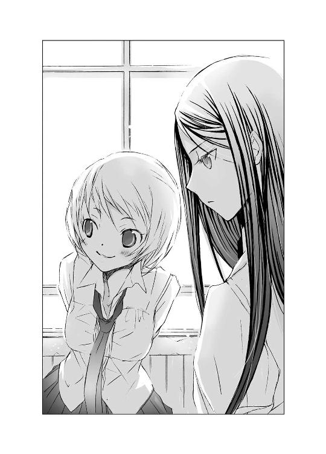
◇ ◇ ◇
（俺が夕雨を、守る）
廊下はテスト期間中のため生徒の姿はなく、静まり返っていた。そこを、是光は目に強い光をみなぎらせ、進んでゆく。
「あのとりすました斎賀朝衣が腰を抜かすほど、派手に怨霊祓いをしてやるぜ」
「朝ちゃんが腰を抜かして驚くとこなんて、ぼくもぜひ見てみたいけど......。いいのかい、是光」
突然、澄んだ声が尋ねた。
無視しようとするが、向こうが言葉にするのをためらっているような吐息と沈黙があり、かえって気になってしまった。
（いいのかって、なにがだよ）
ぎこちない沈黙に、つい横目でそちらをうかがいそうになったとき、先に厳しい声が聞こえた。
「夕雨を怨霊から救い出したあと、きみは夕雨を失うよ」
是光の足が止まる。
振り向くと、こわばった硬い顔があった。
ヒカルは避けられない不幸を伝えようとするような、切なげな暗い眼差しで是光を見つめて言った。
「そうならない方法をぼくは知っているし、きみに教えることができる。どうする？ 是光？ 聞いてみるかい？」
自宅のパソコンを立ち上げ、ホームページにアクセスすると、紫の壁紙とデコラティブな金色の豪邸と、飾り文字が表示される。
〝ぱーぷる姫のお屋敷〟は、二年前に帆夏が立ち上げた。携帯からもパソコンからも閲覧可能で、自作の小説を掲載している。
女の子が一度は夢見るような、波瀾万丈の極甘恋愛小説が受けて、すっかり人気ページになった。
作者のぱーぷる姫は恋愛の達人と呼ばれ、ブログのコメント欄もメールボックスも、ぱーぷる姫に恋の悩みを打ち明け、アドバイスを求める女の子たちの声でいっぱいだ。
そのひとつひとつに、ぱーぷる姫――つまり帆夏は、親身に答えてゆく。
『ぱーぷる姫こんにちは！
わたしは、中学二年生の女の子です。
わたしには、つきあいはじめて一ヶ月になる彼氏がいます。
彼はさわやかなスポーツ少年で、部活はテニス部です。デートもサッカーの試合の観戦をしたり、テニスをしたり、路上でバスケットをしたりします。
彼とお出かけするのは、とても楽しいのですが......実はわたしは、ものすごい運チで、スポーツは見るのもするのもゴーモンなのです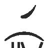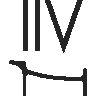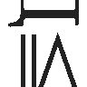
彼とテニスをしてても、ボールが全然拾えなくて、泣いてしまいそうでした。
でも彼は、練習すればＡ美ちゃんもうまくなるよ！ がんばろう！ と言って、来週もテニスに誘われています。
彼のこと、本当に本当に大好きなのに、このままではデートが憂鬱になってしまいそうです。
どうしたらよいのでしょう。すごく、すごく、悩んでいます。
追伸
今週の更新、拝読しました！ タクマがナツノを追いかけて、後ろからぎゅって抱きしめるところ、どきどきしちゃいました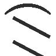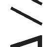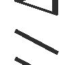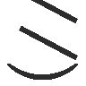』
『こんにちは、Ａ美さん。
彼と趣味があわないのは、本当に困っちゃうよね。
わたしの友達にも、デートのとき、自分はパスタやキッシュのお店へ行きたいのに、彼がラーメン屋さんにしか入りたがらないと嘆いている子がいたよ！
その子も、Ａ美さんと同じで、彼のことが大好きで嫌われたくなくて、ラーメンよりパスタが食べたいって言えなかったのね。
けど、ある日、思い切って彼に打ち明けたら、びっくりされて、どうして黙ってたんだ！ って、怒られちゃったんだって。
そのあとは、彼も二回に一回は、彼女のお薦めのお店につきあってくれるようになって、彼女も、豚骨ラーメンは苦手だけど、塩ラーメンはちょっと好きって楽しそうに話してたよ！
だから、Ａ美さんも、まずは彼に打ち明けてみて。
きっと、すごぉぉぉぉく怖くて緊張するだろうけど。
ここでぱーぷる姫からひとつ、アドバイスです。
話をはじめる前に、彼の両手をぎゅーっと握ってみて。
彼がびっくりして、どうしたの？ って聞いたら、手を握ったまま、ちょっと上目遣いに目をうるませて、Ａ美さんの一番か弱くて可愛い顔で、彼を見つめてみて！
そうして、この手を絶対に放したくないって気持ちで打ち明ければ、彼もきっとわかってくれるはずだよっ』
回答を一通り終えると、思い出したくないことを思い出してしまい、いっきに落ち込んだ。
右の頰を、机にぺたっと押しあて、溜息をつく。
（どうして赤城のこと考えると、こんなに胸が痛いんだろう）
昨日、公園のステージで無理矢理折りたたみ傘を押しつけたとき、是光ははじめ、困ったように顔をしかめていた。
それが、こわばっていた頰が急に、ほんの少しだけやわらいで、
――じゃ、借りるな。......お守りに。
ぎこちなくそう言ってくれたとき、胸の奥が震えて泣き出しそうになってしまった。
喉がうんと痛くなって、それでも嬉しくて、バカみたいに笑って、
――うん、絶対ききめあるよ。
と言って、是光の胸を、とんと押した。
帆夏の傘を差して、帆夏の傘に守られて、雨の降る薄闇の中を遠ざかってゆく是光を、泣き笑いの顔で、ずっと見ていた。
あの気持ちは、なんだったんだろう。
その晩、是光からメールをもらって、
『今日は色々すまなかったな。
傘、助かった。
ありがとな。
また明日学校で』
そんなぶっきらぼうな内容に、胸がいっぱいになって、嬉しい気持ちと不安な気持ちが交互に押し寄せて、
（奏井さんと話、できたの？）
と訊きたいのに、怖くて訊けなくて、どうして怖いのかもわからなくて。
『役に立ったのならよかった。
また明日ね。
おやすみ』
さんざん迷って、何度も文章を直して、結局それだけ返信した。
ずっと待っていたけど、返信の返信はなかった。
（赤城は、そういうタイプじゃないものね......）
わかっていても、なんだか淋しかった。
今朝学校で、きちんと乾かして折りたたまれた傘を、両手で大事そうに渡されて、
『すげー役に立った』
と、深々と頭を下げられたときも、赤い髪のてっぺんにあるつむじを見て、胸がきゅーっとして、淋しくなった。
『こ、これくらい大したことないし、大げさだよっ。それより奏井さんと......どうなったの』
『ああ』
是光は少しだけ視線をそらし、ぶっきらぼうに言った。
『夕雨の傘を見つけてやるって、約束した』
『傘って、もしかして一年前の!? そんなの無理だよ』
『無理でもやる』
強い声だった。
帆夏を見ていない目に、確かな決意がにじんでいて、心臓を直接握りしめられたような気がした。
そのあと是光は口をむっつり曲げたまま、自分の席に背中を丸めて座っていた。
一時間目のテストが終わると、すぐに教室から出て行き、なかなか帰ってこなかった。
みちるが血相を変えて、
『赤城くんがヤバいよ～、ほのちゃん！』
と知らせに来て、同時に二時間目のチャイムが鳴り、是光が戻ってきたのはテストの時間を少し過ぎてからだった。
是光は火花が飛び散りそうなほどぴりぴりして不機嫌そうで、テストの間中ずっと目をつり上げていた。
そうして、テストが終わるなり、また立ち上がり、教室から出て行ってしまった。
（ああ、もうっ、なにしてるの、赤城）
状況が見えない分、胃がきりきりと締め上げられた。
とどめに、
『赤城が、男子トイレで女子をレイプしてるって！』
と、教室に駆け込んできた男子が叫び、帆夏は目の前が真っ暗になったのだった。
（本当に、なにやってんの！ 赤城～～～～！）
次のテストも遅れて現れた是光は、帆夏と目をあわせもせず、テストの終了と同時に教師に呼ばれて、教室から出て行ってしまった。
帆夏は我慢できず、後を追いかけたのだった。
指導室のドアの前をうろうろしていたら、小柄で胸の大きな、ショートカットの女子に声をかけられた。
『式部さんも、赤城氏待ちですか？』
報道部の近江ひいなだった。
是光が男子トイレに連れ込んだと噂された、本人だ。
焦る帆夏に、中等部のときクラスメイトだったこともあるひいなは、親しげに話しかけてきた。
『なんで赤城氏だけ呼ばれるんでしょうね～。不公平ですよ。斎賀会長、職務にかこつけて、二人きりになって、ＳＭプレイでもしてるんじゃないですか』
帆夏はすっかり困惑して、小声でひいなに詰め寄った。
『ちょっ、ちょっと、近江。赤城がレ――って、どういうこと』
『あー、そのままですぅ。処女喪失です。赤城氏責任とってくれますかね』
ひいなのふざけた口調にカッとなり、
『いいかげんなこと言わないでっ。赤城は、そんなことするやつじゃないよっ。外見はヤンキーだけど、頭硬くて真面目だし、好きになった女以外、いっつも眼中にないし』
そう反論したら、
『ほほぉ、式部さんは赤城氏のコト、よぉっくご存じなのですね』
と、顔をのぞきこまれて、にやにやされて、耳まで熱くなった。
『そ、そんなんじゃないよ。ちょっと赤城の相談に乗ったりしてたから、気になってるだけで』
『相談とは、どのような？』
『近江に関係ないでしょ』
声をひそめてぼそぼそとそんなやりとりをしていたら、ドアの向こうから是光の声が聞こえたのだ。
『今度は、俺があいつを守る！』
ドア越しにもかかわらず、その言葉はまっすぐ帆夏の耳に飛び込んできて、帆夏の胸を突き刺した。
ひいながドアに耳をくっつける。
聞きたくなかったのに、帆夏も同じように、ドアに耳を押しつけていた。
すると、さっきよりもっとはっきり、是光の声が響いた。
『怨霊がまた現れたら、二度と夕雨に近づけないように、叩きのめしてやる！』
足音が近づいてきて、指導室のドアが勢いよく開く。
ひいなと二人、慌ててドアの裏に隠れたことに、是光は気づいていないようだった。赤い髪と猫背気味の背中が熱をはらんで遠ざかってゆく。
帆夏は胸が破けそうな気持ちで、それを見ていた。
「......俺があいつを守る、か」
机に頰をあてたまま、つぶやく。
いつの間にか外は雨が降っていて、淋しげな音が切れ切れに聞こえてくる。
「あたしだけじゃ......ないんだ」
胸が、ちくちくと痛んだ。
耐えられないような激痛ではないけれど、指導室で是光の言葉を聞いたときから、ずっとちくちくしている。
前に、是光のことで朝衣の機嫌をそこねてしまったとき、斎賀がおまえになにかしようとしたら俺が守ってやる、と是光は言った。
それが男として当然の責務であるように、気負いもなくすっきりと。
今日、帆夏が耳にした、決意のこもった『守る』とは違う。
あたしの『守る』は、特別な『守る』じゃなかったんだ......。なのに、ドキドキして、バカみたい。
「......赤城のことなんてなんとも思ってないし、赤城だって、あたしなんか恋愛対象じゃなくて、ただの相談役だし......最初の頃、痴漢と間違えて蹴り倒したりしたし......いっぱい無視もしちゃったし......赤城が誰を好きでも関係ない......」
そのはずなのに――。
何故、胸が痛いんだろう。
是光のことばかり考えてしまうのだろう。
体を起こし、ぷるぷると頭を振る。パソコンを見ると、コメント欄に新しい書き込みがあった。
『はじめて相談します。
特定の人のことが気になって、連絡を待ってしまったり、会えないと哀しい気持ちになってしまうのは、何故なのでしょう。
その人とは、この前喧嘩をしました。
わたしの考えは間違っていると言われて、とてもショックで、わたしの気持ちも、あなたには絶対にわからない、と思いました。
その人とわたしではなにもかも違うし、ときどき怖いとさえ思います。
その人はメールで謝ってくれたけれど、わたしは返事をしませんでした。
わたしにあきれて、もうメールをくれなければいいし、会いにもこなければいいと思いました。
そうすれば、わたしはおだやかな気持ちで過ごせるから。
なのに、今は、その人からメールが来ないことが、たまらなく不安で淋しくて仕方がないのです。
わたしは、どうしてしまったのでしょう。
会えば、また喧嘩になるでしょう。
その人の言葉は、わたしを傷つけるでしょう。
でも、会いたいのです。
絶対後悔するのに、会いたいのです。
その人からのメールを、待ってしまうのです。
気持ちが、ずっとざわざわして落ち着きません。
目を閉じても、眠れません。
どうしたら、もとのわたしに戻れるでしょう』
相談者の言葉に、帆夏自身の気持ちが重なり、胸が重くなり、鼻の奥がツンとしてしまった。
会えば、心が騒ぐ。
目の前に相手がいても、なにかが微妙にすれ違ってゆく。
なのにやっぱり、会わない時間もずっと相手のことばかり考えている。
前は、こんなんじゃなかったのに。
（本当にどうしたら、いいんだろうね）
「恋って、なんなんだろうね」
つぶやく声は自分のものとは思えないほど頼りなくて、心細さに泣きそうになった。
相談を受けているのは、帆夏のほうなのに......。
まるで帆夏が、相談しているような気持ちになっている。
（あたしだったら、なんて言ってほしい？ あたしは、どうしたいと思ってる？）
おずおずとキーボードに指を乗せる。
『もとのあなたに戻れるかどうかは、難しすぎて安易なお返事はできないけど......。
でも、あなたの感じている気持ちがなんなのか、一歩踏み出してみたら、わかるかもしれない』
◇ ◇ ◇
「......一歩、踏み出してみたら」
パソコンに表示された文字を、夕雨はか細い声で読み上げた。
窓には、明るいブルーのカーテンがかかっている。
その向こうから、雨が降る音が絶え間なく聞こえてくる。
冷たい雫が皮膚を叩き、服の内側にまで流れ込んでくる感覚がよみがえって、全身が粟立ち、夕雨は頭からかぶっていた毛布を、さらに引き寄せ、身を縮めた。
「......無理」
夕雨のほうからは、半歩すら踏み出せない。
――学校へ、行ってみないか？
そう、是光は言った。
怯える夕雨に向かって、怒ってるみたいな厳しい顔で、ぶっきらぼうな声で。
――部屋から一歩も出ない生活なんて、不自然だ。体にもよくねーし。心だって、現実だか夢だか区別がつかなくなっちまう。
あの、内側で漁り火が燃えているみたいな熱い目で、夕雨を見すえて。
――足に魚のヒレが生えてくる前に、外へ出るんだ！
ヒカルの友達だという是光のことを、いい人だと思っていた。
はじめは、真っ赤な髪や、つり上がった目や、こわばった頰に驚いてしまって怖かったけど、言葉や仕草は粗雑でも、行動はとても親切で優しかった。
お土産に、夕雨の好きな氷砂糖を選んで持ってきてくれたし、海のように青いガラスのパズルを照れくさそうな赤い顔で差し出し、蛍光灯も付け替えてくれた。
ヒカルはいつも、部屋の真ん中で片膝を抱え、ゆったりと微笑んでいたけれど、是光は遠慮しているように、玄関に近い壁際であぐらをかき、むっとした顔で、背中を丸めている。そこに是光がいると、だんだん安心できるようになっていた。
是光も恋をしたことがないと、頰を染めぎこちなく告げたとき、是光の目の中に自分と同じ淋しさがあるような気がして、一瞬、彼をとても近くに感じた。
なのに、夕雨が一番聞きたくないことを、言った。
父と離婚したあと、仕事でオーストラリアへ行った母から、今でもメールが来る。
内容は、毎回同じで。
『いつまで、そうやって閉じこもっているの？』
『一生、そこにはいられないのよ』
『お父さんは新しい家族ができて、子供も生まれたし、あなたの世話をする余裕はないのよ。もう、十六歳でしょう。大人になりなさい』
一方的に夕雨を責め、大人になれ、それが正しいのだと命じるばかりの言葉を読むたび、体が重くなって、暗い淵に吸い込まれそうになる。
最近は母からのメールは、読まないで削除している。
両親が離婚してから、母とはずっと気持ちが擦れ違い続けている。
いいや、その前から。
夕雨が、学校で女の子たちに無視されたり悪口を言われたりしている間、父も母も離婚の話し合いをするのに忙しくて、夕雨が家でほとんどしゃべらなくなっていたことや、胸がつかえて、ごはんを残すようになっていたことに、気づかなかった。
朝起きて、学校へ行かなければならないのが、冷や汗が出るほど怖かった。
また下駄箱から上履きがなくなっているかもしれない。
机に、落書きがされているかもしれない。
庶民のくせに、貴族の先輩に近づくなんて図々しい、おとなしそうな顔して裏ではすごい遊んでて、色仕掛けが大得意なんだって、と言われてしまうかもしれない。
傘を差していると、恥ずかしさに染まった頰や、涙のにじんだ目を隠すことができて、少しだけ安心できた。
明るいブルーにエンゼルフィッシュの絵が描かれた傘は、中学一年生の誕生日に買ってもらった傘だった。両親と食事に出かけて、帰りにデパートに寄って、
『あの傘がいいわ』
と、目を輝かせて駆け寄った。
金色のリボンを巻いてもらった傘を、大切に抱えて家に帰った。
あのとき、父も母も夕雨も、楽しそうに笑っていた。
大事な、大事な傘だった。
夕雨を守ってくれる傘だった。
悪意に満ちた眼差しから隠してくれる傘だった。
幸せだった日々を、ひとときよみがえらせてくれる、魔法の傘だった。
なのに、なくなってしまった。
あの傘だけが、夕雨の心をぎりぎりで支えていたのに。
黒くぬめった大きな魚が口を開けて、エンゼルフィッシュを飲み込んでゆく。意地悪な声が頭の中に、高く響き渡る。
――傘がなくなっちゃったんだって。
――かわいそぉー。けど、仕方ないよねー。
――制服、すけすけで濡れて歩いてれば、エンコー目当てのおじさんとかが、声かけてくれるんじゃない？
今も消えない、笑い声。
肌を刺し貫くような激しい雨を、昇降口で見つめたときの絶望とみじめさ。体中を締め上げる痛み。
「あなたは強いから......きっと、わからない......わ」
この狭い部屋の外へ出ることが、どれほどの恐怖をともなうか。母の言う義務をはたすことが、どれほど辛いことか。
魚が水の中でしか生きられないように、夕雨もまた、外ではまともに息をすることもできないのだということが、他人のどんな視線も言葉も跳ね返してしまいそうな是光には、わからない。
是光は、母と同じように、この状態を不自然だと信じているから。
会えば、きっとまた学校へ行こうと言われる。
夕雨の願いと、是光の望みは重ならない。
俺が傘を取り戻してやると、是光は言った。
けど、そんなの無理だ。
絶対に不可能なことを口にする是光のことが、信じられない。
今、是光と一緒にいても、きっともっと辛くなるだけだし、なにを話せばいいのかも、どんな態度をとっていいのかも、わからない。是光の前では、もう眠れない。
（ヒカルは――赤城くんみたいに、ひどいことは言わなかった......）
どうして学校へ行かないのとか、そんなのヘンだよとか、きみはおかしいよ、とか。このままじゃダメだよとか――。
そんなこと一言も言わずに、ただこの部屋でゆったりとした笑みを浮かべて、細い指で、こるりの背中を撫でていた。そうして、
――夕雨は、夕顔の花に似ているよ。
優しく目を細めて、夕顔がどんな花なのかを教えてくれた。
――昼の光の下では咲けない、か弱い花なんだ。だからこそ儚くて愛しい......美しい。闇の中に浮かび上がる白い花びらの優しい白さやなよやかさに、夢心地になって、ひとときの平安をえるんだよ。
ヒカルの声はどこまでも甘く優しく、夕雨の心をそっと包み込んでくれるようだった。
――ヒカルは、夕顔が好き？
――うん、大好きだよ。一晩中でも眺めていたいね。
夕雨は夕雨のままでいいと、夜に咲く花でいいと。
それはそれで価値のあることなのだと、優しい、美しい言葉で――忘れられない言葉で、語ってくれた。
アパートから出られない夕雨に、公園や道ばたで見かけた美しい花々の名前や姿を教えてくれた。
――ヒカルは......今、幸せ......？
あんまりヒカルがおだやかで、夕雨に対してなにも求めず、ただ静かに微笑んでいるから、あるとき心配になって尋ねたら、深く澄んだ瞳で、
――幸せだよ。
と、答えた。
その声は安らかで、少しの噓もなかった。
――夕雨は？ 幸せ？
だから夕雨も心の底から微笑んで、幸せよ、と言えたのだ。
――ここにいれば、わたしは幸せなの。ここには、わたしにひどいことを言う人はいない......。わたしはびくびくしたり、隠れたりしなくてすむ......。それに、目をつむれば、どこへでもいける......どんな美しいものも......見ることができる......。
毛布に頰をすりよせ、目を閉じる。
あたたかで、やわらかな――安心な、感触。ずっとここにいたい。
ヒカルも、ささやいた。
――そうだね。ここには、すべてがある......世界で一番、優しい場所だ。
一緒に目を閉じ、同じ時間に身をゆだね、二人にしか聞こえない優しい波の音に耳を傾けていた。
きっと是光には、あの波の音は聞こえない。夕雨とヒカルが見ていたものは、是光には見えない。
ヒカルだけが、夕雨のことをわかってくれた。だから、ヒカルとこるりがいれば、よかったのに。
こるりは今日も窓辺に座り、カーテンの隙間からじっと外を眺めている。
そこは、こるりの定位置だった。
こるりが部屋に迷い込んできてから、もうすぐ一年になる。耳の不自由なこるりは、動作もゆったりしていて慎重で、ものをじっと見つめる癖がある。
たまに、学校でのことを思い出して、怖くて震えが止まらないとき、こるりが賢そうな瑠璃色の目で見つめてくれると心が落ち着いた。
父親からもう仕送りはできないと電話で告げられたときも、一度だけアパートを訪ねてきた母親から、『そんなにここにいたいなら、勝手に飢え死にでもしなさい』と怒りをぶつけられた日も、ヒカルの訃報を知らせるメールを受け取った夜も、絶望し涙を流す夕雨の横に、こるりは黙って座っていてくれた。
けど、夕雨の気持ちが静まると、こるりはすーっと離れて、窓のそばへゆく。
そこから、外を眺める。
こるりは自由な猫だから、本当は外へ行きたがっているのかもしれない。ヒカルのように、いつか夕雨を置いていなくなってしまうかもしれない。
（そうしたら、わたしは、一人になってしまう）
胸の奥が強く擦れ、毛布をつかむ手が震える。
父が使っていたゴルフバッグも母が大事にしていた扇風機も炊飯器も、二人にとって不要のガラクタになってしまった。
夕雨も同じように捨てられた。
だからこるりも――。それに、是光も――。
（嫌だ、怖いっ。考えたくない）
『一歩踏み出してみたら、わかるかもしれない』
なにが？ なにが、わかるの？
是光と顔をあわせるのが怖くて仕方ないのに、メールや訪問を待ってしまう、矛盾したこの気持ちが？
ヒカルがいつも座っていた場所を、のろのろと見つめて、掠れた声でつぶやく。
「ヒカル......あなたなら......わたしに教えてくれた？」
きみは、ぼくに恋をしていないとささやいたヒカル。
いつかきみも恋の歓びを知るときがくるよと、切なく澄んだ瞳で夕雨に告げた。
あのときヒカルは、苦しい恋をしていた。
ううん、きっと亡くなる間際まで。
見返りを求めない澄んだ愛情と優しさで、夕雨を愛おしみ、気遣い、慰めながら、抱きしめあえないただ一人のことを、想い続けていた。
透明な横顔が、その人を想うときは暗く淋しそうで――儚げな瞳の中で痛みと苦しみがせめぎあっていて――それに必死で耐えているのが伝わってきて――。
いつかも、うとうとして目を覚ますと、ヒカルが硬く組み合わせた手を額にあてて、目をぎゅっと閉じて、うつむいていた。それから目を開けて、あきらめたように、淡く微笑んだ。
その笑みが、苦しそうに目を閉じているときよりもっと苦しそうで――孤独で――。
何故そんな辛い想いを、ヒカルは捨てることなく胸に抱き続けたのか。
こるりが見ているのと同じほうを――カーテンのかかった窓を、こわごわと見て、頼りない気持ちでいっぱいになりながらつぶやく。
「恋って......なに」
そのとき、テーブルの上の携帯電話が震えた。
「！」
肩をびくっと震わせて、息が止まりそうな思いで着信を確認する。
是光からのメールだとわかって、止まっていた心臓がどきどきと高鳴り出す。
ぎこちない指先で、画面にメールの内容を表示させる。
夕雨の目が驚きに見開かれる。
そこに並んでいたのは、短いメッセージだった。
『明日、怨霊を退治してやる』
◇ ◇ ◇
中間試験の三日目は、朝から雨が降っていて肌寒かった。
傘を差して登校した平安学園高等部の生徒たちは、下駄箱近くの廊下に、異様な文字を見つけて、戦慄した。
『怨霊参上』
白い壁に、墨と筆で黒々と横書きされた太い字は、下に向かってはねる線にも、横に向かって伸びる線にも、トメにも狂おしいほどの勢いがあり、はねた墨が点々と散る様は血飛沫のようで、今にも壁から浮き上がって食らいついてきそうだった。
文字を一目見た生徒は、黒い手に心臓をつかまれたような衝撃を受け、戦慄とともに立ちつくした。
奏井夕雨の事件に関するメールが出回った直後だったため、誰もが、あのとき学園を襲った怨霊と、目の前の文字を重ねあわせずにいられない。
あの事件でも、つり下げられた傘から、禍々しい黒い水がしたたり落ち、窓や壁を汚していたという。
過去の怨霊が、再び猛威を振るいはじめた。
これはその予兆だ。
古い家柄の子供たちが多く集まる、伝統ある学園。
占いや呪いといった非科学的なものが信じられている、閉鎖された特殊な空間で、怨霊はその力を最大限に発揮する。
生徒たちの心に芽生えた恐怖が、怨霊の存在を学園の隅々にまで広め、増大させる。
「また、怨霊が出た！」
「今度はなにが起こるの！」
「誰が食われるんだ！」
泣き出す女子までいて、廊下は騒然となった。
その様子を、是光は口をむっつりと閉じ、鋭い目で見ていた。
皆の怯えっぷりを、獲物を狙う野良犬のように執拗に眺め回し、それがすむと、背中を丸めて、騒ぎの外へ出た。
と、そこに、斎賀朝衣が険しい表情で立っていた。
「とんでもないことをしてくれたわね、赤城くん」
怒りのこもる声が言う。
「なんのことだ」
「あの字、きみが書いたのでしょう」
「さぁな、怨霊じゃねーのか」
朝衣の頰がぴくりとし、目に冷ややかな光が広がってゆく。
「調べればわかることよ。それ以前に、あんな無茶なことをするのは、きみ以外に考えられない」
「それ、褒め言葉か？」
あくまでとぼけると、朝衣の眉が片方だけ上がる。
「ここまで知性のないケダモノだったのかと、呆れているのよ。これからどうするつもりなの」
是光は、ふてぶてしく朝衣を見つめ返した。朝衣がとっさに声をつまらせるほど力のある目で。
「先が知りたきゃ、黙って見てろ」
遠ざかる是光と、苛立たしげに見送る朝衣を、帆夏は廊下の角から息をひそめて見つめていた。
（あの字は、赤城が書いたの？）
書道塾をしているという祖父のもとで育った是光なら、墨で字を書くことはお手のものだろう。以前、見せてもらった是光の字は、驚くほど清々しく美しかった。
（けど、こんな騒ぎを起こして、赤城は一体なにを考えているの？）
◇ ◇ ◇
『試験終了後、化学室で待つ』
上履きの上にひっそりと置かれていた手紙の文面を見た少女たちは、一様に青ざめた。
ついに来た！
一年前からずっと、無言の恐怖にさらされ続けていた。
廊下を歩いているときも、教室で友達と話しているときも、突き刺すような眼差しを感じて、振り返る。
そこには誰もいないのだけど、あの鋭い目が頭の中いっぱいに広がり、あの険しい声が耳の奥によみがえり、背筋がざわめき、血の気が引く。
夜、寝る前にまた思い出し、首を横に振り続け、身悶える。
そんな緊張に満ちた日々を過ごしてきた。
いつ、終わるのか。
いや、いつはじまるのか。
監視され続ける生活に、気が変になりそうで――それがようやく薄れはじめた頃。
とうとう裁きの日が、やってきたのだった。
呼び出し状の最後に記された差出人の名前は、
『怨霊より』
と、なっていた。
手紙を誰にも見られないように制服のポケットに忍ばせ、ひんやりした廊下を進む。
窓の外は、細かな雨が降り続いている。それが余計に、恐怖をあおり胃壁を削る。
そう、あの日も雨だった――。
冷たい指先で、化学室のドアを開ける。
カーテンレールに横一列につり下げられた、五本の傘。
先端からしたたり落ちる、黒い液体、墨の匂い、次々に上がる悲鳴。
『怨霊だ』
『復讐だ』
声が積み重なり、大きな黒い渦になり、自分たちを飲み込んでゆく。なすすべもなく飲み込まれてゆく。傘の先からこぼれる、ありうるはずのない黒い水を――仲間たちと愕然と見つめながら。
「......河合」
名前を呼ばれてハッとする。
ドアを開けたとき、恐怖のあまり目をつむってしまったらしい。
まぶたを持ち上げると、雨に濡れた窓と、左右に寄せられたアイボリーのカーテンがあり、四人が、青ざめた顔でこちらを見ていた。
「あんたも......手紙を、もらったのね」
「......うん」
「これで、全員、だね」
「......そう......だね」
沈黙が落ちる。
みんな、視線をあわせないように、うつむいている。雨の音と、草が腐ったようなしめった匂いが、部屋の中に満ちてゆく。
それに耐えかねたように、一人が口を開いた。
「......誰が、廊下に、あんな字を書いたのかな......」
別の一人も、唇を震わせる。
「手紙を出したのは、字を書いたのと......同じ人、なのかな」
また別の、
「もう......終わった、と思っていたのに」
そして、次々に、
「どうしようっ。頭条さん、まだ怒ってるのかな」
「きっとそうだよ。すごく、すごく、怒ってるんだよっ。あのときも口調は静かだったけど、目がすごく怖かった。今度もきっと」
「あたし、関係ないからっっ。奏井の傘をとったのは、あたしじゃないもの」
「あたしだって。知らない」
「本当に？ あんたが一番、奏井に嫌がらせしてたでしょ」
「噓、阿部のほうがひどかったよ。あたし、後半引いてたもん。奏井の傘も阿部が隠したんでしょう。そのせいで、あんなこと――」
「あたしのせいにするの！ 最初に奏井をハブろうって言ったの、鞠佳でしょ。鞠佳が奏井の傘をとったんじゃない」
「違うよ、最初に言い出したのは河合だよ。あたしは、河合に引き摺られただけで。傘のことも知らない」
「違うって、最初は鞠佳だって。頭条さんと奏井の相合い傘の写メを送ってきて、それで、許せないって」
「それ、阿部も言ったじゃない。許せないから、思い知らせてやろうって」
「でも、傘のことは知らない！ 頭条さんを怒らせてまで、そんなこと――」
「もうやだっ」
一人がわっと泣き出す。
「あのときみたいに、みんなに冷たい目で見られてハブられるの、もう耐えられないよ。あたしたち、完全に悪役だったじゃない」
「あたしなんか、茶道部やめなきゃならなかったんだから」
「頭条さんも怒っちゃったし――」
「あれは、河合が余計なことするからでしょう」
「みんなも賛成したじゃない」
「だって、あたしたち、悪者にされてたし。頭条さんにも『心の黒さは外見におのずとにじみ出る。そうした下賤な生徒は我が校にいてほしくない』なんて言われて」
「だけど、頭条さん、もっと怒っちゃったじゃない！」
「あたしたち、どうなっちゃうの。奏井が頭条さんにすり寄ったりしなきゃこんなこと」
「そうだよっ。奏井が中等部入学の庶民の分際で、頭条さんに色目使うから」
「奏井が全部悪いんだ。頭条さんだけじゃなく、ヒカルの君まで――。ヒカルの君は、奏井とつきあってたせいで殺されたんでしょ。メールにもそう書いてあったし」
「間違いないよ！ 奏井が怨霊憑きなんだよっ！」
「本当に真っ黒だな、おまえら」
是光は机の下からむっくりと立ち上がり、怒りのにじむ声で言った。
それまで好き勝手にしゃべっていた女の子たちが、「ひっ！」と悲鳴を飲み込み、固まる。
黒い耐熱机の間を、是光は背中を丸め、目に静かな炎を燃やし、こつこつと足音をならして進んでゆく。
「まだ、自分は悪くないって、他人に責任を押しつけようとしてんのかよ。きっと、おまえらの心臓を絞ったら、墨みたいな黒い汁がこぼれてくるんだろうな」
試してやろうか、と言うように、眉をぐっと持ち上げ、一人一人をなめるように見つめる。
そうすると、女の子たちは一斉に顔を引きつらせ、震え上がった。
（こんな連中、怒る価値もねーぜ）
だから、歯をむき出しにし、口の端を、にぃっとつり上げた。
「！」
女の子たちが裂けそうなほど目を見開き、体を後ろにそらす。
「今後一切、奏井夕雨を中傷したり、嫌がらせをしたりするなっ。でないとその汚い言葉を吐く口を、怨霊じゃなく俺が引き裂くぞ！」
口の端を持ち上げたまま、底光りする目で、是光が告げる。
本人は笑い顔のつもりだったが、女の子たちは、
「いやぁああああぁぁぁ！」
と悲鳴を放って、半泣きでドアに殺到し、そこでまた一度に出ようとしたものだから、お互いの体が引っかかって前に進むことができず、勝手にパニックを加速させてわめきまくり、しまいに、なだれを打つように、廊下に倒れ込み、めくれたスカートや乱れた髪もそのままに立ち上がり、廊下を走っていってしまった。
あの様子では、平静になるまでに一人あたり二、三回はすっ転びそうだ。
まぁ、知ったこっちゃないが。
それより、逃げてゆく女の子たちから「怨霊より怖い～」という声が聞こえたのは、納得がいかなかった。
いくらなんでも、そりゃないだろう。
むくれていたら、隣で声がした。
「ちょっとだけ、あの子たちに同情するよ」
ヒカルが苦笑している。
「きみの笑顔は、強烈すぎだ。恋のシーンでは絶対に使っちゃいけないよ」
「余計なお世話だ」
ぶすっとして答える。
それに、あんな連中に同情するなんて、相変わらず女に甘すぎだぜ。
「どーせ、俺は笑うの下手だよ、ほっとけ、つか、まだおまえのこと怒ってんだからなっ。気安く話しかけるな」
ヒカルが肩をすくめ、淡く微笑む。
「けどよ......女のどす黒い責任転嫁大会は、たっぷり鑑賞させてもらったが、いまいちわかんねー部分があるな。頭条のこととか」
腕組みし首をひねると、ヒカルはすっきりした知的な眼差しで言った。
「なら、これから俊吾さんに会いに行こう」
◇ ◇ ◇
幸い、頭条俊吾は校内に残っていた。
「多分あそこにいるはずだ」
と、ヒカルが案内したのは、裏庭の一角にある竹林だった。足元に背の低い植物が生え、風が吹くたび、草木も竹もざわざわ揺れる。
少し進むと苔むした石に囲まれた石碑があり、その傍らに、モスグリーンの傘を差した頭条が立っていた。
背筋を伸ばし、瞑想するように目を閉じている。
濃紺の傘を差した是光が近づくと、雨が傘にはじける音が聞こえたのだろうか。目を開けて、歓迎しているとは言い難い鋭い視線を寄こす。
是光も頭条を睨みながら、声をかけた。
「話がある」
「俺にはないが」
低く通る声が答える。
そのまま是光から去ろうとする頭条に、しっかりした強い口調で言う。
「いいから聞けよ。怨霊の正体についてだ」
モスグリーンの傘が止まる。
「夕雨をいじめていた女どもを集めて、話を聞いてみた」
「彼女たちが話したのか？」
傘越しに聞こえてくる声に、かすかに疑念がにじむ。
「ああ、ぺらぺらしゃべってたぞ」
落ち着いた風を装って、ふてぶてしく答えながら、是光はヒカルの動向を気にしていた。
ヒカルは、是光と頭条のちょうど中間くらいの位置に、二人のやりとりを見守るように、静かにたたずんでいる。
ヒカルがなにを考えているのか、今も是光にはわからない。昨日、あんな話を是光に聞かせた真意も。
（かまいやしねー、俺は夕雨のために、俺ができることをするだけだ）
それより、ヒカルのほうばかり気にしていたら、頭条に不審に思われる。わずかな隙も動揺も見せるわけにはいかない。
そう、目の前に貴族然とした眼差しで立つ、この男。
こいつが一年前に校内で怨霊騒ぎを起こし、夕雨を不登校にした黒幕かもしれないのだから。
ヒカルから視線をそらす努力をしながら、是光はモスグリーンの傘からのぞく、広い背中を睨みつけた。
「女どもは、全員同じコトを言っていた。自分は傘をとったりしてないのに、って」
あなたが隠したんでしょう！
いいえ、あなたのせいよ！
罪を押し付け合いながら、自分はとっていないと、どの少女も主張を続けていた。そこには、わずかな後ろめたさも感じられなかった。
「あいつらは本当に、夕雨の傘を盗んだり隠したりしちゃいなかったんじゃないか？ なのに、周りから夕雨の傘を盗んだ犯人扱いされて、白い目で見られて、焦ったんじゃねーか」
――もうやだっ。あのときみたいに、みんなに冷たい目で見られてハブられるの。あたしたち、完全に悪役だったじゃない。
――あたしなんか、茶道部やめなきゃならなかったんだから。
自分を可哀相がって、ヒステリックに泣きわめいていた、少女たち。
「もちろん、そんなの自業自得だ。あいつらがそれまで夕雨をいじめていたことも、傘をなくして困っている夕雨をあざ笑ったことも、事実なんだからな。けど、あいつらは、そのことを、これっぽっちも反省なんかしなかった。どうしたらやってもいないことで非難されているクソつまらない状況を変えられるか。自分たちこそが被害者になったつもりで、自己保身ばっか考えて――結果、もっとわかりやすい被害者になることにしたんだ」
竹が大きくしなり、ざーっと音を立てた。
頭条が振り返り、眉根を寄せる。
空からは突き刺すような雨。
モスグリーンの傘の下、尊大な眼差しは、いまだ揺るがない。
けど、是光からそらされもしない。そこに立ち止まったまま、是光が語る言葉に、じっと聴き入っている。
「夕雨の傘がなくなった翌日、あいつらの傘もなくなり、そいつが化学室のカーテンレールにつり下げられたのは、完全にあいつらの自作自演だった。そうすることで、周りの同情を集め、自分たちに向けられた疑いをはらそうとしたんだ」
風が吹き、是光の赤い髪を乱す。
頭条の黒髪も乱れている。
が、
「それがなにか？ 俺に関係があるのか」
愛想のかけらもない冷淡な声が返ってくる。
是光の胸を、苛立ちが引っ搔く。
これくらいで動揺するような小物じゃないってわけだな。いいだろう、おまえのその上から目線のお貴族様ヅラを、崩してやるぜ。
目を燃え立たせ、挑発するように断言した。
「ある――と、俺は思っているぜ」
おまえも熱くなれ、頭条。
顔をゆがめ、声を震わせ、うろたえてみせろ。
「何故なら、あいつらは、あきらかに怨霊ではなく、頭条！ おまえにびびっていた！ 怨霊のことなんかひとことも言わず、頭条さんが怒ってるって、オウムみたいに繰り返してた」
ヒカルや女の子たちには大不評だった、笑みを浮かべる。
甘ったるい恋の場面には使えないが、対決の場面にはぴったりの、凄絶な笑みを。
歯をむき出し、口の端をにぃぃぃっとつり上げ、目をぎらぎらと輝かせて、笑ってみせる。
頭条がはじめてぎょっとしたように身じろぎし、目を見張る。
「おまえ、あいつらに、言ったそうだな」
凄惨な笑顔を保ったまま、彼女たちが青ざめきった顔で語っていた言葉を、是光はそっくり繰り返す。
「『心の黒さは外見におのずとにじみ出る。そうした下賤な生徒は我が校にいてほしくない』――」
目を鋭く細める頭条に、続けざまに言葉の弾丸を放つ。
「傘をつり下げたのは、あいつらだった！ けど、墨を傘に流し込んだのは、おまえじゃなかったのか？ あいつらの一連の行動の裏には、おまえの存在があったんじゃねぇのか！ 頭条俊吾！」
怨霊を生み出したのは、人の悪意だった。
けど、意志を持ちはじめた怨霊を操ったのは、この男だ！
傘の先からしたたり落ちる黒い水は、彼女たちへのメッセージ。
心の黒さは、隠してもにじみ出るのだと――。
そうやって、浅はかな女どもを怯えさせ、おまえはなにをしようとしたんだ。
竹が大きく揺れる裏庭で、黒髪を乱し、整った顔をわずかにゆがめ尊大な眼差しで立つ男に、是光は嚙みつくように吠え叫ぶ。
「おまえの目的は、なんだったんだ！」
そのとき、後ろで声がした。
「復讐ですよ。奏井夕雨への」
振り返ると、近江ひいなと斎賀朝衣が、何故かひとつの傘の下に並んで立っていた。
大輪の花のようなダークレッドの傘の柄を不本意そうに握る朝衣の横で、閉じたミントグリーンの傘を手にしたひいなが、やばいほど生き生きと目をきらめかせている。
（今、復讐って言ったのは、近江か？）
「自分、そこで斎賀会長とお会いして、一緒に盗み聞きしてました」
悪びれもせず、ひいなが告げる。ふっくらした唇に、こぼれんばかりの笑みが浮かんでいる。
逆に朝衣は、ますます不機嫌そうに、
「わたしは、生徒会長として聞く権利があると判断しただけよ。同列に扱わないで」
と、険しい声で言う。
「えーっ、一本の傘の中で頰を寄せ合って盗み聞きした仲じゃないですか。そんないけずなこと、言わないでください」
「そっちが、わたしの傘に勝手に入ってきたのでしょう」
「だって、傘二本も開いてたら、向こうから丸見えじゃないですかー。そこは臨機応変に行きましょうよ」
「そう、じゃあ、もう気づかれてしまったのだから、出ていって」
「冷たすぎです、会長」
延々続きそうな会話を、是光は断ち切った。
「おい、近江。今の言葉はどういうことだ」
ひいなは恐れを知らない少年のような眼差しを、是光たちのほうへ向けた。
そうして、自分の傘を開くと、
「どういうこともなにも、ただの事実ですよ」
くるりと傘を回して頭上に差し、こちらの反応をうかがうようにしゃべりながら、近づいてきた。
「ねぇ、頭条センパイ」
頭条の手前で足を止め、下からすくいあげるように見上げて、また恐れ知らずな笑みを浮かべる。そうして、早口で話しはじめた。
「頭条センパイは、奏井夕雨が自分に靡かなかったことを恨んでいたんですよね？ 奏井さんをいじめていた女の子たちが傘をつりさげたのも、ひょっとしたら、はじめから頭条センパイの誘導だったんじゃないですか？ そうやって奏井さんを怨霊に仕立てて、学校へ出て来れなくしたんです。中等部入学の庶民の分際で、自分を振った女が、同じ敷地で息をしてるなんて、目障りですもんね」
是光の内側がじりじりと熱くなり、頭条を睨みすえる目が鋭くなってゆく。
（そうなのか？）
そんな理由で、夕雨を排除しようとしたのか？
そのための怨霊だったのか？
いや、近江ひいなの言葉は、相手を煽り、惑わし、内にあるものを引き摺り出すための陽動だ。すべてが真実とはかぎらない。
（惑わされるな、見極めろ）
頭条は、眉根を寄せたままひいなの言葉を聞いていたが、ひいなが頭条の言葉を待つように唇を閉じ、期待のこもる瞳で見つめると、
「......奏井夕雨は、もとから恋愛対象ではなかった」
と、是光に言ったのと同じように、硬い声で事務的に告げた。
朝衣は知的な切れ長の瞳で、この一幕をじっと見つめている。どこに真実があるのかを、朝衣もまた考えているようだった。
是光が、
頭条が、
朝衣が、
張りつめた表情で見守る中、ひいな一人が喜ばしげな笑みを浮かべ、軽やかに言葉の爆弾を投げ込んでゆく。
「だからこそ、です。使い捨てにしていい相手が自分を拒否したことが、プライドの高い頭条センパイは許せなかったんじゃないですか？ おまけに引きこもったまま一人暮らしをはじめた奏井さんのアパートに、ヒカルの君が通っていると知って、憎しみは増したはずです。
だって、ヒカルの君は、頭条家の主筋にあたる帝門家の御曹司で、世が世なら頭条センパイは、皇子であるヒカルの君に、家来としてお仕えする立場ですから。頭条家は確かに名門ですけど、〝一番〟じゃありません。
その、血筋ではどうしても負けてしまう相手が同じ学園にいて、女子の人気を二分しているなんて、しょーじき頭条センパイにとっては、おもしろくないですよねー。実際女子の人気も、ヒカルの君のほうが断然リードしてましたし。
あ、スミマセン、頭条センパイは、ミーハーな女子の人気なんて気にされるかたじゃありませんね。けど、ヒカルの君にライバル意識は持っていたでしょう？ 自分のことは拒否した女が、ヒカルの君のことは受け入れた。それって、すぅぅぅごくむかつきますよね？ 頭条センパイよりヒカルの君のほうが、男性として魅力的と判断されたってことですもの。そうして、頭条センパイの憎しみの刃は奏井夕雨だけではなく、ヒカルの君へも向かった」
朝衣が身じろぎする。
是光も息をのんだ。
（近江のやつ、なにを言い出す気だ――）
頭条は、まだ崩れない。
横殴りの雨に濡れ、ひいなの制服のシャツはすけ、下着の線がくっきりと浮き上がっている。それを、恥じらう様子もなく、むしろ豊かな胸を突き出すようにして、楽しそうに続ける。
「自分が趣味のトイレ掃除中に得た情報によれば、頭条センパイは、今年のゴールデンウイークを、信州の別荘で過ごされたそうですね。あれぇ？ ヒカルの君も同じ頃、信州の別荘に滞在されてませんでしたっけ？ まぁ、あのへんはセレブ御用達の別荘地ですから、頭条家の別荘の近くに帝門家の別荘があっても、おかしくないですよね。
それに、遊ぶ場所もかぎられてますから、会いたくもない相手と、たまたま出くわすこともありますよね～。結果、森の乗馬コースでばったり。神様のいたずらってやつですか？ そこで、頭条センパイは、恨みつのるヒカルの君に、からんだわけです。ヒカルの君が、お馬さんに乗ってきらきらしてるのが、カンにさわったんでしょうかね。ずいぶん声を荒らげていて、馬上で襟首とかつかんじゃったりして、紳士な頭条センパイらしくなかったそうじゃないですか」
ひいなが繰り出す情報に、煽られまいと腹の底に力を込めながら、是光の心はざわめき乱れ、喉が熱くなる。
頭条が別荘地で、ヒカルに会っていただって？
ヒカルに、からんだだって？
（聞いてねぇぞ！）
ヒカルの従姉の朝衣には、既知の情報だったのだろう。冷ややかな表情を崩さず、ただ頭条の反応を見極めようとするように、彼の顔に視線をあてている。
頭条は、無言でひいなを見おろしていた。
端整な顔をしかめているが、背筋は伸び、眼差しは依然として冷徹で尊大だ。
（こいつも、なにを考えていやがる）
変わらない頭条の態度に、是光は苛立ちと違和感を覚えた。
（なにを――隠している。こいつは）
ひいなが、なぶるように声の調子を上げる。
「同じ日の夕方、頭条センパイはヒカルの君の別荘を訪問しましたね」
是光の鼓動が、また高まる。
朝衣の瞳が、鋭い光を帯びる。
「そこでヒカルの君と、どんなお話をされたんですか？ もしかしたら、頭条センパイの中に燻っていたヒカルの君への憎しみをかきたてる内容だったんじゃないですか？」
頭条は答えない。
唇を引き結んでいる。
代わりにひいなが言い放つ。
「頭条センパイが、奏井夕雨をとられた恨みから、ヒカルの君を殺したんじゃないですか？」
竹が強風にあおられ、高波のような音を立てて一方向に靡いた。
笹の葉にたまっていた雨が、ばらばらとこぼれ落ち、是光の顔を叩く。
不敵な少年の目で微笑むひいな。
頭条が、侮蔑のこもった眼差しでひいなを見おろし、それまで閉じていた口を動かしかけたとき。
「そうだね、あのときの俊吾さんは、ぼくを絞め殺しかねないほど真剣だったね」
是光の耳に、ふくよかな甘い声が聞こえた。
その声が聞こえたわけではないのだろうけれど、頭条が開きかけた口を閉じる。
代わりにヒカルの声が、雨の竹林に流れてゆく。
「ぼくを怒鳴りつけて、『おまえは人の心を狂わせる、おまえさえいなければ』と言った」
是光と頭条の傍らに――それまで一輪の美しい花のように、ただたたずんでいるだけだったヒカル。
そのヒカルが、はじめて動いた。
是光は驚きとともに、ヒカルを見つめた。
雨が降りしきる中、少しも濡れることなく、汚れることなく、すっきりと立つ白く華奢な少年。
竹をしならせる強い風も、その雅な美貌の前では微風に変わり、淡い茶色の髪をそよそよと、そよがせるにとどまる。
その姿は、頭条にも、ひいなにも、朝衣にさえも、見えていない。
けど、是光は見える。
誰にも聞こえない、ふくよかな甘い声も、是光にだけは、はっきりと聞こえる。
ヒカルの声――ヒカルの言葉。
「俊吾さんがぼくにそんなことを言ったのは、恨みや嫉妬からではなかった」
何故、急にしゃべり出した？
ヒカルの深い瞳は、ためらいもなく頭条へと向けられている。
頭条には見えない瞳。頭条には聞こえない声。
それをこの場で見て、聞いて、伝えることができるのは、是光しかいない。それがわかっていて、話しているのか？
（っっ、俺に、また代理人をしろっていうのかよ？）
急に振られても戸惑うだろ、ネタあわせくらい事前にすませとこうぜ、と文句をつける間もないまま、ヒカルの声の真剣さに引きずられ、是光は叫んでいた。
「頭条は、ヒカルを殺してなんかいねぇ！」
頭条の顔に、明確な驚きが走る。
口を小さく開け、目を見開いて、是光を見る。
「殺しかねないほどマジに怒ってて、おまえさえいなければとか暴言を吐いたけど、それは恨みとか嫉妬とかそんなんじゃなかった」
なんで、俺が頭条の弁護をしなきゃいけねーんだ。
朝衣も、ひいなも、目を見張っている。
是光はこめかみを引きつらせ、ヒカルの声に必死に耳をすました。ヒカルは是光に合図を送ることすらせず、知的な眼差しで頭条を見据え、少女のように秀麗な唇を動かし続けている。
「だって俊吾さんの望みは、夕雨を守ることだったから。夕雨を救いたいと、俊吾さんは思っていたから」
澄んだ、ふくよかな声に、少しの切なさとそれを包むような気遣いが混じった。瞳にも、翳りが浮かぶ。
「頭条、おまえは――本当は夕雨を守りたかったし、救いたかったんだな。それがおまえの望みだったんだな」
ヒカルの代理人としてヒカルの言葉を伝える是光の胸を、驚きがまっすぐに刺し貫く。
（そうだったのか！ 頭条？ おまえは夕雨を守るために行動していたのか？ だって、中等部から入学した女なんか対象外だって、あんな偉そうに言ってたじゃねーか。自分はつきあう女を、心得てるって――）
頭条は喘ぐように唇を震わせ、茫然と目を見開いている。ひいなの言葉には一度も揺るがなかった男が動揺し、とりつくろうことを忘れているようだった。ではヒカルの言葉は真実なのだ。
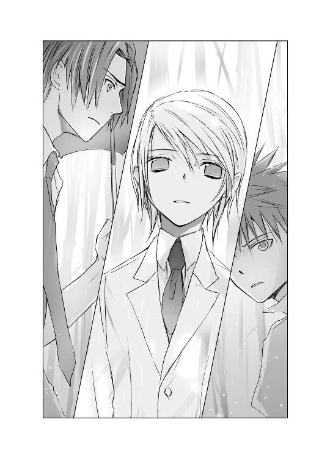
そのことに、また衝撃を受ける。
「あの日の夕刻、俊吾さんはぼくを訪ねてきた。それは、昼間乗馬コースで、ぼくに大人げない態度をとってしまったと謝罪するためだった。俊吾さんは、昔から自分に厳しい、律儀なところのある人だったから」
「夕方、おまえがヒカルに会いに行ったのは、昼間ヒカルに喧嘩をふっかけたことを詫びるためだ。おまえなりに反省してたんだな」
頭条が、どう反応していいのか困惑するように、眉根をぎゅっと寄せる。
それはそのまま是光の困惑だった。
胸がざわめき、体温が上がる。尊大で冷酷で、躊躇なく他者を切り捨てる頭条俊吾という男が、まったく別の人間に見えてくる。
事件の黒幕は、こいつじゃなかったのか？
ヒカルが優しい声で続ける。
「俊吾さんの目に、ぼくは大勢の女の子と同時につきあっている、いいかげんな男に見えても仕方がない。乗馬コースでぼくはまた女の子と一緒で、その人と馬上でキスしてたから、俊吾さんは腹にすえかねてしまったんだろうね」
「......まぁ、その、真っ昼間から野外でキスとかして、いちゃつかれたら、ぶん殴りたくなるよな」
ぼそぼそつぶやくと、頭条がまた目を見張る。
何故是光が、これほど詳細に状況を語ることができるのか。ヒカルと自分しか知り得ないことを、まるでその場で見ていたかのように、語ってみせるのか――。
きっと、混乱しているのだろう。
ひいなも朝衣も、驚きの表情で是光を見つめている。
「ぼくに会いに別荘へ来たときも、俊吾さんは夕雨のことばかり気にしていたね。『おまえにとって、奏井夕雨は遊び相手の一人か？』って怒ってた。あんなに感情的な俊吾さんを見るのは、はじめてだったよ。それだけ夕雨が大事だったんだ。
夕雨が引きこもったあとも、夕雨のことが心配で、隣の部屋に自分が雇った護衛の女性を住まわせるほどに......。あのお姉さんは、ぼくが夕雨を訪ねるたびに、ドアから顔を出して、悪さをするなって牽制していたよ。部屋の中がシーンとすると、エッチなことでもしてるんじゃないかって心配したのか、わざと壁を叩いたり、ムードぶちこわしの演歌や民謡を流したり、大声でわめいたりして、とても職務熱心な人だった。けど水商売って設定なのに、昼間だけじゃなくて夜もずっと部屋にいるのは不自然すぎだよ。引きこもりのシステムエンジニアとか、漫画家くらいにしとけばよかったのに」
ヒカルの言葉が、事件を構成するパズルのピースを次々埋めていく。
是光はそのことに感嘆し、同時に呆れていた。
隣の部屋のケバイ女が、執拗に是光を睨んだり嫌味を言ったり、壁を叩いたりしていたのは、そういう理由からだったのか！
そして頭条は、そこまでして夕雨を守っていたのか！
胸が、引き絞られるようだった。
「おまえは......ずっと夕雨のことを気にして、夕雨の隣の部屋に護衛の女を、住まわせていた。それくらい夕雨を心配していた」
声に痛みがこもる。ヒカルの口調も眼差しも、どこかほろ苦い。
「一年も不登校を続けている夕雨が除籍にならなかったのも、俊吾さんが裏で学園に働きかけていたからだし、ぼくが死んだあと、葬儀の日程を知らせるメールを夕雨に送ったのも、俊吾さんだね？ あのメールの送り主のアドレスは、『ｕｐｖｋｐｖ』――これだけだと意味をなさない文字の羅列だ。けど、それぞれひとつ前のアルファベットを並べてみると『ｔｏｕｊｏｕ』になる」
小さな携帯画面に表示された、ヒカルの死の知らせ。
あれは、頭条から夕雨へ送られたものだった。
「ヒカルの葬式を夕雨に知らせたのも、おまえだったんだな。アドレスのアルファベットを、一つ手前の字と置き換えると、頭条――おまえの名前になる」
風がやみ、竹林の中に、雨の降る音だけが嫋々と流れる。
頭条が、苦しげに目を細める。それまでの彼らしくない隙のある表情だった。
ひいなは何故だか泣きそうな顔で、頭条を見上げている。
朝衣は眉をひそめている。非難しているとも、同情しているともとれる複雑な眼差しだった。
「そんなおまえが、夕雨を陥れることを進んでするはずがないんだ」
それは、ヒカルの言葉ではなく、是光自身の口から出た言葉だった。苦いような切ないような気持ちが、胸に広がってゆく。
「是光の言うとおりだよ。俊吾さんは、夕雨が女の子たちにいじめられていたとき、表立って動くことは立場上できなかったけど、そのグループの子たちに、ちゃんと警告を発していたんだ」
是光にもわかった。
女の子たちが、怯えながら語っていたあの言葉。
『心の黒さは、おのずから外見ににじみ出る。そうした下賤な生徒は我が校にいてほしくない』
あれは、彼女たちの傘がつり下げられたあとではなく、その前――夕雨の傘が盗まれる以前に、夕雨へのいじめをやめさせるために放たれた言葉だった。
――傘のことは知らない！ 頭条さんを怒らせてまで、そんなこと――。
そう、だから彼女たちは、真っ青な顔で叫んでいたのだ。
「おまえは、夕雨をいじめていた女どもに、いじめをやめるよう忠告していた。それで女たちも、ちょっとはおとなしくしようと考えていたはずだ。
なのに夕雨が傘を盗まれて、ショックを受けているのを見て、いい気になったんだろうな。またうっかりやらかしちまった。そのツケはしっかり回ってきて、今度は自分たちが傘をとった犯人としてハブられる側になったんで、自分たちの傘をこっそり持ち出して、被害者を演じた。
あいつらが、こそこそとセコイ真似をしているのを、おまえは見てたんだな、頭条。
それで、あいつらが化学室から出ていったあと、墨汁を傘に注いで、自分は知ってるということを、あいつらに伝えたんだ。
傘が黒く染まっているのを見て、あいつらは、それがおまえからのメッセージだとすぐに気づいて、さぞびびったろう。おまえたちの心は、こんなに真っ黒に汚れてるって、つきつけられたようなもんだからな。あいつらにとっては、怨霊よりもおまえの怒りのほうが数倍も怖くて、おまえにずっと睨まれているようで、生きた心地がしなかったんだろう」
是光が、下駄箱にしのばせた呼び出し状。
『怨霊より』
という差し出し名を見て、彼女たちは、それが頭条からのものだと思って震え上がったに違いない。
ついに、償いを要求されるときが来たのだと！
「それで、夕雨へのいじめは完全におさまるはずだった。だが、おまえも予期していなかったことが、同じ日に起こった。それは、手足を黒く汚した夕雨が、傘を抱いて走ってゆくのを見たと証言する生徒が現れたこと！ そのせいで、墨汁入りの傘をつり下げたのは夕雨の復讐だったということになり、夕雨は怨霊にされちまった」
学園生が見た、夕雨の生き霊とは、なんだったのか。
多分それは......。
薄い紗のように視界をふさぐ雨の中、見えそうで見えなかった真実が、ゆっくりと姿をあらわしはじめる。
ヒカルが儚げな眼差しで、そっと是光を見つめる。その向こうに、夕雨の透明で儚げな瞳を思い浮かべたとき――そして、昨日、ヒカルが是光に語った言葉を思い出したとき、胸が強く軋むような気がした。
けれど是光は、生き霊の正体については触れなかった。
きっと頭条も、薄々気づいている。
けどそれはこの先、夕雨自身が乗り越えるべき試練で、今は別の真実をあきらかにしなければならない。
そしてそれを夕雨に伝えなければ。
――きみは、夕雨を失うよ。
耳の奥に響き続けるヒカルの声。
――そうならない方法を、ぼくは知っている。
ゆうべ、重く暗い眼差しで、是光を見つめていたヒカル。避けられない悲劇を語る予言者のように。
そして今もまた......。
（心配性だな、てめぇは）
心を擦る迷いを、顎をぐっと上げて振りはらう。
あのとき選択したように、是光の望みは今もひとつだ。
夕雨を、救う。
夕雨の心がゆっくりと崩壊してゆくのを食い止め、支えるためにも、今、真実が必要なのだ。
その鍵を握るのは、この男だ。
モスグリーンの傘の柄を強く握りしめ、苦悶に顔をゆがめ、唇を嚙んでいる、頭条俊吾だ。
「頭条、おまえは、夕雨を怨霊にしてしまったことに責任を感じながら、夕雨を守ってきた。おまえの行動は、すべて夕雨のためのものだった」
是光の決意をヒカルも感じたのだろう。
切なそうな目をしたあと、閉じていた唇を開いた。
「俊吾さんは、別荘で『他の女と別れて、奏井夕雨一人と真剣につきあうのでなければ、彼女と別れろ』と怖い顔で言ったあと、ぼくに向かって頭を下げたね。『頼む、彼女を解放してやってくれ。彼女があの部屋から出られるように、彼女と別れてくれ。おまえが通い続けるかぎり、彼女はあそこから一歩も外へ出ようとしないだろう。それで幸せだと思ってしまうだろう』――って」
泣けないヒカルが、淋しいとき、哀しいときに、浮かべる笑み――。
それがこのとき、ヒカルの口元に淡くにじむ。
是光は、胸がぎゅーっと締めつけられた。
『おまえは、夕雨が引きこもりのままでいいと思っているのか！』
是光が責めたとき、ヒカルは、『ぼくは幽霊だから』と突き放した。それは、夕雨が引きこもり続けた原因が、自分にもあったことを自覚していたからかもしれない。
「......おまえは、夕雨と別れてくれるように、ヒカルに頭を下げた。それが、夕雨のためだから、そう言って」
頭条は傘の柄を握る指に力を込めたようだった。
雨が傘を強く叩く。
ヒカルがまっすぐな澄んだ眼差しを頭条に向ける。
「ぼくは、わかったって、答えた」
「ヒカルは、わかったと、言った」
「もともと、お別れしなきゃいけない時期に来ていたんだ。夕雨だけではなく、他の女の子たちとも......。ぼくはそう決めて、あの別荘へ行ったのだから。だから、夕雨を外の世界に解き放つと、俊吾さんに約束した」
目の前から暗い雲がとりのぞかれるように、是光は、今、ようやく理解した。
〝約束〟は、ヒカルが夕雨と交わしたものではなかった。
ヒカルと俊吾の間で、結ばれたものだったのだ！
体の中に渦巻いていた熱が、一点に向かって駆け上がる。
今なら、ためらうことなく、はっきり言える。
「頭条には、ヒカルを殺す理由なんてない！ 夕雨と別れ、夕雨を解放すると、ヒカルは約束したんだから！」
頭条は対等の相手を見る目で、是光を見つめた。背筋を伸ばしたまましばらく沈黙し、
「......愚か者の話をしても、いいだろうか」
独り言のようにつぶやき、低い声で語りはじめた。
「......裏庭のこの場所は、彼の気に入りの場所で、一人になりたいとき、よくここへ来ていた。学園の生徒も、それを知っているから、誰もここへは足を踏み入れない。だが、彼女は......知らなかったのだろうな。教えてくれるような親しい友人もいなかったのだろう。昼休みにこの場所で、その石に座って食事をしていた」
石碑を囲む、苔むした石を見おろす瞳が、ほんの少しだけやわらぎ、またすぐ憂いのにじむ眼差しになる。
「一人きりなのに、とてもおだやかで満ち足りた顔をしていて......彼は、突然現れて、彼女を驚かせたくなくて、足を止めたまましばらくそこにいたあと、声をかけずに教室に戻った。翌日、また彼女はそこにいて、彼を見て困ったように縮こまっていたが、ここで食事を続けてもいいと言ったら、やっぱり困っている顔でもじもじしながら、『ありがとうございます』と小さな声で礼を言った。そのあと、体を小さく縮めて恥ずかしそうに、箸を動かしていたな。
翌日、彼女は、ここへは来なかった。それで、終わっていれば良かったんだが......。
数日後、急に雨に降られて、ビルの軒先で雨宿りをしていたら、傘を差した彼女が、偶然通りかかった。目があったとき、彼女はまた、とても困った顔をした。たいした知り合いではなくても、彼女の性格上、そのまま一人で帰るわけにいかなかったのだろう。おずおずと傘を差しかけ、タクシーが拾える場所まで一緒にいってくれた......」
夕雨の話をする頭条の口調は、静かで淡々としていた。
「......あのとき、そいつは彼女の申し出を、断るべきだった。彼女の傘に入ったことだけは、今でも後悔している」
夕雨に対する想いを、頭条は一言も口にしなかった。
けど、感情を強い意志の力で抑えつけたような声の響きから、伝わってくる。
竹林と、茂みと、苔むした石と、石碑――。
静かな光景の中に、ひっそりと溶けてしまいそうな儚げな少女に、心惹かれていたことが。
驚く姿や、うつむく様子を、いじらしく好ましく感じていたことも。
内気な彼女が勇気を振りしぼって差し出した傘を、拒めなかったことも。そこに確かに甘い感情が交じっていたことも。
つきあう相手は心得ている。
厳しい眼差しで断言してみせた頭条は、家柄の違う相手を恋人とする際に、相手の女性が受けるリスクを、じゅうぶんに承知していた。
あの言葉は、そういう意味だったのだと、今なら是光にもわかる。
夕雨を愛おしく思うほど、頭条は彼女に近づけなかった。
それでも、ずっと気にかけていた。
名を伏せ、姿を隠し、見守っていた。
いつか夕雨の部屋の前で感じた視線。あれもきっと頭条のものだったのだろう。
――俊吾さんは、昔から自分に厳しい、律儀なところのある人だったから。
はじめて会う男を見つめるように、頭条俊吾という男を見つめる。
ぴんと伸びた背中を、男らしさを感じさせる口元を。意志ある瞳を。
自由な恋愛を封じてきた彼の目に、花を愛でるように、いくつもの恋を渡り歩くヒカルは、どんな風に見えていたのだろう。
腹の立つ存在であったことは想像できる。
是光だって、はじめの頃は、タラシでリア充で、能天気なおぼっちゃまだとあきれていた。
けど、憧れもあったのではないか。
自分にできないことを軽やかにしてのける存在を、まぶしく感じていたのではないか。
（そういうところは、俺たちは似ているのかもしれない......）
同じ女に、惹かれたところも。
「......昨日は、殴って悪かったな」
ぼそりと、告げる。
ひいなと朝衣が目を見張り、頭条はひどく自嘲的な笑みを浮かべた。
――俊吾さんは、いっぺん殴られたほうがよかったんだ......。
洗面台の前で落ち込んでいた是光に、ヒカルは優しい声でそう言っていた。
――頭条家の、待望の跡取り息子の俊吾さんを殴れる人なんて、この学校にはいないからね。
是光がこぶしを振り上げたあのとき、頭条がよける素振りも見せなかったことを、今さらながら思い出す。
あのとき、頭条はあえて殴られたのかもしれない。
見えなかったこと、気づかなかったこと、知らなかったこと。
昨日まで不安でこわばっていた指先に、腕に、喉に、心に、静かな力が満ちてゆく。
ヒカルは張りつめた眼差しで、じっと是光を見つめている。
言葉にしなくても伝わる。
ヒカルの願いが。
（ああ、やっとわかったぜ、ヒカル）
胸の底で燻っていたものに火がつき、天高く燃え上がる。是光は頭条に向かって言い放った。
「おまえがヒカルと交わした約束を、ヒカルの友達の俺が引き継ぐ！ 俺がおまえとヒカルとの約束を果たす！」
ヒカルが、まぶしそうに目をすぼめる。
ひいなが身を乗り出し、朝衣が鋭い目で唇を嚙む。
頭条は、厳しい表情で是光を見つめたあと、
「頼む」
静かに、深々と――頭を下げた。
是光も、落ち着いた低い声で答えた。
「任せろ」
傘の柄を強く握りしめ、背中を向けて、ぬかるむ土の道を歩き出す。
傘に、ぽつぽつと雨粒があたる。
校舎の裏口に、帆夏が立っているのが見えた。
是光を心配して、待っていてくれたのだろう。
「赤――」
かけようとした言葉を途中で飲み込んだのは、是光が死地へ向かうような、険しい表情を浮かべていたからかもしれない。
帆夏のほうへ、ちょっとだけ頭を下げてみせ、そのまま校門へ向かった。
ヒカルも黙ってついてくる。是光と同じ、暗い、厳しい眼差しで――決意の眼差しで。
この先に待ち受けるものが、大きな痛みと苦しみであることを、二人とも知っている。
――きみは、夕雨を失うよ。
昨日から、繰り返し耳の奥で響いていた言葉。そうならない方法をヒカルは教えてくれた。
冷たい雨が降る夜の道で、そっぽを向く是光に真摯な声で。どうしたら哀しみを避けることができるのかを。
（行こうぜ、ヒカル。夕雨を怨霊から解き放ちに）
ポケットに手を突っ込み、携帯を出す。
登録してある夕雨の番号を呼び出したあと、険しい顔で耳にあてた。
（赤城くんからメールが来ない......）
今朝から何度も携帯の着信を確認しては、毛布に包まれた肩を落とし、うなだれている。
『明日、怨霊を退治してやる』
昨日、そんなメールを送ってよこしたあと、またふっつりと連絡が途絶えてしまっている。
（赤城くんは......どんなつもりで、あんなメールを打ったの......？ 今、なにをしているの......？）
こちらから、メールをしてみようか。
ううん、彼とはもう会わないって決めたじゃない。彼がドアを叩いても、もう鍵を開けないって。
そうすればきっと、もとのおだやかな生活に戻れる。
是光のことを考えて、胸が苦しくなったり、急に怖くなったり、心細くなったり、そんなこともなくなる。
（でも、もし......赤城くんが、なくした傘を本当に持ってきてくれたら？）
そんなこと有り得ない。
絶対無理だ。
でも、もし、あのエンゼルフィッシュが泳いでいるブルーの傘を、夕雨の目の前で広げてみせてくれたら。
あの傘を――夕雨の誕生日に両親がプレゼントしてくれた、あの幸せな日のままの形で、そっくり取り戻してくれたら。
胸が高鳴るような期待のすぐあとで、やっぱり無理だと真っ暗な絶望が襲ってくる。
外から聞こえてくる雨音に責められているようで、体のあちこちが銛で穿たれているみたいに痛くなる。
（やめて、もうやめて。もう、なにも見たくない。なにも聞きたくない）
傷つきたくないし、傷つけるのはもっと嫌。
透きとおった綺麗なものだけを眺めて、誰にも気づかれないように、ひっそり過ごしたいだけなのに。
（雨は、いつになったら降り止むの）
頭からかぶった毛布をかき寄せ、部屋の隅にうずくまって、震える。
こるりは今日も窓際に座り、賢そうな瑠璃色の目で、カーテンの隙間から外を眺めている。
（外へ出たいの？ こるり？）
白い尻尾が、小さく揺れる。
夕雨は携帯を両手でぎゅっと握りしめ、弱々しい声で言った。
「行かないで......こるり。あなたは、どこへも行かないで」
心細くて、涙が込み上げてきて、喉がひりひりする。
冷たい雫が、頰をつっとすべり落ちたとき、こるりが夕雨のほうへゆっくり近づいてきて、毛布に体をすり寄せた。
「ありがとう......。こるりは、やっぱり優しいね。ずっと一緒にいてくれるよね......」
瑠璃色の瞳が、夕雨を見上げる。
――地球と同じ色だね。
ヒカルが、やわらかな声で、そう評した瞳。
この小さな地球の中に、ずっとずっといられたらいいのに。目を閉じて、幸せな夢を見たまま、青い海に溶けてしまえたらいいのに。
そのとき、手の中の携帯が震えた。
「！」
びくっとし、着信を見る。
是光からだ。
メールではなく、電話だ。
（どうしよう、怖い）
メールにしてくれたらよかったのに。是光の声を聞いたら、また心が揺れてしまう。
携帯は震え続けている。
夕雨は息を止めたまま、通話ボタンを押し、ゆっくりと耳にあてた。
「夕雨、聞いているか？ 夕雨？」
薄い携帯電話を通して、是光の声が流れてくる。
胸が震えて、また涙が出そうになった。
嗚咽のようなかすかな息が、唇からこぼれる。
それが聞こえたのだろう。あちらで是光も、わずかに息を吐いたようだった。
お互いの存在を確認しあう少しの間のあと、是光が話しはじめる。
いつもより静かな......低い声。
「今まで......怨霊退治をしていた。そいつらは怨霊なんかじゃなくて、普通の女どもだったり、真面目で不器用な野郎だったり――みんなただの人間だった」
夕雨をいじめていた女の子たちが起こした事件のこと、それを知った頭条がどう行動したか。そのあと彼が、夕雨のためにこれまでなにをしてくれていたのかを、言葉を探しながらぎこちなく語る。
ヒカルの死を知らせてくれたのが、頭条俊吾だったことを、夕雨は知った。
校舎の裏の石碑の前で、一人でお弁当を食べていたら、ざわめく竹の群れの間に立っていた、背の高い不遜な目をした上級生。
不機嫌そうな顔で口を閉じていて、ちょっと怖かった。
けど、夕雨が慌てて立ち上がろうとすると、ここで食事をしてもいいと言ってくれた。
雨の日、ビルの軒下で顔をしかめて雨が降るのを眺めている彼と目があって、途中まで送りますと言って、ためらいながら傘を差しだしたら、また不機嫌そうな迷うような表情をしたあと、
『ありがとう』
と言って、
『俺が持ったほうがよさそうだ』
と夕雨の手から、紳士的な仕草で傘を受け取った。
話したのは、その二回だけ。
どちらも緊張して、とても疲れた。
家柄も容姿も頭もよくて、別世界の人だと思っていた。だから、彼を誘惑したとか、玉の輿を狙っているとか言われても、なんのことだか全然わからなかった。
向こうもきっと、そんな噂を立てられて迷惑している。怒っている。そう思っていた。
アパートに引きこもってからは、思い出すこともなかった。
その上級生が、これまでずっと責任を感じて、夕雨を守ろうとしてくれていた。
そのことに戸惑い、胸がいっぱいになる。
「じゃあ、怨霊は......もう、いないの」
弱々しく問いかける。
「いや、最後の怨霊が残ってる」
是光の声の厳しさに、夕雨の心臓が一瞬止まる。
どうして、こんなに怖い声を出すの。
「そいつは夕雨が退治しなきゃいけない。何故なら、そいつは夕雨の中にいるから」
「！」
背筋がさっと冷え上がる。
雨の音が急に激しくなったような気がした。
「わたし......の？」
是光がなにを言っているのか、わからない。
なのに、心臓が恐怖に震えている。
「傘をなくした次の日、夕雨は学校へ行ったよな」
「いいえ、わたしはあの日......学校を休んで」
そう、ベッドの中で泣いていた。枕とシーツが塩辛い水でしめっていて、窓の外は昨日からずっと雨が降り続いていて......。
「いや、夕雨は行ったんだ。よく思い出せ」
是光は追及をやめない。
どくどくと、心臓がますます鼓動を速め、窓を叩く雨の音も高く強くなる。
その雨が、青ざめた顔で携帯電話を耳に押しあてている夕雨の体に、直接降りかかっているように錯覚する。
絶望の雨に打たれた、あの日のように。
傘をなくし、女の子たちから嘲笑を浴び、矢のように降りしきる雨の中を、『食べられちゃう、食べられちゃう』と震えながら帰宅した――。
そのあとは、ずっと家に――。
「おまえをいじめていた女どもが狂言を企んだあの日、学校でおまえを見たやつがいるんだ。みんなが、そいつはおまえの生き霊だって騒いで、今もそう噂されてる。けど、あれは生き霊なんかじゃなく、おまえ自身だった」
頭の中で、いくつもの映像がぐるぐる回る。
降りしきる雨。
体にぴったり張りついた白いシャツ。黒いひだスカートからしたたり落ちる雫。
部屋につり下げた制服は、まだしめっていて、スカートのひだが腿にまとわりつくようで、皮膚がざわざわ震えて、気持ちが悪くて吐きそうで――。
夕雨はハッとした。
（どうして、わたしは、しめった制服をまた着たの？ 雨の匂いの残った重たいスカートを、はいたの？）
それを着て、どこへ行ったの？
部屋のドアを開けて......階段を降りて......それから......。
頭の芯が、ぎゅーっと引き絞られる。息が苦しくなり、細い吐息を漏らす。
そう、わたしは......あの日......。
「ええ......学校へ......行ったわ......」
玄関にはビニール傘しかなかったから、それを差して、誰かに見つかりはしないかと、びくびくと周りを見渡して。
「なんのために」
「傘を......とりに。裏庭へ」
何故、わたしの口は、こんなことをしゃべっているの？
まるで、本当にあったことみたいに。ううん、これは、夢の話で......。
「どうして、そこに傘があると思った？」
「窓から落ちていったから」
つかもうとしても、つかめない。まっすぐに落下してゆく傘。
眼下に揺れる、黒々とした波。
それが高く大きく盛り上がって、中から口を開けた魚が――。
「誰が落とした？」
魚が、傘を、飲み込んで――。
「わたしが――」
わたしが、落とした。
頭の中で、なにかが砕ける音がした。
封じ込めていた記憶が、あふれ出す。
窓を濡らす雨、廊下の窓際の傘立て、色とりどりの傘に埋もれていた、ブルーの傘。
夕雨の体を隠してくれる、大事な傘。
この傘があれば、じろじろ見られても平気。嫌なことを言われても平気。上履きがなくなって、スリッパで廊下をぺたぺた歩くのも、教科書を開いたら男好きとか、色目を使うなとか書かれていても、平気。体育の時間、バスケットのボールをぶつけられて、ごめんねー、わざとじゃないのよーって、笑われても平気......。
みんなに遠巻きにされても、傘を差していれば......平気、平気......平気......平気......平気......。
ううん――本当は、平気じゃないっ！
視線は傘を貫き通し、言葉は傘の下をかいくぐり、耳に忍びこんでくる。
まだ、頑張らなきゃいけないの？ あとどれぐらい？ 一学期が終わるまで？ それとも二学期も？ 一年先？ 三年間ずっと？
もう、耐えられない！
傘があれば、我慢できると思っていた。
両親も、夕雨が伝統ある名門校に入学したことを、喜んでくれた。
だけどその両親も、離婚するという。母は外国へ行き、父は別の人と新しい家庭を持つのだと。
なのに、このまま学校へ通い続ける意味はあるの？
傘があるから我慢できるのではなくて、傘があるから我慢しなければいけないのではないの？
傘がなくなれば、我慢しなくてもよくなるのではないの？
だって、傘がなくなったら、なにもわたしを守ってくれない。
傘がなくなったら、学校へ行けない。
学校へ行かなくてもいい。
そっと息をひそめて、傘立てから大事な傘を抜き取る。
窓を開けると、細かな雨が顔にあたった。
空は灰色の厚い雲におおわれ、昼間なのに薄暗い。下を見ると、密集した木々が、黒い波のようにざわざわうごめいている。
突き上げるように吹く風が、木々を大きくしならせた。それが戻ってくるとき先端が割れて、魚の口みたいに見えて、首の後ろが冷たく粟立った。
差し出した手にも、雨粒があたる。
傘の柄を握る指先から力が抜け、あっけなくすり抜けてゆく。
落ちてゆく。
飲み込まれてゆく。
食べられてしまった。
頭の中が真っ白になり、夕雨はよろめきながら教室に戻り、自分の席についた。
今、なにか、とりかえしのつかない恐ろしいことが起こった。
でも、なんだっただろう？
思い出そうとしたら、冷たい汗が噴き出てきて、息が止まりそうになり、考えることをやめた。
ただ、嫌な予感だけが、じわじわと夕雨をさいなみ、夕雨の内側でふくらんでゆく。
そうして、放課後。
その予感は現実となり、夕雨は傘をなくした。
朝、傘立てに突き刺した傘は、どこにもなかった。
（そうだわ、わたしは、自分の意志で傘を落としたということを、自分の中に封じた）
けど、翌日、学校を休んでベッドの中で泣きながら震えていたとき、大きな魚の口に飲み込まれてゆく傘の映像が、幾度も幾度もよみがえって。
（傘を――取り戻しに行かなきゃって......思ったんだわ）
自分が捨てたはずなのに――大事な傘を魚の口から引き上げなければと思いつめて、しめって気持ちの悪い制服に着替え、雨と風の中を、ビニール傘を差して学校へ向かったのだ。
びくびくと人目を避けながら、裏庭へ回り、傘を捜す。
見つからない。
必死に目をこらし、腰をかがめ、歩き回り、茂みの中に入り込んでいるのをようやく探しあてた。
手を伸ばしても届かない。木の枝や葉の先で皮膚が傷つき、血がにじんだ。
作業の邪魔になるため地面に置いたビニール傘が、風に吹き飛ばされ、転がってゆく。絶え間なく降る雨を全身に浴びながら、ぬかるむ土に膝をつき、這い蹲るようにして、茂みの奥を探る。
手も足も、黒く汚れてゆく。
やっと傘の柄に指が触れ、つかみ出す。
けど、目の前に現れたそれは、夕雨の大事な傘ではなく、その骸だった。
食べられてしまった！
もう、取り戻せない！
冷たい骸を抱き、夕雨は後ろから大きな魚が口を開けて迫ってくる幻影に怯えながら、雨の中を走って、家へ戻ったのだった。
自分を守ってくれるものは、もう一つもないのだと、絶望の中で知りながら。
そうして、夕雨は雨を恐れるようになり、部屋の外へ出られなくなった。
「全部......わたしが、したことだったんだ。......わたしが、わたしを守るものを捨てたんだ。お父さんとお母さんがお誕生日に買ってくれた、大切な傘を......わたしが――」
目を見開き、愕然として、つぶやく。
全身が凍りついたような気がしていた。
こるりが、じっと夕雨を見上げている。
「怨霊は、わたしだったの？ わたしが、この手で壊してしまったの？ わたしを飲み込もうとしていたのは――わたしだったの？ あの黒くて大きな魚は――あの恐ろしい魚は、わたしなの――？」
息が止まり、喉がひきつる。目の前がちかちかし、頭が割れるように痛い。
「わたしが、いじめられたのは、わたしが悪霊だって、みんなが知っていたからなの？」
こるりの顔が、ゆらゆら揺れる。
壁に張り巡らせた魚たちの写真も、揺れながら溶けてゆく。
海の王国は崩壊した。
もう、おだやかな気持ちで、まどろんだりできない。
ここは少しも安全じゃない！
だって、わたしが、怨霊なのだから――。
そのとき、
「しっかりしろっ！ くだらねー幻想に振り回されるなっ！ これ以上、自分の中の怨霊に食われるなっっ！」
強い声が、夕雨の耳を叩いた。
「俺がついている！ 部屋の中でうずくまって、うじうじ暗いことばっか考えてねーで、鍵をはずしてドアを開けろ！」
携帯から聞こえてくる、力ある声。
（あなたは、とても強い。でも、わたしは――）
ためらう夕雨の耳に、また声が響いた。
今度は、夕雨の部屋のドア越しに！
「負けるな！ 夕雨！ おまえが、自分で、外へ出るんだ！」
ドアの向こうに是光がいる！
視界はまだ揺れている。
けど、心が先に、ドアへと向かう。
『一歩踏み出してみたら、わかるかもしれない』
何故、ネットに恋の相談めいた書き込みをしてしまったのか。
何故、こんなに、逢いたくてたまらないのか。
怖くて仕方ないのに、あのぶっきらぼうな声を聞きたいと思うのか。
胸が震えるのか。
何故――。
是光が叫ぶのをやめる。
部屋の中に、夕雨の息づかいと雨音だけが聞こえる。
気が遠くなるような一瞬の静寂のあと、熱っぽく掠れた声が――弱々しい声が、切ない声が、聞こえた。
「夕雨に、逢いたいんだ......」
頭に引きかぶっていた毛布がすべり落ち、ノースリーブのワンピースを一枚まとっただけの姿で、自分がドアに向かって歩き出していることに夕雨は気づいた。
裸足で、よろめきながら、必死にドアを見つめて。
ドアの向こうの、是光を見つめて。
わたしも、伝えなければ。
あなたに感じていたこの気持ちを。
ずっと怖かった。不安だった。
恋をするのなら、ヒカルがいいと思っていた。ヒカルはそのままの夕雨を優しく受け入れてくれる。ヒカルといれば、変わらずにすむ。
幸せなままいられる。
けど、今、夕雨の心を揺り動かし、前へと進ませているのは、ヒカルの友達の――不器用に掠れた声だった。
ドアの鍵に指先が触れる。
鍵をはずす音。
そして、ノブを回して――。
はじめに飛び込んできたのは、口をむっと閉じ、顔をこわばらせ、真剣な目をした赤い髪の少年。
彼が差している濃紺の傘。彼の後ろに降りしきる雨。
耳を打つその雨音が、すーっと遠のき、静かになった。
「わたしも、逢いたかった」
涙でかすむ目で是光を見つめ、震える声で、一生懸命に告げる。
是光と過ごした日々の中で芽生え、会えなかった時間の中ではぐくまれ、気づいたその想いを。
逢いたかった、逢いたかった、逢いたかった。
是光が目を見張り、息をのむ。
混乱しているように、顔を赤くし目をつり上げ、鬼のような形相で夕雨を見つめ返していたが、
「......傘、見つけてやる約束だったな」
頰を引きしめ、ぼそっと言って、自分が差していた傘を閉じて玄関の隅に立てかけ、靴を脱いで、部屋に上がった。
是光が傘のことを口にしたとき、夕雨は忘れていた恐怖を思い出し、むき出しの肩を、びくっと震わせた。
（わたしの......傘）
迷うことなく進んでゆく是光の、引きしまった背中を、息をつめて見つめる。
こるりが尻尾をゆらゆらと揺らし、是光のあとについてゆく。
壁際の、貝をちりばめた、母が大事にしていた炊飯ジャー、扇風機、そして父が使っていた古いゴルフバッグ。
魚たちのための祈りの塔。
是光が、ゴルフバッグのファスナーに手をかけ、いっきに引き下ろす。
ぽっかり開いた空間。
そこに手を入れ、中からブルーの傘を取り出した。
是光が振り返る。
とっさに毛布を引き寄せて身を隠そうとしたが、それはさきほど床に落ちたままになっていた。
是光は燃えるような目で、夕雨をじっと見て、
「あった」
はっきりした声で、言った。
夕雨の心臓がまた跳ね上がる。まばたきもできずに立ちつくす夕雨の前で、是光が傘を開く。
（ダメっ）
それは、骨が折れ曲がり、布の部分に茶色の染みが広がり、大きく裂けていた。
もとの美しさやあざやかさを、少しもとどめていない。ただの骸だ。
こるりが死を悼むように、小さく鳴く。
（わたしがやったんだ）
その証拠が、ここにある。
足から力が抜け、その場にしゃがみ込みそうになる。
是光が壊れた傘の柄から手を放した。
壊れた傘が、床に転がる。
「これじゃ差せねぇな」
なんでもないことのように、すっぱりと、ただ事実を述べるように、どこかしら暢気な口調で言う。
そうして、驚く夕雨のほうへ、傘を捨てて自由になった手を、目いっぱい大きく広げて差し出し、
「行こうぜ」
照れくさそうに口をへの字に曲げて、言った。
外は雨が降っている。
傘はない。
身を隠すものは、なにもない。
けど、夕雨は、
「はい」
こくりとうなずいて、是光の手をとった。
あたたかな手のひら。
ざらざらした硬い指。
それが、夕雨の手を、ぎゅっと握る。
そのまま玄関のほうへ歩いてゆく。夕雨も、どきどきしながら従う。
こるりはポーチの手前まで来ると、お行儀良くお座りをした。
「靴、持ってるな」
「は、はい」
慌てて下駄箱を開け、目についた靴を出して履く。
それは、革のスクールシューズで、裸足で履いたせいか、外へ出ない生活をしている間に足が小さくなったのか、少しゆるかった。指先を入れると、かかとまでするりと中へ滑り込んでゆく。
その間、是光は夕雨の手を握って、夕雨を支えていた。
ドアは是光が来たとき、開け放したままだった。
雨は今も降っている。
こるりが、夕雨たちを見送るように、
「にゃあ」
と、涼しく鳴く。
是光は、玄関の隅に立てかけた自分の傘を、手にとらなかった。
大丈夫だ、というように夕雨を見つめ、夕雨の手を握る指に力を込め、そのまま細い通路を歩いてゆく。
屋根なんてないようなもので、冷たい雨粒が、夕雨の顔や肩や腕に落ちてくる。
通路が途切れると、是光は夕雨の手を強引に引っ張って、雨の中へ駆け出した。
「外でしか見れないとびっきりのものを、見せてやるよ！」
高らかに言い、夕雨が目を回すほどの速さで、走ってゆく。
雨が、ざ――っ！ と音を立てて、夕雨たちの頭上を通り過ぎてゆく。
まるで雨と追い駆けっこしてるみたいで、髪も服も肌も、びしょ濡れで、靴の中まで雨水が入って、じゅくじゅくしているのに、是光がぐいぐい引っ張るものだから、怖がったり立ち止まったりする余裕がない。
足がすべって転びそうになるたびに、是光が手を強く引っ張って支えてくれる。
それに任せて、夕雨も必死に走る。
息が乱れ、頭の中が熱い。
心臓も高鳴りすぎて、飛び出しそうだ。
あんなに恐れていた雨の中を、わたしは今、走っている！
アパートの玄関から見えた風景は薄暗く恐ろしかったのに、外は夕雨が思ったよりもずっと明るかった。
いくつにも枝分かれした細い道の両側に、一軒家やアパートが建ち並んでいる。玄関の先に鉢植えが並んでいて、ひらひらした可愛らしい赤い花が咲いていた。その隣の家の垣根では、黄色の薔薇が咲き誇っている。
向こうの庭の木の枝には、雨露をいっぱいふくんだ緑の葉が生い茂り、その間から鐘状のフリルのような白い花がこぼれるように咲き乱れている。
そんな風景が次々と夕雨たちの傍らを流れていって、ふくよかな優しい声が、走る夕雨の耳の奥で聞こえた。
――今日、ここへ来る途中、鉢植えに咲いているペチュニアを見たよ。おませな女の子が、お母さんに結んでもらうリボンみたいな可愛い赤なんだ。
――そのお隣の家の薔薇ももう少しで咲きそうで、楽しみだな。きっとカナリアの羽みたいな、綺麗な黄色の花びらを広げるよ。
――黄色い薔薇の花言葉には、〝嫉妬〟とか〝薄れゆく愛〟とか〝別れましょう〟なんてものもあって、人に贈るのはよくないと言われたりするけど、〝あなたと恋します〟とか、〝友情〟なんて意味もあるんだよ。
――ぼくは黄色い薔薇も嫌いじゃない。だから、夕雨の部屋に来るときは、いつもその薔薇の前を通って、そこで立ち止まって、早くきみの一番綺麗な姿を見せて、って話しかけているんだ。
（ヒカルも、この道を通ったの？）
あの黄色い薔薇も、あの赤いペチュニアも、ヒカルが話してくれた花なの？ それに、あの白い花も。
――ハート型の浅緑の葉っぱの中から咲きこぼれるアメリカキササゲは、フリルのワンピースの裾を、風にひらひら揺らしておしゃべりしている無邪気なお嬢さんたちのようで、見ているだけで微笑ましい気持ちになっちゃうよ。白い花びらの中の、紫と黄色の斑点が一生懸命お洒落してる感じで、キュートなんだ。あー早く咲かないかなぁ。
花について語るとき、ヒカルはいつも嬉しそうな愛おしそうな目をしていて、声はどこまでも甘く、晴れやかに澄んでいた。
ヒカルが花の話をするのを聞いているのが、好きだった。
それがどんな花なのか、どんな形なのか、どんな場所に、どんな風に咲いているのかを、ヒカルの言葉から想像してドキドキしていた。
いつも、憧れていた。
ヒカルが語る世界に、ヒカルが語る花たちに。
それはまるで、華やかで美しい夢のようで。
けど、今、夕雨が目にしているあざやかな色彩は、夢じゃない。
（外にはなんてたくさんの色があふれているの！）
是光に手を引かれ細い道を抜け出し、歩道の鉄柵にびっしりと絡みつく白い定家葛の甘い香りをかぎながら走り続ける。
すると目の前に木々に囲まれた公園が広がった。
「あそこだ！」
是光が雨に濡れた顔で、生き生きと夕雨のほうへ振り返る。
「絶対見とけって！ ヒカルが言ってた！」
（ヒカルが――!?）
夕雨を出迎えたのは、青の世界だった。
入り口を進んですぐに池があり、その周りに、あでやかな白や紫や淡いブルーの花が一斉に生えそろっている。あやめにも杜若にも似ているけれど、あれは花菖蒲だ！
ヒカルがそう教えてくれた！
――公園の池の周りに群生する花菖蒲は、すらっとした淑女たちのようだよ。葉っぱは鋭くてツンとしてるのに、縁がふわっとしたやわらかな花びらが、しとやかに誘っていて、そこにくらっとしちゃうね。
――杜若と花菖蒲とあやめの違いを知ってる？ 花弁の付け根が白いのが杜若で、黄色いのが花菖蒲だよ。それで、付け根に網目――つまり文目模様があるのが、あやめ。どの花も似ているようでいて、ちょっとずつ違っていて、それぞれに魅力があって素敵なんだ！
石で囲んだ花壇に咲き乱れる淡い瑠璃色と紫色の紫陽花の群れ。紫陽花は、万葉の昔から日本にあった花で、藍が集まるという意味から、この名前がついたとも言われているんだよ、とヒカルが話していた。
あの柵にからみついている薄紫の大きな花は、きっとクレマチスだ。
知的な才女のくせに色っぽい目でじっと見つめてくるお姉さんのようだよと、ヒカルが甘い目で言っていた。
丈の高い茎に、涼しげな青紫の小さな花を咲かせるサルビアガラニチカ。透明な雫をやわらかな花びらにたたえた、露草。
――新緑の季節を終えたあと、梅雨のひととき、世界は恵みの雨を受けて、青と紫に染め上げられるんだ。
ヒカルが愛おしそうに語っていた花たちが、雨の中、花弁を広げている。それは夕雨が想像していたよりも、もっと美しくて、あざやかで、凜然として――生きる力にあふれていた。
（これが、ヒカルが見た風景、ヒカルの大事な花たち）
（世界を染める地上の青！）
是光が急にぎょっとしたように目を見張り、あーうーと唸り、視線をぐるぐる移動させる。
それから何故かシャツを脱ぎはじめＴシャツになり、脱いだシャツを赤い顔で夕雨に差し出し、ないよりマシだからと、羽織るように言う。
薄いワンピースが雨で透けていることに気づいて、夕雨の頰も赤く染まった。
手にした是光のシャツは、ぐっしょり濡れていて――けれど、夕雨の細い体をすっぽり包み込むほど大きかった。
（あたたかい......）
是光が照れくさそうに横を向き、またどちらからともなく手を伸ばし、握りあう。
指先が、とても甘い。
そのまま是光と手を繫いでゆっくりと歩きながら、枝から吹きこぼれる白い庭七竈を見上げて感嘆し、池に咲く白銀の綿毛のような茅の穂を見て微笑みあい、ときには立ち止まって、足元に咲くいじらしい薄紫の都忘れを見おろす。
（雨に濡れているのに、みんな一生懸命に咲いている。ううん、雨の中だからこそ......）
ヒカルは夕雨の部屋を訪れるとき、いつも海の写真を持ってきてくれた。
けれど、あんなに愛している花のことは、嬉しそうに語るだけで、写真を持ってくることも、携帯で画像を見せてくれることも、一度もなかった。
それは何故だったのか。
今、雨に包まれた公園に咲く花々を見て、ヒカルの気持ちがわかったような気がした。
「ヒカルは......わたしに、この景色を見せたかったのね」
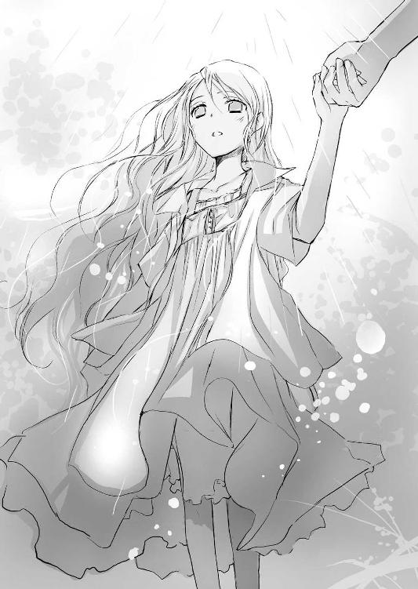
是光と並んで手をつなぎ、雨の音を聞きながら、万感の想いでつぶやく。
花の色を、
木々の香りを、
そこを吹き抜ける風の涼しさを、大地をうるおす雨の恵みを、想像ではなく、じかに見て、ふれて、感じてほしい。その素晴らしさを知ってほしい。
世界が美しいと知ってほしい。
体で、心で、味わってほしい。
そう思っていたの？
「ああ、そうだ」
是光が――ヒカルの友達が、断言する。
まるでヒカルがこの場にいて、優しくうなずいてみせたかのように――ちょっと視線を横に向けたあと目をなごませ、夕雨のほうを見て、堂々と、喜ばしげに。
――そうだよ、夕雨。
是光を通して、ヒカルの声が聞こえたような気がして、是光の向こうに微笑むヒカルの姿が見えたような気がして......胸に、あたたかな思いが込み上げる。
「これが、ヒカルの約束？」
是光は急に切ない眼差しになった。
胸が締めつけられるような目でじっと夕雨を見つめて、少し沈黙したあと。
「ああ......そうだ」
心の中でなにか結論を出したように、力強い声で言った。
「大事な、約束だ」
是光の頰は厳しく引きしまり、目は普段より大人びていて、夕雨の知らないなにかを知っていて――それがもたらす痛みに一人で耐えているようで、夕雨の心をひどく搔き乱した。
二人で同じ雨に濡れて、同じ景色を見ているのに、一人で是光の訪れを待っていたときと同じ淋しさが込み上げてきて、その淋しさを埋めたいと強く願うような。
（この気持ちはなに？）
切ないような、焦れったいような、甘くて苦しくて、不安な――。
（赤城くんは、どうして、わたしに会いに来てくれたの？ わたしは赤城くんにひどいことを言ったのに、どうして、あんなに必死に呼びかけてくれたの？ ヒカルの約束をはたすため？ それだけ？）
ドアを開け、その向こうに熱い目をした是光が立っていたときに感じた震えと衝動が、喉に、瞳に、指先に、どんどん込み上げてくる。
つないだ指先に、ぎゅっと力を込めると、是光はびっくりしたように夕雨のほうを見た。
是光の赤い髪はぐっしょりと濡れ、額からも頰からも雨粒がしたたっている。
夕雨にシャツを貸したせいで、Ｔシャツがぴったり張りついて、寒々しい。
つり上がった眉の下の目が、困ったように夕雨を見つめている。
夕雨を不機嫌にさせているのではないかと――迷うように唇を動かすが、呻き声が漏れるだけで言葉にならない。
そんな不器用さを、夕雨は心細くて泣きそうになりながら、見つめ返していた。
（赤城くん......わたしは――わたしはね）
是光はまだ唇をぎこちなく動かし、弱りきった苦しそうな眼差しで夕雨を見おろしている。
相手が恋をしたら、目を見ればわかるのだと、ヒカルは言った。
（わたしは、赤城くんのことが――）
ふれあう指に、是光のほうからも力がこもる。是光の手はぐっしょり濡れている。これは雨？ それとも汗？
夕雨も負けないくらい緊張している。
それでも今、自分の中であふれそうになっているこの気持ちが〝特別〟なものであることを、必死にその瞳で告げた。
逢いたくて、逢いたくて、たまらなかったこと。
ヒカルにも頭条にも、他の誰にも、こんな切なくてもどかしい気持ちは抱かなかった。
鼓動が速すぎて息が苦しい。見つめすぎて、目が熱い。
（赤城くんのことが――）
是光も、しだいに熱に浮かされたような目になる。是光に握りしめられている手が千切れそうに痛い。
けど、彼も余裕がないのだとわかって嬉しくて、熱い目で見つめられると心の中が甘いものでいっぱいになって。
（ああ、ヒカル......恋をしている相手は、目を見ればわかるって本当ね。ううん、目だけじゃなくて、眉も、頰も、唇も、指も、吐息も――）
是光の瞳の中で、燃えるもの。
切なそうに寄せた眉に、朱色に染まった頰に、震える唇に、そこから吐き出される苦しげな息に。指に感じる痛みに。
そのすべてに、是光の気持ちが表れている。
夕雨はうるんだ目で微笑んだ。
（同じね、わたしたち）
幸せな気持ちで顔を上へ向け、唇をほころばせる。近くにあるその目を――愛おしいその目を、じっと見つめる。
誘惑するって、きっとこういうこと。
相手の心をもっと引き寄せたい――触れあいたい、感じたい、ひとつになりたいと、強く求めること。
夕雨が唇をほころばせた瞬間、是光が切なそうに目を細め、そのあとおずおずと顔を近づけてきた。
つないだ指に、いっそう力がこもる。
夕雨の指は痺れて、もう感覚がない。
けど心は歓喜であふれている。
夕雨の心が、是光の心を、引き寄せる。
ぎこちなく、唇が重なる。
濡れたやわらかな感触。とても冷たくて、汗と雨の香りがして。
まぶたを閉じ、とろけそうな感覚に身をゆだねる。不安で、怖くて、恥ずかしくて、でも嬉しくて、愛しくて、幸せで。
ただ幸せで......。
――きみもいつか恋の歓びを知るよ、絶対だ。
もう地上にはいないヒカル。
けど、何故か近くで、あの優しい目で見守ってくれているような気がして、夕雨は心の中でつぶやいた。
（ヒカル、わたしは恋をしたわ！ あなたの友達に、恋をしたわ！）
ありがとう、ヒカル。
わたしに、たくさん花の話をしてくれてありがとう！ わたしに、この〝青〟と、この花たちを見せてくれて、ありがとう！
わたしは、強くなりたい、ううん強くなる。
きっと――きっと、強くなる。
目を開けたとき、雨はやんでいて、雲の間から射し込む光が公園をまぶしく照らしていた。
それは、ヒカルの最後の贈り物のような気がした。
――さよなら、夕雨。この先きみの瞳に、もっとたくさんの素晴らしい景色が映ることを願っているよ。
◇ ◇ ◇
ねぇ、是光。
ぼくがきみに夕雨のことを任せっきりにして、ずっと口をつぐんでいたのは、決してきみがはじめての恋に右往左往する様子を眺めて、楽しんでいたわけじゃなかったんだよ。
ぼくはそこまで意地悪でも腹黒でもないし、もし、たった一人の友達からそんな風に誤解されているとしたら、大いに心外だ。
え？ 友達なら、幽霊のふりとかしてんじゃねー、わかったような顔して傍観決め込んでねーで、とっとと力を貸せって？
仕方ないよ、〝ふり〟じゃなくて、ぼくは正真正銘、幽霊なんだもの。
それに、ぼくがきみに夕雨をゆだねたのは、夕雨に愛情を持っていなかったからじゃない。
その逆だよ。
夕雨は、ぼくの恋人ではなかったけれど、大事な女の子だったし、絶対に幸せになってほしかった。
だからこそ、ためらっていた。
夕雨にとっての幸せがなんなのか、あの部屋の外へ連れ出すことが夕雨にとって本当に最良でありえるのか、ぼくは死んだあとも、答えを出せずにいたんだ。
だって、ぼくと夕雨は、根っ子の部分でとても似ていたから。
二人とも、傷つくことも、傷つけることも恐れていて、閉ざされた場所で、静かで変わらない平和な時間を過ごすことを望んでいた。
ぼくは夕雨を、求めない。
夕雨もぼくを、求めない。
ただ二人が、そのままの形で、そのままの距離で、そこにあるだけ。
ぼくらの関係は、どこまでも優しくおだやかで、許しあい受け入れあえる相手がいるということに、お互いが救われていた。
求めすぎることに疲れたときや、求められたものと同じだけのものを返せないことに痛みと空しさを感じるとき、ぼくは夕雨のもとを訪れ、あの永遠の停滞に癒されていた。
とても優しい時間だった。
だから、あの部屋から出たくないと願う夕雨の気持ちが、ぼくには苦しいほど理解できたし、それが悪いことだとも思わなかった。
夜にしか咲けない花もある。
太陽のまぶしい光よりも、冷たい月の輝きを浴びて白く美しく香る花が不幸だなんて、誰にも決めつけることはできない。
夜の闇が花を囚えているのではなく、花のほうが夜を慕って、そこで生きることを願うのなら、それがその花にとっての幸福なんじゃないか。月の下でひっそりと咲き匂う健気な花を、まぶしい日射しにさらして苦痛を与え、枯らしてしまうほうが、罪悪なんじゃないか。
けど、ある事情から、ぼくはお気楽なハーレム皇子のままではいられなくなってしまった。
そのへんのことは、申し訳ないけど、今はきみにも話せない。
まだぼくの中で整理がついていないし、話せば、ぼくも一緒に混乱してしまうだろうから。
ひょっとしたら、いつかきみに長い物語をする日が来るかもしれないけど......。
うん......。ゴールデンウイークの前に、ぼくが無茶をやって、俊吾さんたちをあきれさせていたのは、そのせいだ。でも、本当にこれ以上はよそう。
ともかく、予期せず訪れた転換期によって、ぼくは女の子たちと別れて、葵さん一人と真面目につきあおうと決意するに至った。
それはきみも知ってるね。え？ 乗馬コースで、女とキスしてたのは浮気に入らないのかって？ あ、あれはその！ 不意打ちで......それに女性からのキスを人前で露骨に拒否したりできないだろう。相手に恥をかかせちゃう――って、本当に浮気じゃないってば！
えーと、話を戻そう。つまり、俊吾さんから夕雨と別れるよう頼まれたとき、ぼくはもう、夕雨とお別れしなければいけないことは、わかっていたんだ。
だから、俊吾さんにも、夕雨を外の世界へ返すと約束した。
正直、難題だった。
はじめに言ったように、ぼくはあの部屋にとどまり続けたいと願う夕雨の気持ちに、共感していたから。
多分、ぼくでは無理だったと思う。
あるがままの花を、ぼくは愛する。
その花のすべてを受け入れる。
相手の望みどおり振る舞い、一番欲しい言葉をかけてあげることがぼくにはできるし、それはまたぼくの心からの望みでもある。
けど、そこがぼくの限界だ。
相手にとって、ただただ心地よい存在であり続けるということは、裏を返せばとても臆病で卑怯なことだ。
それは衝突を避け、責任を避け、そこから生じる痛みを避け、進歩を避けるということでもあるのに――すべてを肯定するぼくには、ひとつの否定をする勇気さえない。
その否定は相手の心を切り裂き、ここまで育ててきた愛情を壊すかもしれない。
肯定し続けることでお互いに安らかでいられるなら、ぼくは決めるべきではないのではないか。
要するに、ぼくが素っ気なく見えたのは、自分に自信がなかったせいだと白状したら、ちょっとは機嫌を直してくれるかい？
信じられないって？ おまえはいつもへらへらしててお気楽で、見境なしに女を口説くハーレム皇子だろうって？ そりゃ確かに、女の子を楽しませる方法は、きみよりだいぶ知っているけど。
でもね、是光。
ぼくは本当に、自分の判断に自信が持てずにいたんだよ。
一人で根暗くうじうじと考え込んでいた。
きみに、夕雨を失わない方法を告げるのも、だいぶ迷った。きみがもし、ぼくと同じように迷いの迷路に閉じこめられてしまったら。ぼくが示したもうひとつの道を選択してしまったらって――。
けど是光、きみはいつもぼくの限界を超えてゆく。
それはもう、驚くほど大胆に、がむしゃらに、まっすぐに。
否定も破壊も恐れず、傷つけあいながらも相手に関わろうとし、その相手の手を決してはなさず進んでゆく。
だからぼくは、ぼくを癒してくれた大事な花を、きみに託した。
夕雨がきみに惹かれることも、予想していたよ。
だって夕雨はぼくに似ているし、ぼくの一番の友達を、好きにならないはずがない。きみの良さが、夕雨には絶対にわかるはずだって。そして、きみなら夕雨を変えてくれるって。
その期待に、きみはこたえてくれたね。
夕雨に、あの景色を見せてくれてありがとう。
外の世界には痛みや苦しみもあるけれど、それだけじゃなく、美しい花も咲いていることを教えてくれてありがとう。
夕雨は、きっと強くなれる。
これからは自分の意志で外へ出ていって、広がり続ける世界の中で、美しいものを見つけ出すことができる。
全部きみが夕雨にしてあげたことだよ。
......ねぇ、褒めているのに、なんでまた泣いているの？
失恋したんだから泣かせろって？
忠告したよね？ 夕雨の心を縛りつけている怨霊を祓って、部屋の外へ連れ出すことは、夕雨を失うことだって。
夕雨は、綺麗な夢みたいな女性だったんだよ。
内気で優しくて、恥ずかしがり屋だけどおっとりしていて、たまに子供みたいに無邪気で、心を許したら、夕顔の蔓が伸び、巻鬚がからみつくように、一途に寄り添ってくる。
女性が、ぼくに都合のいい幻想を抱くように、どんな色にも染まる白い花だった夕雨は、男の都合のいい幻影だった。
夜の中でひとときだけ花開く奇跡みたいな、あやふやで儚い存在だったんだよ。
夕雨に恋をしたきみにも、それはわかるだろう。
外へ出たら、夕雨はあのままの夕雨ではいられないって。
朝が来れば花は萎んで枯れてしまう。幻の少女は、朝の露のように消えてゆく。
きみは、それでもいいって、ぼくに向かって断言したじゃないか。
あのとき、きみがもうひとつの道を選ばなかったことも、ぼくの忠告をあざやかに拒絶したことも、ぼくを感動させたんだよ。
幽霊に感動とかされても嬉しくないって？
今、泣いとかないと明日泣くって？
仕方ないね、肩を貸してあげるよ。
すり抜けちゃうって？ そんな腕を振り上げて泣きながら怒らなくても、眉がぴくぴく動いて怖いよ。
いいから、おとなしく借りておきな。
きみは、頑張った。
やっぱり、きみはヒーローだった。
夕雨もきみに、恋をしていたよ。
ねぇ、是光。恋はひとときの幻だけど、恋したときに感じる甘さや幸福は幻じゃない。花が失われても、色や香りはいつまでも心に残るように。
だからぼくは、ぼくを幸せにしてくれた花たちに、優しいさよならをあげたい。
勝手でも、自己満足でも、彼女たちが泣いたり苦しんだりせず、晴れやかな気持ちで未来へ進めるように。とびきりのさよならを贈りたい。
ぼくが、地球にいる間に――。
「荷物、それで全部か」
「......うん。思いきってあれもこれも処分したら、これひとつに収まっちゃった」
夕雨が、あざやかな空色のスーツケースとペット用のキャリーバッグを持ち上げて、明るく笑う。
是光が夕雨の手を引いて駆け出した、数日後――。
空はすがすがしく晴れ渡り、まぶしい日射しが是光たちの上に降り注いでいる。
夕雨は、アパートの前でタクシーを待っていた。
このあと空港へ向かう。
学校をやめ、母親の暮らすオーストラリアへ行くと、夕雨が自分で決めたのだ。あちらの学校に入学し直すという。
「そっか......まぁ、旅立ちは身軽なほうがいいよな」
是光は普通の声で話そうとしながら、やっぱり鼻の奥がツンとして、目も油断するとうるみそうで困った。
――怨霊から解放されたら、夕雨はオーストラリアへ行ってしまうよ。
夕雨を守ると朝衣に向かって宣言したあの日、ヒカルは是光にはっきりそう告げた。
――夕雨の母親は、前からオーストラリアへ来て自分と暮らすよう言っていた。夕雨はずっと拒んできたけど、父親からの仕送りはとっくに止まっているんじゃないかな......。
夕雨にはオーストラリアへ行く以外、道はないのだと。
けど、アパートの外へ出ることを恐れている夕雨は、言葉も通じない外国の地で、また辛い思いをするよりも、あの部屋で死んでしまいたいと願っているだろうとも。
――きみがなにもしなければ、今のままでいられるかもしれない。
話したくないことを無理に口にしているような力のない声で、憂鬱そうな暗い目で、ささやいた。
――夕雨の両親も、さすがに娘が本当に飢え死にするまで見過ごしたりはしないだろうから......援助を続けるだろう。きっと夕雨は幸せなままいられるし、きみも、夕雨を自分だけの夕雨にすることができる。
是光はヒカルをじっと見つめ返し、夕雨と会えなくなってもかまわない。夕雨がこの先、過去を思い出して泣かずにすむように、怨霊を退治すると答えたのだ。
夕雨とも、公園で花を見た日にベンチに並んで座り、話した。
『......お父さんからの仕送りは、先月で止まっていたの。新しい奥さんに子供が生まれたから、もうわたしに仕送りをする余裕はない。すまない、お母さんのところへ行ってくれって、電話で言われたわ』
雨上がりの澄んだ日射しの中で、夕雨は苦しそうにうつむいていた。
『わたしは、お父さんにも、お母さんにも返事をせずに、いじけていたの。二人とも新しい家族やお仕事のほうが大切で、わたしを本当に心配してくれる人なんてもう誰もいないから、このまま飢え死にしてもいいって思ってた。眠ったまま死にたいって......。赤城くんの言うように、わたしは......現実から逃げていたの』
それでも小さな声で一生懸命に話していた。
だから是光も隣で一生懸命に耳を傾けた。
『オーストラリアへ行っても、お母さんとうまく暮らしていけるのか、わからない。お母さんは、すごくてきぱきしていて現実的な人だから......わたしのことが焦れったいみたいで、もっと積極的にならなきゃダメだとか、外へ出てスポーツでもしなさいとか、あなたは考えが狭いから交友関係を広げなさいとか、わたしが苦しくなることばかり言うから......。日本の学校でも浮いていたのに、向こうの学校ではもっと大変なんじゃないか、またいじめられるんじゃないかって思うと、すごく怖い』
つないだ手が震えていた。けれど、ぎこちなく顔を上げて、
『わたしは......もう逃げるのはやめる。赤城くんが、わたしをあの部屋から連れ出してくれたから、外にはわたしの想像よりも綺麗なものもあるって、教えてくれたから』
一生懸命に――最後まで一生懸命に、自分の気持ちを、是光に伝えた。
『お母さんのところへ行くね。そこで、今度は逃げないで頑張ってみる』
だから是光も言った。
行かないでほしいという気持ちをこらえて、精一杯激励を込めて。
『おう、行ってこい』
（中学の修学旅行だって大阪どまりだったのに、いっきに南半球までいっちまうのかよ。季節が真逆じゃねーか。遠すぎるぜ、くそっ）
昨日、さんざんヒカルに愚痴って泣いたのだから、今日は泣くものかと、目と口の端に力を入れて耐える。そんな是光を、傍らにいるヒカルが、大人びた顔で見守っている。
昨日、後悔している？ と優しく尋ねられて、
『バカ、してねーよ。だれがするか！ 後悔なんて、全然しねぇ』
と鼻水まみれで答えたこと。
ここで泣いたら台無しだ。ヒカルにもまた、見かけによらず泣き上戸だとからかわれる。
それでも、道の向こうからタクシーが近づいてきた瞬間、胸がしめつけられた。
夕雨もびくっとし、ためらうように是光のほうを見る。
荷物を持つ手が震えていて、眉が下がっていて、頰が青ざめていて。
是光は泣きそうで――夕雨もやっぱり泣きそうで、迷いのにじむ声でつぶやいた。
「赤城くん......わたし、本当は......」
タクシーが、夕雨の前で止まる。
夕雨は眉毛を下げたまま、目に涙をいっぱいためて是光を見つめている。
今、引き留めたら――。手をのばして、夕雨の手を握りしめて、引き寄せて、行くなと言ったら――俺がどうにかするから――守ってやるから、ここにいろと言ったら、夕雨はうなずくかもしれない。
是光のそばに、ずっといてくれるかもしれない。
そんな嵐のような衝動が、体を駆けめぐる。
「本当は、わたし......」
うるんだ瞳も、青ざめた唇も、不安で震えている。
言葉もろくに通じない遠い異国の地で、味方もなく一人きりで、夕雨のような内気な少女が平気なわけがない。怖くて、怖くて、たまらないはずだ。
今なら間に合う。失わずにすむ。
行くなと、一言口にすれば――。
――もう逃げるのはやめる。赤城くんがあの部屋からわたしを連れ出してくれたから。
雨上がりの公園で、夕雨が是光に小さな声で一生懸命に伝えた言葉が、耳の奥で聞こえた。
部屋の隅で毛布をかぶって震えていた夕雨が、はじめて自分の意志で決めたこと。
是光はこぶしを握りしめ、叫んだ。
「向こうでっ！ なんか困ったことあったら、すぐに言えよっ！ メールでも携帯でも、いいから。一人で抱え込んで引きこもるんじゃねーぞっ！ おまえがどこにいても、守るから！」
夕雨が顔をゆがめる。
「赤城く......」
本当は、夕雨が学校へ来られるようになって、友達を作って、のびのびと笑いながら過ごすのを、こっそり見ていたかった。
一緒に昼飯を食うとか、登下校するとか、そんな大それたことは望んでいなくて、本当にただ同じ空間で、夕雨の幸せな姿を見ていられたら、それだけでよかった。
それだけが、是光のささやかな望みだった。
でも、後悔はしない。
怨霊を退治するために力を尽くしたことも、夕雨の手を引いて駆け出したことも。
あの公園で、ぎこちなく唇をあわせたことも。
今、旅立つ夕雨を、送り出すことも。
絶対、絶対、後悔しない！
夕雨も、是光と同じように、こぼれそうな涙を目を見開いて押しとどめ、手をぎゅっと握りしめる。
「うん、ありがとう。わたしは大丈夫だよ」
震える声で精一杯明るく告げたとき、夕雨が持っていたペット用のキャリーバッグがかたかたと揺れた。
「え......？ こるり？」
蓋が開き、こるりがなめらかな動作で飛び降りる。そのまま是光のほうへ駆けてくる。
こるりは是光とヒカルのちょうど手前で止まり、尻尾を大きく揺らして振り返り、お座りをした。自分はここから是光たちと一緒に夕雨を見送るというように、瑠璃色の瞳で夕雨を見上げる。
夕雨はまた一瞬だけ、あの狭い部屋で水色の毛布にくるまっていたときと同じ、儚げな心細そうな表情を浮かべた。けど、すぐになにかに耐えるように、唇を嚙んだ。
そうして、淋しさと感謝のこもった声で言った。
「こるりとも......お別れなのね。今まで......わたしが弱虫だったせいで、外に出してあげられなくて、ごめんね。ずっと一緒にいてくれてありがとう......っ」
こるりが澄んだ声で鳴く。もうあなたは弱虫じゃないわ、というように。
こるりに、是光に、ヒカルに見送られ、夕雨がタクシーに乗り込む。
窓から是光に向かって言った。
「赤城くん。わたしはもう夜に咲く花じゃない。太陽に向かって花びらを広げる花になるの」
涙のいっぱいたまった明るい目で、笑う。
「次に出会うとき、きっとわたしは笑い上戸になっているわ！」
是光も笑いたかった。
けど、口の端にいくら力を入れても、頰を必死に引き上げようとしても、思うように動いてくれなくて、喉も目もどんどん熱くなって、塩辛い水があふれそうで、こぼれそうで、ただただ力を入れて耐えるのが精一杯で、
「お、おう」
ぐしゃぐしゃの顔で、ぶっきらぼうにそう言うのが精一杯で――笑いたいのに、笑って少しでも安心させてやりたいのに、どうしても、どうしても、笑えなかった。
タクシーが遠ざかる。夕雨の姿も小さくなってゆく。
（辛いことがあったら、本当に、言えよ。飛んでいくから――。けどっ、けど――そんなこと、ずっとずっと起こらなければいい！ 一生会えなくても、夕雨が幸せなほうが千倍いい。だから、メールも電話も、いらねーから！）
こるりに足元によりそわれ、ヒカルに肩にそっと手を回されて、
「～～～～っ」
やっぱり少し、泣いてしまった。
◇ ◇ ◇
翌日。
眉をいつも以上につり上げ、頰をこわばらせ口をひん曲げ、真っ赤な目をして登校した是光を見て、学園の生徒たちは一斉に身を引いた。
校内では〝怨霊より怖いヤンキー〟と、すっかり評判だ。
「怨霊と、素手でタイマンしたんだって」
「怨霊もヤンキーにびびって、逃げ出したって」
誰が言いはじめたのか、そんな噂まで広まっている。けど、今は気にしない。
休み時間、屋上のフェンスで、夏の気配をはらんだ風に吹かれる。
青い空に浮かぶ、飛行機雲。
夕雨はもう、あちらに着いただろうか。
儚げに微笑む〝幻の少女〟は消えてしまった。
それでも、夕雨のあの輝くような笑顔を見ることができて、淋しいけれど満足だった。
多分、あれが是光の初恋だったのだ。
こんな激しい通り雨のような甘さと切なさを、ヒカルはどれくらい乗り越えてきたのだろう。
是光の隣で、ヒカルもおだやかで淋しげな眼差しで、遠くの景色を眺めている。
――優しいさよならをあげたい。
とヒカルは言った。
彼が愛した花たちに、懺悔でも罪滅ぼしでもない、ただ優しいさよならだけを残してゆきたいと。
たくさんの花。
たくさんの恋。
そのひとつひとつを心から愛おしく思っていたこと。
かけがえなく、大切に感じていたこと。
きっと、単なる女好きのお気楽な少年ではないのだ。
（少しだけ、こいつのことがわかったような気がする）
迷いも、臆病さも、あること。
けど、いつも相手のことを思っていること。微笑みも、言葉も、自分ではなく誰かの心を癒すためのものであること。
そして根っこの部分に、青ざめた孤独の海が凪いでいること。
――ぼくと夕雨は、似ていたんだ。
――閉ざされた場所で、静かで変わらない平和な時間を過ごすことを望んでいた。
何故、ヒカルが幽霊になっても、この地にとどまり続けているのか。
ときおり、淋しそうな遠い目をするのか。
まだまだわからないことがたくさんある。
でも......。
（ヒカルが地球にいる間、最後までつきあおう）
フェンスにもたれたまま、一筋縄ではゆかない友人に語りかける。
「成仏に百メートル近づいたか」
「うん」
ヒカルも光に透けて金色に見える髪を、そよそよと揺らしながら、おだやかに答える。
「なら、笑う練習しなきゃな」
「そうだね、きみが化学室で女の子たちに見せた、あんな笑顔で見送られたら、来世までトラウマになりそうだよ」
「るせー、それはもういいだろ」
「あの子たち、怨霊より、きみの笑った顔のほうが怖いって」
「言うなー！」
楽しそうにからかうヒカルに、赤い顔でわめいてみせる。
ちゃんと、笑えるようになろう。
いつかまた大切な人との別れが来たとき、相手の心に光をともせるように。
別れも痛みもすべてを飲み込んで、それでも旅立つその人に祝福を贈れるように。
自分は大丈夫だと、揺るぎのない強い笑顔で伝えられるように。
「ねぇ、黄色の薔薇の花言葉を知ってるかい？ 大輪のやつじゃなくて、小ぶりの可愛いやつ」
「んなの、俺が知るわけねーだろ。なんだよ急に。聞いてほしけりゃ、もったいぶらずにとっとと言え」
「はいはい」
気恥ずかしさから、むっつりする是光に、ヒカルがお手本みたいな、とびきりの――まぶしい笑顔を浮かべた。
「笑って別れましょう、だよ」
◇ ◇ ◇
「奏井さん、オーストラリアのお母さんのところへ行ったそうですね」
裏庭の竹林で、憂いのにじむ眼差しで石碑を見おろしていた頭条俊吾に、近江ひいなが神妙な口調で、話しかけてくる。
「赤城氏は、〝約束〟を、はたしてくれたわけですね」
「......そうだな」
振り返らず、低い声で答える。
「ヒカルの君のお友達っていうのも本当っぽいですし、他にもイロイロとヒカルの君から聞いていそうですよ。刺激すれば、もっとしゃべってくれるかもです」
速いテンポで歯切れ良く投げつけられる言葉を、俊吾は硬い表情で止めた。
「メールはもう流さなくていい。あれはあまり上品ではない」
「犯人をあぶり出すには、いい方法だと思ったんですけど。それに、奏井夕雨に関するメールを広めたのは、本当に自分じゃありませんよ。もしそのことで自分を疑ってるなら......」
「疑ってはいない」
「......赤城氏の前で黒幕扱いしたことも、ひょっとして根に持ってます？ あれは赤城氏から情報を引き出すための演技だったんですケド～。それに、朝の宮にも、自分とセンパイは無関係だって印象づけられて、一石二鳥だと思って。自分、熱演しすぎでした？」
けろりとした声で尋ねてくる。
「いや、根に持った覚えもない」
「ですよねー、センパイは、そんなに器、小さくないですもんねー」
わざとらしくはしゃいだあと、急に人が変わったように真面目な口調になる。
「奏井夕雨のメールをばらまいたのは......ヒカルの君を心から愛していた人だったんじゃないかと、自分は思います。そう、きっと、殺したいほどに」
今、ひいなは、どんな表情を浮かべているのだろうと、俊吾は思った。
あどけない顔に似合わない、大人びた冷たい顔だろうか。
それとも、この状況を楽しんでいる、無邪気な少年の顔だろうか。
少しの間、考えてはみたが、振り返って確かめる気にはなれなかった。
ただ――。
別荘地の乗馬コースでヒカルと会って、俊吾のほうからからんでしまったとき、ヒカルがひどく虚無的な儚い笑みを浮かべたことを、思い出していた。それからヒカルの手首にあったあの傷も――。
（この場で口にすることではないな）
もうしばらく、自分の胸にしまっておこう。
それはこの先、頭条と帝門の関係を変える切り札になりうるかもしれないから......。
そうだ。今は、奏井夕雨のことで感傷にひたっている場合ではない。
集める手札は多ければ多いほどいい。そのために、近江ひいなの存在も、黙認しているのだから。
ひいなのほうを一度も見ないまま、教室に戻るため歩き出す。
後ろで、ひいなが憧れに満ちた声で小さく......本当に小さく、
「......ウチはずーっと味方やし。お兄さん」
と、つぶやく声が聞こえたような気がしたが――。
聞こえなかったことにして、振り返らなかった。
◇ ◇ ◇
振り向くと、帆夏が心配そうな目をして立っていた。
「授業......はじまっちゃうよ」
ぎこちなく是光に告げる。
夕雨が学校を辞めたことも、昨日オーストラリアへ出立したことも、帆夏にメールで知らせてあった。
帆夏はそのことにはふれず、おずおずと是光の隣に並び、フェンスに手をかけた。是光がこのまま授業をサボってここにいても、帆夏は黙ってつきあってくれそうだった。
（やっぱり......いいやつ、だな）
教室に戻ろうぜと、是光が言いかけたとき、帆夏が思いつめたような表情で是光のほうへ顔を向けた。
「？」
怪訝に思う是光を弱気に見つめ、震える声で――真剣な声で、言ったのだった。
「こんなときに、ゴメンね......。あたし――あんたのことが、好きみたい」
この恋を幻で終わらせたくなかった。
変わりたいなんて、あなたのエゴで許されなかった。
それはあの狂おしい日々への裏切りだ。
あなたは、変わっちゃいけない。
あなたも、わたしのこの想いも、永遠でなければいけない。
だから、
だから、
ヒカル、わたしは、あの日、あなたの後ろに立って――。
帝門ヒカルにはじめて会ったのは、俊吾が平安学園初等部の二年生に在籍していた、冬のはじめ頃だった。
親の用事で、親戚の左乙女家を訪れた際、俊吾のはとこにあたる葵と一緒に花壇に球根を植えていた、綺麗で愛くるしい子供がヒカルだった。
ふくふくとした頰をピンク色に染め、長いまつげに縁取られた大きな瞳を無邪気に輝かせ、泥だらけの手で球根の周りに土をかぶせてゆく。
やわらかそうな薄茶色の髪が、冬の澄んだ光を浴びて金色に輝く様子は、まるで絵本の中の天使のようだった。
（葵と一緒にいる、あの女の子は誰だろう）
人見知りの葵が、朝衣以外の子と一緒にいるのは珍しい。
葵は真っ赤な顔で、口を強く引き結んでいて、なにか怒っているようだった。
隣の女の子が、葵のほうを見て屈託のない笑顔で話しかけると、慌てたように、つんと横を向く。
なのに、その子が向かい側で同じ作業をしている朝衣と話しはじめると、恥ずかしそうな目でおずおずと隣を盗み見て、また赤くなってそっぽを向くのだった。
葵も朝衣も、俊吾のひとつ年下で、初等部の一年生だ。
あの子も二人と同じ年頃だろうか？
学校の友達か？
気がつけば、その女の子のことばかり目で追っていた。
葵も、その友人の朝衣も、さらさらこぼれる黒髪が魅力的な、非の打ち所のない美少女たちだ。そんな二人と一緒にいて見劣りしないどころか、三人の中で一番光っている。
これまで自分の周りにいた女の子たちにはない不思議な引力のようなものを、俊吾は感じた。
すると、その子が立ち上がり、庭にある物置のほうへとてとてと歩いていった。
肥料の袋を持ち出そうとしているようで、両腕いっぱいに抱えるが、足がよろけてしまう。
「もぉっ、なにやってるんですか、ヒカル！ 危ないです！」
葵が赤く染まった頰をぷんっとふくらませて、走ってゆく。
それを、朝衣が子供らしくない冷静な眼差しで見送る。
俊吾は葵より先に、その子の後ろに辿り着き、そっと手を添えて肥料の袋を持って支えてやった。
大きな瞳がさらに大きく丸くなり、俊吾を見上げる。色は髪と同じ薄い茶色で、近くで見ると吸い込まれそうだ。
俊吾は、胸の奥がドキンと高鳴るのを感じた。
「女の子には無理だ。俺が持とう」
「俊吾兄様......」
葵も、俊吾がいきなり現れたので驚いている。それから、俊吾がその子を背中から抱き留めているのを見て、みるみる不機嫌そうになり唇を尖らせた。
きっと俊吾が、自分の目の前で別の女の子に優しくしたので、ヤキモチを妬いているのだろう。葵はまだ子供だから仕方がない。
自分も葵と一歳しか違わないのに、そんな分析をして納得していたとき。
「えっと、葵さんのお兄さん......？ ぼく、女の子じゃないよ」
見た目と同じくらい愛らしい、甘い声が、すぐそばで聞こえた。
（は？）
今度目を丸くし、口を間抜けに開いていたのは、俊吾のほうだった。
「ぼく、男の子だよ」
にこりと、天使のように笑いながら、その子が言う。
（男だって――！）
なんだかひどい詐欺にあったような気がして、俊吾はむっつりした顔で肥料を花壇まで運んだあと、「ありがとう」と可愛くお礼を言う男の子に、ろくに返事もせず、目もあわせず、そそくさと家の中へ待避したのだった。
再びその子を見かけたのは、年明けに開かれる、帝門家主催のパーティーの会場だった。
口から先に生まれたように騒がしい三人の姉たちが、
「ほら！ あの子が、〝生まれてきちゃいけなかった子〟よ」
と言うのを聞いて、そちらを見ると、子供用の半ズボンのスーツを着た彼がいたのだった。
ドレスアップした大人の女性たちに囲まれて、人見知りもせず愛くるしい笑顔を振りまいている。女性たちもみんな目を細めて、あれこれ話しかけている。
姉たちが野次馬根性丸出しで、
「えー、あの子が、〝ヒカル〟なの？ うそぉ、ちょ～可愛い」
「あの子が帝門の本宅に来たから、一朱さんとお母様は、おうちを出ていっちゃったんでしょう」
「じゃあ、あの子が帝門を継ぐの？ だって、あの子は〝生まれてきちゃいけなかった子〟なんでしょう？」
「でも、めちゃくちゃ可愛いよ～。あの髪の色も素敵！ 外国の王子様みたい。わたしもお話ししたーい」
「あなたって、本当にミーハーなんだから。で、でも、わたしも......ちょっと興味あるかも」
と、うるさくさえずりあうのに、俊吾はじっと耳をすましていた。
生まれてきてはいけなかった子のことは、俊吾も大人たちの会話を盗み聞いて、知っている。
困ったことになった、と大人たちはみんな眉をひそめていた。
（葵の家にいたあいつが、帝門ヒカルだったんだ......）
大人たちの様子から、不吉な暗い目をした子供を想像していたのに、実際のヒカルは光に包まれているように明るく輝いていて、母親ぐらいの年齢の女性たちとも、もっと年配の女性たちとも楽しそうに話し、彼女たちから可愛がられているようだった。
まだ子供だから、自分が置かれている立場がわかっていないのだろう。だから、あんなに無邪気に振る舞えるのだ。
そう。わかっていたら、とてもあんな風に清々しく笑えるものではない。
少女のような可愛らしい可憐な笑顔を見ていると、葵の家で会ったときの失態を思い出して、苦い気持ちになった。
生まれてはじめてときめいた相手が、男だなんて......。しかもあの帝門ヒカルだったなんて。
（もしかしたら、あれが俺の初恋......いや、断じて違う！ あれは間違いだ、ノーカウントだ！）
早めに性別に気づいてよかった......と、こっそり冷や汗をかいたのだった。
◇ ◇ ◇
そんな経緯があり、俊吾にとってヒカルはずっと気にくわない――けれど立場上無視しきれない、なんとも腹の立つ嫌な存在だった。
帝門は頭条の主筋にあたる。あんな女好きで考えなしの遊び人が、将来の上司だなんて最悪だと、いまいましく思っていた。
（なのに、まさかヒカルがこんなに若くに亡くなるとは......）
それも、亡くなったあとで、ヒカルに感謝する日が来ようとは......。
休日の自宅のキッチンで、俊吾は遅めの朝食の用意をしていた。サラダのレタスをむしる手を止め、物思いにふける。
奏井夕雨を過去の怨霊から解き放ち、あの朽ちかけたアパートの部屋の外へ出られるようにすると、亡くなる前日、ヒカルは俊吾に約束した。
その約束を、ヒカルの友人の赤城是光が引き継ぎ、はたしてくれた。
あとは夕雨が、旅立った先で新しい生活を楽しんで、明るく過ごしてくれればいい。
静かな竹林で一人きりで昼食をとりながら、幸せそうに満たされていた少女。
口数の少なさも、控えめな眼差しも、俊吾にはとても好ましく思えた。
我が儘でおしゃべりで軽薄で、弟を下僕としか考えていない凶悪な姉たちのせいで、俊吾の女性の好みは、とにかくおとなしいこと、無口なこと、従順なことに、なってしまっていた。
平安時代の昔、のちに三条帝となる東宮は、妃の綏子に氷を持たせ、私のことが好きなら、私がいいと言うまで手をはなしてはいけないと命じ、そのままそのことを忘れてしまった。気がつくと、氷は溶け、綏子の手はすっかり紫色になっていたが、彼女はひとことも文句を言わず、黙って氷を持ち続けていたという。
これこそ理想の女というものだと口にすれば、世の女性から大ブーイングを浴びるだろう。姉たちにも殴り倒されそうだ。
それでも、そういう極端なほどおとなしい女性に惹かれてしまうのだから、仕方がない。
けど残念なことに、そうした女性は俊吾に対してたいてい萎縮し、親しくなる前に逃げてしまう。
そもそも強烈な小姑が三人もいて、自分は将来まともに嫁をもらえるのだろうか。
たとえ両想いになれても、そんなおとなしい奥ゆかしい女性は、あの姉たちに睨まれただけで気絶して、この話はなかったことに......と破談になりそうだ。
そういえば、あの綏子も、プレイボーイの源頼定に言い寄られて、そのまま彼とデキてしまい、子供までみごもってしまうのだったな......。
夕雨のアパートにヒカルが通っていると知ったときの、なんともいえない腹立たしさや敗北感がよみがえり、急に胃がむかむかした。
（やはりヒカルに感謝などすべきではないのかもしれん......。そもそもあいつの定期的な訪問が彼女の引きこもりを増長したとも考えられるわけで、しかもその一方で複数の女とふらふらつきあっていたわけで......くぅぅ、あいつの悪行なら、いくらでも思い出せるぞ）
と、怒りのままに人参をごりごりすりおろしたとき。
「俊吾兄様！」
さらさらと揺れる長い黒髪に清楚な白いリボンを結んだ美少女が、可愛らしく頰をふくらませて、やってきた。
はとこの葵だ。
先日十七歳の誕生日を迎えた葵は、あどけなさの中に大人の女性としての情感が加わり、ますます美しくなった。
といっても、俊吾にとっては、いつまでたっても年下の可愛いはとこなのだが。
自分が末っ子で三人の姉たちに苦労させられているため、俊吾はこの葵を、実の妹のように溺愛している。人の上に立つ人間は、生前のヒカルのようにむやみに愛想を振りまくものではない。それでは部下になめられる。が、昔からどうしても葵にだけは、甘い顔を見せてしまうのだった。
「おはよう、葵。いきなり訪ねてくるなんてなにかあったのかい？ あ、ちょうどキッシュが焼き上がったようだよ。鳥とハーブのやつだ。葵も好物だろう。それと、洋なしのコンポートも、ちょうど作り置きがあって」
料理は俊吾の趣味だ。材料にもこだわりを持ち、味も無論自信がある。
ところが、
「それはどうでもいいです！」
葵にあっさりスルーされ、軽くショックを受ける。
「それより、みんな、赤城くんのことを怨霊より凶悪とか、怨霊を土下座させて足蹴にしたとか、怨霊を丸かじりしたとか、ひどいですっ！ 朝ちゃんも、『あんな男、怨霊の国へでも行って、永住すればいいのよ』なんて冷たいですし」
と、葵は興奮してまくしたててくる。
どうやら、校内で上昇するばかりの赤城是光の悪評に、憤っているようだが......。
「あんなめちゃくちゃなことを言われたら、赤城くん、きっと傷つきます、可哀相です。朝ちゃんは『あの男に、そんな繊細な神経があったら、とっくに自分を恥じて、押し入れの中にでも引きこもって、学校へも出てこられないでしょうに、残念だわ』なんて言うし！ いくら赤城くんが嫌いだからって、言ってよいことと悪いことがあります！ もう朝ちゃんには、赤城くんの話はしませんっ。俊吾兄様、赤城くんのこと、なんとかなりませんか？」
頰をふくらませたまま、真剣な眼差しでじっと見上げる。
普段は頼りになる朝衣があてにならず、俊吾のところへ来たらしい。
それにしても、葵の幼なじみで、親友兼保護者的立場でもある朝衣に、箱入り娘の葵が反抗するとは。しかも、それが赤城是光を庇ってのこととは......。
葵は、ヒカルの婚約者だった。
他に大勢恋人を作って遊び回っているヒカルに対して、葵は、
『婚約は、お父様たちが勝手に決めたことで、ヒカルなんか大嫌いです』
と主張していたが、葵が子供の頃からずっとヒカルに恋していたことは、葵と親しい人間なら、誰でも気づいていたことだ。それもまた、俊吾がヒカルを許し難く思う理由の一つだった。
ヒカルが亡くなったとき、葵は葬儀でヒカルの遺影に非難の言葉を浴びせる騒ぎを起こし、俊吾も心配していたのだが、この頃は落ち着き、笑顔を見せるようになった。
わだかまりのあった美術部の部員たちとの関係も、改善されつつあるらしい。
それも朝衣が乗り出すことなく、葵自身の努力で。
前向きになった理由を、葵は、
――赤城くんが、ヒカルの誕生日プレゼントを、届けてくれたからです。
と、はにかむような、やわらかな笑みを浮かべて、答えていた。
夕雨だけでなく、葵も、あの男が変えたのか？
赤城是光について、認めたいような認めたくないような複雑な思いにとらわれる。そもそも彼は何者なのだろう。
ヒカルとは育った環境も、歩んできた道のりも、性格も、まるで接点がない。一体いつ、どうやって、ヒカルと友人になったのか。
ヒカルについて、どこまで知っているのか。
思索に沈み込む俊吾を、葵の声が引き戻す。
「俊吾兄様、ちゃんとわたしの話を聞いていただいてますか？ 赤城くんは、お顔がちょっぴり怖くて、口が悪くて乱暴そうに見えるけど、本当は優しくていい人なんです。遊園地でも、とても紳士的で......」
なにか思い出したのか、葵の頰がほんのり染まる。
嫌な予感が、俊吾の胸をかすった。
「そんなに心配するなんて、葵は赤城くんのことが好きなのか」
と、さりげない調子で探りを入れる。
とたんに葵は真っ赤になり、絶句してしまった。
それから視線を右に左に移動させ、頰を両手にあて、しばらくもじもじし、しまいにはうつむいて、
「......そんなこと、絶対......ありません」
掠れそうな小さな声で、つぶやいた。
そうして、また真っ赤に染まった小さな顔を振り上げて、
「赤城くんは、本当にいい人で......！ それにヒカルの友達で！ 優しくしていただいたので、ご恩返しがしたいだけで、で、ですから――赤城くんだけは、絶対、絶対、絶対に――ありませんっ」
と、何度も言った。
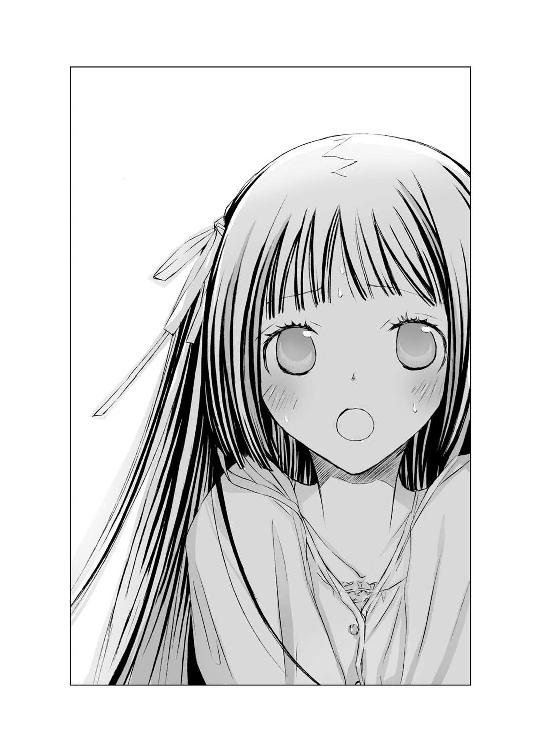
（これはマズい！）
嫌な予感が現実になりそうで、俊吾は青ざめた。
（葵、いかんっ。お兄ちゃんは、許さないぞ！）
心の中で、兄バカ丸出しで叫ぶ。
いいや、きっと葵は、ヒカルの死でまだ混乱しているのだ。お嬢様育ちで、ああいう野蛮な男と接したことがないから、カルチャーショックで、わけがわからなくなっているだけなのだ。
そう！ それは断じて恋ではない！
こんにちは、野村美月です！ 『ヒカルが地球にいたころ......②』お買い上げいただきまして、ありがとうございました！ 二話目は、予告通り〝夕顔〟です。
ネタ本の『源氏物語』に登場する夕顔は、薄幸な人ではありますが、おっとりした可愛らしい女性で、読んでいてきゅんとしてしまいます。
作中紹介したユウガオの花は、ぎりぎりまでヨルガオでゆくべきか迷いました。ヨルガオをユウガオと呼ぶこともあるようですし、外見のイメージはヨルガオのほうが神秘的でよいかなぁと......。本物のユウガオのほうは、ウリ科のせいか、どうも、おひたしとか漬け物といった単語が浮かんでしまって......（泣）。
けど、ヨルガオは明治に渡来した花で、平安時代にはありません。『源氏物語』で使われていたのは、ウリ科のユウガオのほうで――。それならやっぱり元ネタに忠実にゆくべきでは......ユウガオの花も、白くてふにゃっとしてて可愛いし、夕顔は雅なお姫様ではなく、中流なところが魅力でもあるし......。
と、さんざん悩んで、最終的にウリ科のほうになりました。一話目の巻末の予告イラストがヨルガオバージョンなのは、初稿がヨルガオだったからです。変えてしまってすみませんっ、竹岡さん。ちなみに、〝葵〟で紹介したタチアオイも、双葉葵が正解のようなのですが、花があまりにも地味で、腹をくくってタチアオイを採用したのでした。
『ヒカル～』は、花がたくさん出てくるので大変です。図鑑を見ても、あ？ あれ？ これなんの花？ と首をひねることだらけで、植物園へてくてく通って、この日にこの場所で、この花とこの花とこの花が咲いていて――と、花日記をつけたりしています。
小石川植物園さんや新宿御苑さんなど散歩にうってつけですが、意外な穴場は板橋の赤塚植物園さんです。敷地はあまり広くありませんが、花に添えられたプレートが充実していて、学習コーナーもあって、職員さんに質問すると、ものすごく丁寧に教えてくださいます。駅からちょっぴり歩くうえに坂道もあって、夏場は汗がだらだらですが、きっとダイエットにも効果有りのはずですよ！
ところで、『ヒカルが地球にいたころ......』の末尾は点が六つになります。三つではなく六つです。そこは非常～～～～～～～～に重要なので、どうかシリーズタイトルを表記する際は、点三つではなく六つでお願いします。
えーと......何故それが重要かというと、『〝文学少女〟』に〝〟がついているのと、『うさ恋。』のあとに『。』がついているのと同じ理由からで......説明するのは、とてもとても恥ずかしいのですが、そのほうが画数が良いからです！
しょうもない理由でごめんなさい！ けど、何気なく数えた画数が、破滅、病苦、泥船、暗黒、挫折とか、怖い言葉が並んでいたらびびります。
何気なく数えるのがいけないのだと悟って、ＷＥＢで連載中の『ドレス～』は、断固として数えるのをやめたのですが。登場人物の名前は、やはりついつい良い画数にしてあげたくなってしまいます。今はネットで苗字を入力すると、それに合った画数の名前一覧が出てくるページもあり、重宝しています。逆に名前を先に決めて、苗字の欄に名前を入れて総画を調整したりもしています。
ここからお知らせです。
『ドレスな僕がやんごとなき方々の家庭教師様な件』が、ＷＥＢコミックのエアレイドさんで、コミカライズ中です。作画は、はる桜菜様です。とっても可愛らしくて魅力的な表情を描かれる期待の作家さんですので、ぜひご覧になってください。
高坂りと様画の『〝文学少女〟と飢え渇く幽霊』の一巻も八月二二日に発売中です！ こちらも流人や蛍が素敵なのですよ～！ オマケの四コマもすっっっごく可愛いので、ぜひどうぞ！
次回『ヒカルが地球にいたころ......③』は、〝若紫〟です。平安最強ロリっ子の紫ちゃんを、竹岡さんがどう描いてくださるのか今から楽しみです。それでは！ 年末頃またお会いしましょう。
二〇一一年 七月一七日 野村美月
参考文献
『新版古今和歌集』高田祐彦訳註、株式会社角川学芸出版、平成二十一年六月二十五日
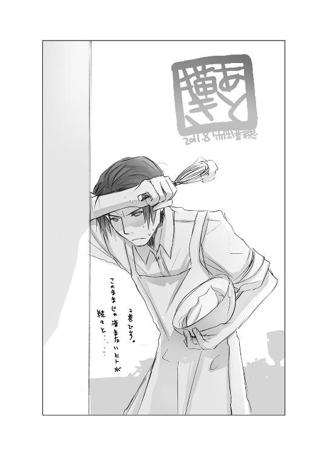
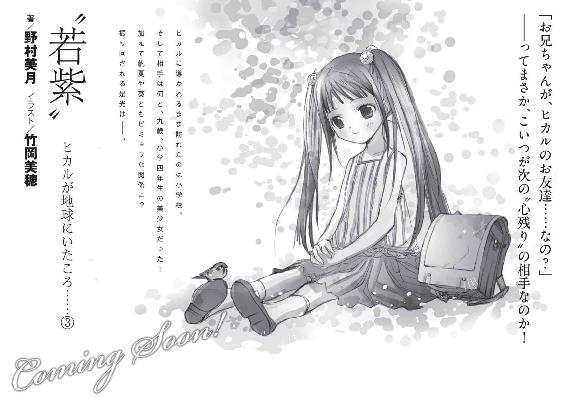
電子版 ファミ通文庫
〝夕顔〟
ヒカルが地球にいたころ......(2)
著者／野村美月
イラスト／竹岡美穂
発行者 浜村弘一
発行所 株式会社 エンターブレイン
http://www.enterbrain.co.jp/
デザイン 高橋秀宜（Tport DESIGN）
(c)2011 Mizuki Nomura
PUBLISHED BY ENTERBRAIN, INC.
本電子書籍はファミ通文庫『〝夕顔〟ヒカルが地球にいたころ......(2)』
（2011年9月9日発行 初刷）を元にして制作しております。